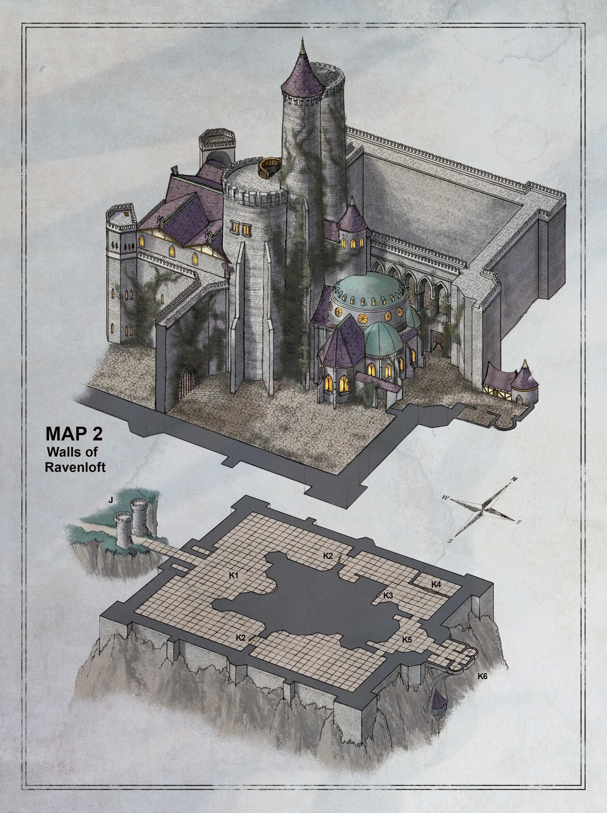
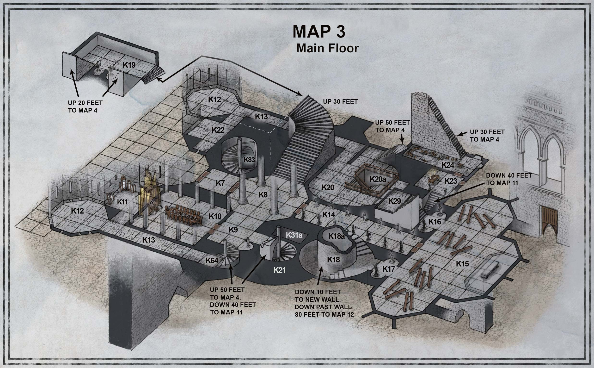
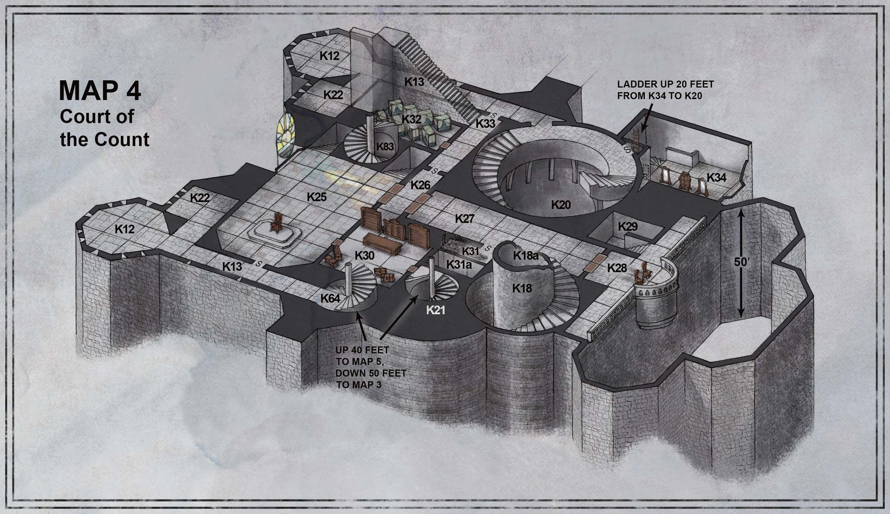
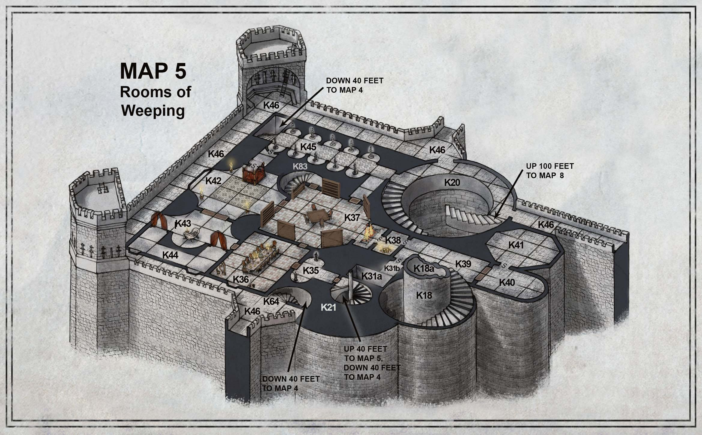
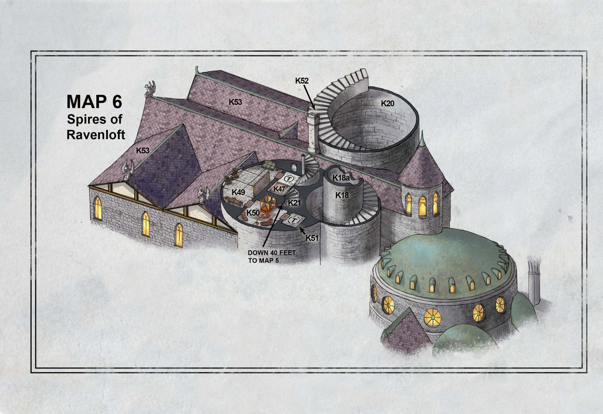
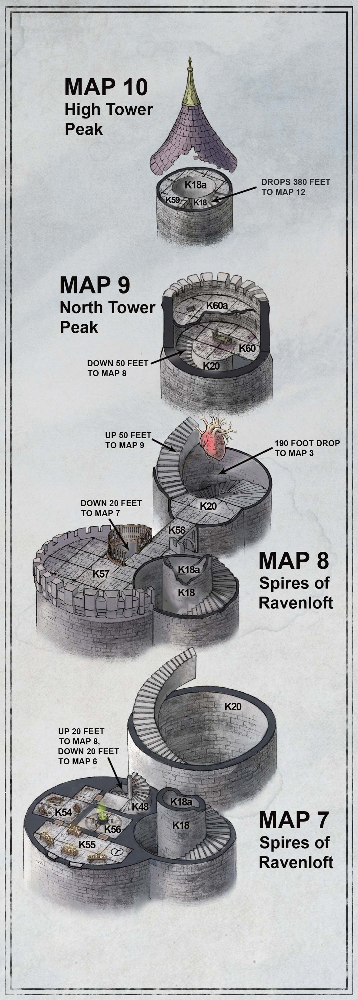
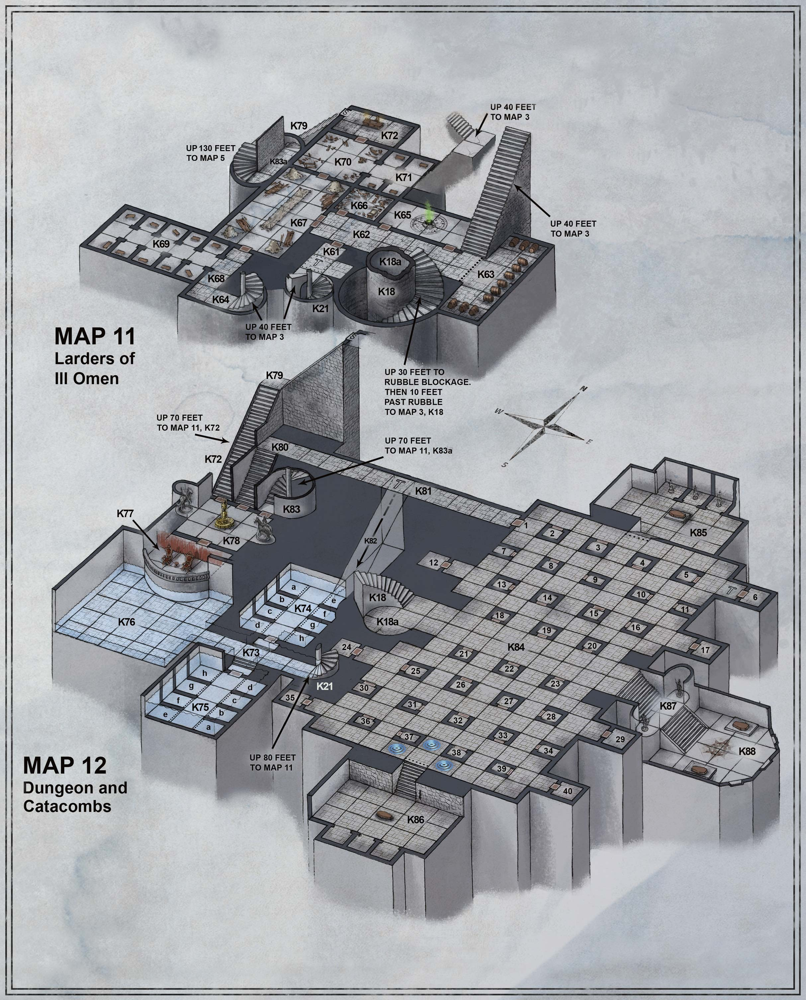
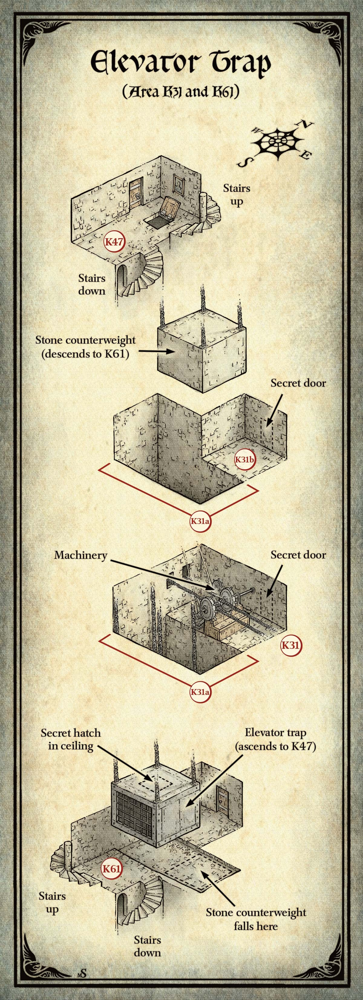

레이븐로프트 성(Castle Ravenloft)은 스트라드(Strahd) 가문에 충성하는 장인, 마법사, 노동자들이 더 오래된 요새의 폐허 위에 건축한 것이다. 스트라드는 이 성의 천재적 건축가 아르티무스(Artimus)에게 성의 지하묘지에 안치될 납골당을 하사하여 보상했다. 이 성은 스트라드의 어머니 레이븐오비아(Ravenovia)의 이름을 따 명명되었으며, 그녀 역시 지하에 묻혀 있다.
이 책에 동봉된 포스터 지도에는 성 전체가 표시되어 있다. 포스터의 지도 1은 성의 정면도를 보여주며, 나머지 지도들은 성의 내부와 외부 구역을 보여준다. 이 모든 장소는 "레이븐로프트의 성벽" 구역부터 시작하여 이 장에서 설명한다.
나는 오래전 고대의 왕좌에서 물러난 내 가문을 불러모아, 이곳 레이븐로프트 성에 정착시켰다.
— 스트라드의 고서(Tome of Strahd)
캐릭터들이 다른 존재가 점유하지 않은 성 구역에 처음 들어설 때, 무작위 조우를 확인한다. 또한 캐릭터들이 성에서 휴식을 취하는 동안 10분마다 무작위 조우를 확인한다.
대부분의 상황에서, d20을 굴려 18 이상이 나오면 무작위 조우가 발생한다. 캐릭터들이 무엇을 만나는지 결정하려면 아래 표를 참조한다.
| d12 + d8 | 조우 |
|---|---|
| 2 | 에즈메렐다 다브니르(Ezmerelda d'Avenir) (부록 D 참조) |
| 3 | 라하딘(Rahadin) (부록 D 참조) |
| 4 | 검은 고양이 1마리 |
| 5 | 공격하는 빗자루(broom of animated attack) 1개 (부록 D 참조) |
| 6 | 비행 검(flying sword) 1d4 + 1개 |
| 7 | 블린스키 장난감(Blinsky toy) |
| 8 | 보이지 않는 하인(unseen servant) |
| 9 | 바로비아 평민(Barovian commoner) 1d4명 |
| 10 | 기어다니는 손(crawling claw) 2d6마리 |
| 11 | 그림자(shadow) 1d6마리 |
| 12 | 박쥐 떼(swarm of bats) 1d6무리 |
| 13 | 기어다니는 스트라드 좀비(crawling Strahd zombie) 1마리 (부록 D 참조) |
| 14 | 비스타니 깡패(Vistani thug) 1d4 + 1명 |
| 15 | 와이트(wight) 1d4마리 |
| 16 | 장신구(trinket) |
| 17 | 거대 거미 고치(giant spider cocoon) |
| 18 | 바로비아 마녀(Barovian witch) 1명 (부록 D 참조) |
| 19 | 뱀파이어 스폰(vampire spawn) 1d4 + 1마리 |
| 20 | 스트라드 폰 자로비치(Strahd von Zarovich) (부록 D 참조) |
각 조우를 진행하려면 아래의 설명을 활용한다.
레이븐로프트의 신성모독적인 전당에 요란한 소동이 울려 퍼진다. "뱀파이어를 죽여라!"라는 외침에 "다시는 안 돼!"와 "지하묘지로!"라는 대담한 목소리가 뒤섞인다.
성에 들어온 분노한 마을 주민들이 횃불과 쇠스랑을 흔들며 우스꽝스러운 무력 시위를 벌인다. 그들이 가는 곳마다 정의를 외친다. 막지 않으면 캐릭터들을 따라다닌다. 이 바로비아 주민들이 모험자들과 함께 있는 한, 무작위 조우는 9 이상에서 발생한다.
거친 여인의 쉰 목소리가 이름을 부르는 것이 들린다. "그리즐거트! 그리즐거트, 어디 있어? 이 더러운 고양이 놈, 역병에나 걸려라!"
어둠 속에서 뾰족한 검은 모자와 그을음 얼룩진 삼베 가운을 입은 노파가 다가온다.
캐릭터들은 마녀(암시야가 있음)에게서 숨거나 기습을 시도할 수 있다. 이 바로비아 마녀는 구역 K56에 거주하는 스트라드의 하인 중 하나다. 그녀는 사라진 검은 고양이 사역수의 이름을 부르고 있다. 캐릭터들이 대면하면, 노파는 그들에게 침을 뱉고 주문을 시전하기 시작한다.
이 조우는 한 번만 발생한다. 이 결과가 다시 나오면, 조우 없음으로 처리한다.
어둠 속에서 악마적인 쉬익 소리가 나더니 검은 고양이가 그림자에서 뛰쳐나와, 당신들을 피하려고 안간힘을 쓴다.
이 사역수는 자신의 주인(바로비아 마녀)을 찾고 있다. 캐릭터들과는 아무 상관도 하고 싶지 않지만, 궁지에 몰리면 공격한다.
캐릭터들이 고양이를 잡거나 죽이면, 이 조우는 다시 발생하지 않는다. 이 결과가 다시 나오면, 조우 없음으로 처리한다.
블린스키 장난감은 캐릭터들이 성을 이동 중일 때만 조우한다(휴식 중이 아닐 때). 그렇지 않으면 조우 없음으로 처리한다.
버려진 장난감을 발견한다 — 어떤 아이도 좋아할 수 없을 물건이다.
장난감에는 작은 글씨로 꿰매거나 인쇄된 구호가 있다: "재미 없으면, 블린스키 아니다!(Is No Fun, Is No Blinsky!)" d6을 굴려 구체적인 장난감을 결정한다:
| d6 | 장난감 |
|---|---|
| 1 | 톱밥과 작은 나무 조각 아기들로 속을 채운 봉제 늑대인간. 무딘 칼날로 된 발톱과 접이식 이빨이 달려 있다. |
| 2 | 엉킨 줄과 모자에 꿰매진 작은 구리 방울이 달린, 미소 짓는 어릿광대 꼭두각시. |
| 3 | 한 변이 6인치인 나무 퍼즐 상자로, 능글맞게 웃는 광대 얼굴의 실루엣이 새겨져 있다. 흔들면 달그락거린다. 짧은 휴식 동안 상자를 만지작거리는 캐릭터는 DC 20 지능 판정에 성공하면 여는 방법을 알아낸다. 상자는 비어 있으며, 달그락 소리를 설명할 만한 것은 아무것도 없다. |
| 4 | 세월에 누렇게 변색되고 해어진 웨딩드레스를 입은 얼굴 없는 인형. |
| 5 | 관 모양의 깜짝 상자로, 튀어나오는 스트라드 꼭두각시가 들어 있다. |
| 6 | 송곳니가 달린 나무 이빨 세트로, 모두 하얗게 칠해져 있다. 스프링을 단단히 감아(행동 필요) 놓으면, 이빨이 1분 동안 딱딱거리며 덜컥거린다. |
긁는 소리가 들린다. 그림자 속에서 보이지 않는 손에 쥐어진 듯 바닥을 쓸며 빗자루 하나가 다가온다.
파티원 5피트 이내에 오면 빗자루가 공격한다.
그을음으로 검게 변한 미라화된 살점의 잘린 손 무리가 어둠 속에서 먼지 낀 바닥을 가로질러 기어 나온다.
기어다니는 손들이 파티원 한 명에게 달려든다. 혼란 와중에, 손 하나가 캐릭터의 배낭에 기어들어 숨으려 한다. 손은 캐릭터의 수동 지혜(감지) 점수에 대항하여 민첩(은신) 판정을 한다. 손이 대결에서 지면, 캐릭터가 손이 배낭에 들어가는 것을 본다. 손이 이기면, 캐릭터가 긴 휴식을 취할 때까지 기다렸다가 기어 나와 공격한다.
사악한 무언가의 죽음 같은 신음이 들린다.
신음은 두 다리가 모두 없어져 머리, 몸통, 팔만 남은 스트라드 좀비에게서 나온다. 팔로 바닥을 끌며 이동한다. 이 기어다니는 좀비는 남은 HP가 15다.
캐릭터들이 조용히 이동하며 광원을 사용하지 않는다면, 기어다니는 좀비에게서 숨을 수 있다.
에즈메렐다(Ezmerelda)는 자신에게 상위 투명화(greater invisibility) 주문을 시전하고 은밀히 성을 탐색 중이다. 파티 행군 대열의 후열에서 캐릭터 한 명을 선택하고, 그 캐릭터의 플레이어에게 다음을 읽어준다:
어깨에 가벼운 두드림이 느껴지지만, 뒤를 돌아봐도 아무것도 보이지 않는다.
에즈메렐다에게 접촉당한 캐릭터가 놀라거나 위협적으로 반응하면, 그녀는 급히 속삭인다. "겁먹지 마세요. 우리는 같은 편이에요."
에즈메렐다는 스트라드를 사냥하고 있지만, 뱀파이어를 궁지에 모는 노력은 번번이 좌절되어 자신의 능력 밖일지도 모른다고 두려워한다. 캐릭터들이 합류를 요청하지 않으면, 그녀는 행운을 빌며 자기 갈 길을 간다(이후 다시 만날 수도 있다). 합류를 권하면, 에즈메렐다는 "뱀파이어가 형태를 바꾸는 걸 본 적 있나요?" "뱀파이어의 재생 능력을 막는 법을 아나요?" 같은 질문으로 캐릭터들의 뱀파이어 지식을 시험한다. 대답이 어떻든, 궁극적으로 동행에 동의한다.
이 무작위 조우는 한 번만 발생한다. 이 결과가 다시 나오면, 조우 없음으로 처리한다.
어둠 속에서 녹슨 칼날이 날아오고, 또 하나가 뒤따른다!
비행 검이 둘 이상 조우되면, 나머지도 멀지 않은 곳에 있다. 이 무기들은 성을 떠돌며 자신의 맹목시야 범위 내의 침입자를 공격한다.
거대 거미 고치는 캐릭터들이 성을 이동 중일 때만 조우한다(휴식 중이 아닐 때). 그렇지 않으면 다시 굴린다.
짙은 거미줄 사이에서 하얀 고치가 천장에 매달려 있으며, 사람 형태의 무언가를 감싸고 있는 것처럼 보인다.
거대 거미가 이 고치를 만들었다. 닿을 수 있는 캐릭터는 잘라서 내용물을 꺼낼 수 있다. d6을 굴려 고치의 내용물을 결정한다:
| d6 | 고치의 내용물 |
|---|---|
| 1 | 가운을 입은 나무 마네킹. |
| 2 | 바로비아 마녀(부록 D 참조). 야생 동물처럼 비명을 지르며 주문을 시전하기 시작한다. |
| 3 | 스트라드 좀비(부록 D 참조). 죽을 때까지 싸운다. |
| 4 | 바로비아 광인(혼돈 중립 남성 평민). 풀려나면 침묵시키거나 감정 진정(calm emotions) 주문을 시전할 때까지 미친 듯이 낄낄거린다. 하위 복원(lesser restoration) 주문으로 광기를 치료하면, 성에서 도망치려 한다. |
| 5 | 벌레 떼(거미)의 숙주 역할을 하는 죽은 바로비아인. 아기 거대 거미들(각각 타란튤라 크기)이 벌어진 입에서 기어 나오거나 부풀어 오른 배에서 튀어나온다. |
| 6 | 비스타나 도적(혼돈 중립 남성 또는 여성). 이 비스타나는 성의 구조를 알고 있으며, 스트라드나 다른 비스타니가 나타날 때까지 캐릭터들을 돕는다. 그 시점에서 배신적인 비스타나는 캐릭터들을 배반한다. |
라하딘이 이전 조우에서 죽거나 포로가 되었다면, 이 조우는 발생하지 않는다. 그렇지 않으면, 스트라드의 수수께끼 같은 시종이 조용히 접근한다. 수동 지혜(감지) 점수가 라하딘의 민첩(은신) 판정 이상인 캐릭터가 그를 듣는다.
어둠 속에서 냉혹한 목소리가 울린다. "주인님께서 뵙기를 원하십니다."
라하딘은 캐릭터들을 성 내의 무작위 장소로 안내한다. d6을 굴려 결정한다:
| d6 | 장소 |
|---|---|
| 1 | 예배당 (구역 K15) |
| 2 | 알현실 (구역 K25) |
| 3 | 서재 (구역 K37) |
| 4 | 탑 옥상 (구역 K57) |
| 5 | 포도주 저장실 (구역 K63) |
| 6 | 고문실 (구역 K76) |
카드 점술(제1장 참조)이 스트라드가 그곳에 있다고 지정하지 않는 한, 스트라드는 실제로 그 장소에 없다.
캐릭터들이 라하딘에게 안내를 요청하면 거절한다. 방향을 물으면, 올라가야 하는지, 내려가야 하는지, 현재 층에 머물러야 하는지를 알려준다. 공격하면 죽을 때까지 싸운다. 그렇지 않으면 캐릭터들이 떠난 후에야 자리를 뜬다.
하나 이상의 캐릭터가 수동 지혜(감지) 점수 16 이상이면, 다음을 읽어준다:
뒤에 무언가 있다는 느낌을 떨칠 수가 없다. 뒤를 돌아보면, 키가 크고 움직이지 않는 그림자가 보이지만, 그것을 드리울 만한 실체는 아무것도 없다.
그림자가 하나 이상이면, 나머지는 가까이에 있지만 어둠에 숨어 있다. 이 언데드 그림자들은 캐릭터들을 따라다니지만 먼저 공격받지 않는 한 공격하지 않는다. 그 외에는 스트라드의 명령에 복종한다.
스트라드가 기습적으로 나타난다.
천둥의 굉음이 성을 뒤흔들며 먼지와 거미줄을 날린다. 한 목소리가 들린다: "좋은 저녁이오."
수동 지혜(감지) 점수가 19 미만인 캐릭터는 스트라드가 허공에서 나타난 것처럼 보이며 기습당한다. 뱀파이어는 기습당한 캐릭터 중 가장 가까운 자를 우선 공격한다. 그 외의 전술은 부록 D를 참조한다.
천둥이 울리고, 작은 검은 날개의 퍼덕임이 뒤따른다. 갑자기, 어두운 박쥐 구름이 당신들에게 덮쳐 내려온다!
이 박쥐들은 스트라드의 하인이다. 아무런 도발 없이 캐릭터들을 공격한다.
무작위 캐릭터 한 명이 잃어버린 장신구를 발견한다. 해당 캐릭터의 플레이어에게 다음을 읽어준다:
무언가를 발로 찬다 — 먼지 속에 묻힌 장신구다.
캐릭터가 무엇을 찾았는지 결정하려면, 부록 A의 장신구 표에서 굴린다.
흥미로운 물건이 보이지 않는 힘에 들린 것처럼 시야에 떠다니며 들어온다.
이 보이지 않는 하인은 스트라드가 만든 것으로, 파괴되기 전까지 영구적이다(플레이어즈 핸드북의 보이지 않는 하인 주문 참조). d6을 굴려 하인이 들고 있는 물건을 결정하거나, 아래 선택지 중 하나를 고른다.
| d6 | 물건 |
|---|---|
| 1 | 뚜껑이 달린 변색된 은 쟁반(25 gp). 캐릭터가 5피트 이내에 오면, 하인이 뚜껑을 들어 올려 곰팡이 핀 스콘 한 무더기를 드러낸다. 스콘을 처음 먹은 캐릭터는 영감(inspiration)을 얻는다. 이 조우가 이후에 다시 발생하면, 쟁반에는 가장 가까운 캐릭터를 공격하는 기어다니는 손이 들어 있다. |
| 2 | 가장자리까지 포도주가 가득 찬 은 잔(50 gp). 포도주를 마신 캐릭터는 DC 15 건강 내성 굴림을 해야 하며, 실패 시 44(8d10) 독 피해를, 성공 시 절반의 피해를 받는다. 이 조우가 이후 발생하면, 포도주는 치유 물약(potion of healing)으로 작용한다. |
| 3 | 세 갈래의 금 촛대(150 gp)로, 각 가지에 불 켜지지 않은 양초가 꽂혀 있다. |
| 4 | 하얀 주름 장식 가장자리의 보라색 비단 손수건(1 gp). 이 조우가 이후 발생하면, 손수건에 신선한 피가 묻어 있다. |
| 5 | 수정 만찬 종(25 gp). 캐릭터들이 10피트 이내에 오면 보이지 않는 하인이 종을 울린다. 소리는 1d4마리의 굶주린 뱀파이어 스폰(아래 참조)을 끌어들이며, 1d4 + 1 라운드 후에 도착한다. |
| 6 | 봉합된 가죽 표지 위에 검은 벨벳 방진 커버가 씌워진 마법사의 주문서. 주문서에는 스트라드가 준비한 모든 주문이 수록되어 있다(부록 D 참조). 이 조우가 이후 발생하면, 책은 25 gp 가치의 비마법적 가죽 장정 이야기책이다. |
캐릭터 중 수동 지혜(감지) 점수가 16 이상인 자가 있다면, 파티는 기습당하지 않는다. 그 경우, 다음을 읽어준다:
창백한 살점의 생물들이 거미처럼 천장을 가로질러 기어 다니며, 어둠 속에서 붉은 눈이 빛난다. 다가오면서, 갈라지고 핏자국 묻은 입술이 크게 벌어져 날카로운 송곳니를 드러낸다.
스트라드의 이 하수인들 — 모두 한때 모험자였던 자들 — 은 천장을 타고 기어 다니며 방심한 먹잇감 위로 떨어진다. 뱀파이어 스폰은 파괴될 때까지 싸운다.
짙은 억양의 목소리가 들린다.
소규모 비스타니(Vistani) 무리(악 중립 남녀 인간 깡패)가 자신들은 뱀파이어의 포로였으며 최근 성의 지하감옥에서 탈출했다고 주장하며 파티를 돕겠다고 제안한다. 사실 그들은 스트라드에게 충성하며 스트라드가 나타나면 즉시 캐릭터들을 배반한다. 캐릭터들이 제안을 수락하면, 비스타니는 파티와 함께 있는 동안 또는 스트라드가 나타날 때까지 아군인 척한다. 캐릭터들이 성을 떠나면, 비스타니도 동행하는데, 성에 남으면 의심을 살 것이기 때문이다.
비스타니 깡패 한 명이 2d8개의 작은 보석(각 50 gp)이 든 주머니를 지니고 있다.
공기가 훨씬 차가워지고, 다가오는 발자국 소리가 들린다.
캐릭터들이 조용히 이동하며 광원을 들고 있지 않다면, 와이트에게서 숨을 수 있다. 이 언데드 병사들은 한때 레이븐로프트 성의 경비 대장으로 복무했다. 아직도 해어진 제복 조각을 걸치고 있으며, 산 자를 발견하면 즉시 공격한다.
와이트는 칼날 십자 보호대에 바로비아의 문장이 새겨진 장검을 지니고 있다. 각 와이트는 또한 2d20 ep가 든 주머니를 소지하며, 각 동전은 바로비아에서 주조된 것으로 스트라드 폰 자로비치의 측면 초상이 새겨져 있다.
구역 K1부터 K6까지는 성의 지도 2를 참조한다.

캐릭터들이 성에 들어서면, 날씨가 악화된다. 음산한 비가 내리기 시작하고, 한 시간 안에 폭우로 변한다. 번개가 수시로 하늘을 가르고, 뒤따르는 천둥이 성을 뒤흔든다.
짙고 차가운 안개가 이 안뜰에 소용돌이친다. 번개의 산발적인 섬광이 머리 위 울먹이는 구름을 꿰뚫고, 천둥이 대지를 뒤흔든다. 이슬비 너머로 본관의 열린 정문 양쪽에서 횃불 불꽃이 흔들리는 것이 보인다. 따뜻한 빛이 입구에서 쏟아져 나와 안뜰을 밝힌다. 입구 한참 위에 철 틀에 깨진 유리 파편이 박힌 둥근 창문이 있다.
안뜰을 감싸는 성벽은 높이 90피트이다. 성의 어두운 탑들은 더욱 높이 솟아 있다. 터널 입구 양쪽 관문탑의 문은 비를 막기 위해 닫혀 있으며, 으르렁거리는 바람이 안뜰을 휘몬다.
본관으로 향하는 열린 정문은 구역 K7로 통한다. 정문 위의 깨진 큰 창문은 안뜰에서 50피트 높이에 있으며 구역 K25로 연결된다. 큰 창문을 통해서는 빛이 보이지 않는다.
각 외곽 관문탑에는 내장 자물쇠가 달린 철띠 문이 있다.
관문탑에 들어선 캐릭터들은 높이 텅 빈 탑이 위로 뻗어 있는 석판 바닥 위에 서게 된다. 도개교와 격자문을 올리고 내리는 메커니즘이 양쪽 관문탑을 채우고 있다. 각 탑의 걸쇠 장치는 스트라드만 아는 말로 마법적으로 작동된다. 마법 무효화(dispel magic)의 성공적인 시전(DC 14)으로도 작동시킬 수 있다. 양쪽 걸쇠가 모두 작동되기 전까지는 도개교와 격자문 모두 움직이지 않는다.
두 개의 관문 — 하나는 본관 북쪽에, 하나는 남쪽에 — 이 그 너머로의 접근을 막고 있다.
거대한 벽이 돌출하여 성의 외벽과 본관을 연결한다. 20피트 폭, 20피트 높이의 아치형 통로가 연결 벽을 관통하지만, 녹슨 철 격자문이 막고 있다.
격자문은 잠겨 있지 않으며 DC 15 근력 판정에 성공하면 들어올릴 수 있다. 스트라드와 사이러스 벨뷰(Cyrus Belview, 구역 K62)만 아는 명령어로도 열 수 있다. 격자문을 쐐기나 받침대로 고정하지 않으면, 놓는 순간 다시 내려온다.
본관 북동쪽의 이 안뜰은 높이 솟은 벽으로 둘러싸여 있다. 경첩 달린 나무 문이 있는 석조 마차 차고가 외벽이 만나는 모서리에 조용히 서 있다. 마차 차고 맞은편에, 철띠로 보강된 가느다란 나무 문이 본관으로 통한다.
마차 차고는 구역 K4에서 설명한다. 구역 K23으로 통하는 나무 문은 틀에 물이 차서 붓어 있다. DC 10 근력 판정에 성공하면 어깨로 밀어 열 수 있다.
캐릭터들이 마차 차고 문을 열면 다음을 읽어준다:
양쪽 문이 열리며 유리 창문과 황동 등이 달린 매끈하고 검은 마차가 드러난다.
본관 뒤편, 우뚝 솟은 부벽과 널빤지로 막힌 높은 스테인드글라스 창문 뒤에, 작은 정원이 살아남으려 발버둥 친다. 작은 꽃들이 음산함에 맞서 하늘을 향해 밀어 올린다. 한 쌍의 큰 철문이 일종의 전망대로 가는 길을 막고 있다.
큰 철문은 녹슨 경첩에서 날카로운 소리를 낸다. 그 너머에는 구역 K6이 있다.
머리 위 먹구름에서 끊임없이 이슬비가 내린다. 석판 포장 길이 빈 부속 건물들 사이를 지나, 돌로 포장된 전망대로 이어진다. 전망대에는 바깥을 향한 가고일 조각이 새겨진 낮은 돌 벽이 있다.
캐릭터가 난간 너머를 내다보면, 다음을 읽어준다:
번개 섬광이 음울한 바로비아 마을을 비추며, 1,000피트 아래 질식할 듯한 안개 담요 위로 지붕들이 보인다.
수동 지혜(감지) 점수 15 이상인 캐릭터가 벽 너머를 내다보면, 다음을 추가한다:
당신이 서 있는 플랫폼 아래, 약 100피트 아래에, 석조 구조물이 절벽 면에서 돌출해 있다. 세 개의 흙 묻은 창문이 그 안에 나 있다.
창문은 흙이 너무 많이 묻어 불투명하지만, 창문에 손이 닿는 캐릭터는 흙을 긁어내고 너머의 먼지 쌓인 무덤을 볼 수 있다(구역 K88). 전망대에서 창문에 도달하려면 110피트를 내려간 뒤 플랫폼 아래로 20피트를 이동해야 한다. 이 하강은 마법이나 등반 도구의 도움 없이는 불가능하다.
전망대에서 떨어지는 자는 1,000피트를 추락한다.
카드 점술이 이 구역에서 스트라드와의 조우를 가리킨다면, 그는 난간 위에서 먼 곳을 내다보고 있다.
구역 K7부터 K24까지는 성의 지도 3을 참조한다.

캐릭터들이 안뜰(구역 K1) 쪽에서 접근하면 다음을 읽어준다:
성의 화려한 바깥 문이 활짝 열려 있고, 양쪽의 철 거치대에 꽂힌 횃불이 흔들린다. 성 안쪽 20피트 지점에 두 번째 문이 있다.
한 명 이상의 캐릭터가 구역 K1 쪽에서 접근하여 양문에서 10피트 이내에 오면, 다음을 읽어준다:
눈앞의 문이 갑자기 활짝 열리며, 오르간 음악 소리로 가득 찬 대전당이 드러난다.
캐릭터들이 구역 K8 쪽에서 접근하며 아직 이 구역을 방문하지 않았다면, 다음을 읽어준다:
서쪽의 양문이 성의 출구이거나 출구로 통하는 것으로 보인다.
캐릭터들이 어느 방향에서든 들어오면, 다음을 읽어준다:
아치형 천장의 현관 위에서, 네 개의 용 석상이 아래를 내려다보며, 횃불빛에 그 눈이 깜빡인다.
스트라드 외의 누군가가 구역 K8에 접한 문을 통해 이 구역에 들어오면, 용들이 살아나 바닥으로 뛰어내려 쉬익거리며 침을 뱉고 공격한다. 용들은 구역 K1에서 동쪽을 향해 들어오는 캐릭터는 공격하지 않는다. 용은 네 마리의 레드 드래곤 와이밀링(red dragon wyrmling)이며, 손님이 성에 들어오는 것은 허용하되 나가는 것은 허용하지 말라는 지시를 받았다. 침입자들이 이 구역을 비우면, 용들은 횃대로 날아올라 돌로 되돌아간다. 석상 형태에서는 무기 피해에 면역이다. 용들은 이 방을 절대 떠나지 않는다.
거미줄이 아치형 천장을 지탱하는 기둥 사이에 펼쳐져 있고, 이 거대하고 먼지 낀 전당은 철 거치대에 꽂힌 지직거리는 횃불로 어슴프레 밝혀져 있다. 횃불이 돔형 천장 가장자리에 웅크린 여덟 개의 석조 가고일 얼굴에 기이한 그림자를 드리운다. 갈라지고 바랜 천장 프레스코화가 부패로 덮여 있다. 동쪽에 청동 양문이 닫혀 있다. 북쪽으로 넓은 계단이 어둠 속으로 올라간다. 남쪽의 밝혀진 복도에 또 다른 청동 양문이 있으며, 그 너머로 슬프고 장엄한 오르간 선율이 들려온다.
남쪽 복도는 구역 K9에서 설명한다. 넓은 계단은 구역 K19로 올라간다.
캐릭터들이 초대를 받아 이곳에 왔다면, 다음을 추가한다:
갈색 피부에 긴 검은 머리카락의 엘프가 고양이처럼 조용히 넓은 계단을 내려온다. 검은 징박힌 가죽 갑옷 위에 회색 망토를 걸치고, 광택 낸 시미터가 허리에 달려 있다. "주인님께서 기다리고 계십니다," 그가 말한다.
이 엘프는 성의 시종 라하딘(부록 D 참조)이다. 공격받지 않는 한 싸우지 않는다. 그렇지 않으면 캐릭터들을 만찬실(구역 K10)로 안내하고, 안으로 가리킨 뒤, 문을 닫고 남쪽 탑 계단(구역 K21)을 통해 구역 K72로 물러난다.
모든 캐릭터가 이 방을 떠난 후, 여덟 개의 가고일이 감히 돌아오는 모든 캐릭터를 공격한다. 가고일은 공격을 받아도 급강하하여 싸운다. 가고일이 공격할 때, 그들의 날개에서 일어난 난기류가 거치대의 미약한 횃불을 꺼뜨려, 캐릭터들이 광원을 가지고 있지 않는 한 전당이 어둠에 잠긴다.
횃불빛이 이 아치형 홀의 벽에 너울거린다. 동쪽으로 아치형 복도가 20피트 뻗어 있고, 위아래로 이어지는 나선 계단에서 끝난다. 복도 옆, 얕은 벽감에 기름칠되어 반짝이는 갑옷 한 벌이 차려 서 있다. 서쪽으로 큰 양문이 약간 열려 있고, 그 틈으로 꾸준한 밝은 빛이 새어 나온다. 문 뒤에서 오르간 음악의 파고가 쏟아져 나와, 힘과 패배의 선율을 홀에 뿌린다.
벽감에 서 있는 갑옷은 잘 관리된 평범한 판금 갑옷에 불과하다.
나선 계단은 아래로 구역 K61로, 위로 구역 K30으로 통한다. 양문은 구역 K10으로 연결된다.
캐릭터들이 이 방에 처음 들어올 때, 다음을 읽어준다:
세 개의 거대한 크리스탈 샹들리에가 이 장엄한 방을 찬란하게 밝히고 있다. 칙칙한 백색 대리석 벽에 돌 기둥이 기대어 천장을 받치고 있다. 방 한가운데, 길고 무거운 탁자에 고운 백색 새틴 보가 덮여 있다. 탁자에는 풍미 가득한 소스를 바른 구운 짐승 고기, 온갖 맛의 뿌리채소와 허브, 달콤한 과일과 야채 등 수많은 맛있는 음식이 차려져 있다. 각 자리에는 정교하고 섬세한 도자기와 은식기가 놓여 있다. 각 자리에 섬세하고 유혹적인 향기가 나는 호박빛 액체가 담긴 크리스탈 잔이 있다.
맞은편 서쪽 벽 중앙에, 바닥에서 천장까지 이르는 거울 사이에, 거대한 오르간이 서 있다. 그 파이프가 위대함과 절망을 말하는 우렁찬 선율을 뿜어낸다. 오르간 앞에 등을 돌리고 앉아, 외투를 걸친 인물 하나가 황홀경에 빠져 건반을 두드리고 있다. 그 인물이 갑자기 멈추고, 만찬실에 깊은 침묵이 내려앉자, 천천히 당신들을 향해 돌아선다.
이 인물은 스트라드의 환영이다. 캐릭터들을 환영하며 식사에 초대한다. 환영은 스트라드처럼 행동하며 정중한 주인 역할을 하고, 친절하게 말하며 성을 자유롭게 둘러보라고 한다. "스트라드"는 가문에 대해 이야기하거나 성의 역사를 알려줄 수 있지만, 성의 거주자, 보물, 위험에 대해서는 "성에 손님이 많이 오지 않는다"는 것 외에 유용한 정보를 제공하지 않는다. 환영의 뱀파이어는 캐릭터들과 최대 3라운드 동안 대화하며, 오르간 의자에서 절대 일어나지 않는다. 시간이 다 되거나 환영이 공격받으면, 조롱하는 웃음과 함께 사라진다.
인물이 사라지는 순간, 맹렬하고 뼈를 에는 바람이 일어나 전당을 휘몰아치며 모든 열린 불꽃을 꺼뜨린다. 캐릭터들은 오래된 경첩의 삐걱 소리와 많은 무거운 문이 차례로 쾅 닫히는 소리가 점점 멀어지는 것을 듣는다. 또한 격자문이 철컥 닫히고 낡은 도개교가 올라가는 지친 신음 소리도 듣는다. 마지막으로, 이 방의 문이 열린 채 고정되어 있지 않다면, 문이 쾅 닫힌다(그러나 잠기지는 않는다). 캐릭터들이 문을 열면, 구역 K7, K8, K9의 모든 횃불이 꺼진 것을 본다.
오르간은 제자리에 고정되어 움직일 수 없는 것처럼 보이지만, DC 20 지혜(감지) 판정에 성공하면 바닥에 오르간을 바깥으로 밀 수 있음을 시사하는 긁힌 자국을 발견한다. 다양한 건반과 페달을 눌러보는 캐릭터는, 페달 하나를 밟으면 오르간이 약 2피트 바깥으로 밀리면서 구역 K11로 통하는 뒷벽의 비밀문이 열린다는 것을 발견한다. 이 비밀문은 오르간 뒤에 숨겨져 있으므로, 오르간을 치울 때까지는 찾아 열 수 없다.
탁자의 음식은 맛있고, 포도주는 훌륭하다.
북쪽과 서쪽 벽의 화살 구멍으로 성의 안뜰이 보인다. 벽에 기대어 다양한 크기의 거울이 놓여 있으며, 사람 키만큼 큰 것도 있고 배낭에 들어갈 만큼 작은 것도 있다.
각 화살 구멍은 높이 2.5피트, 폭 4인치이다. 틀에 끼워진 거울(모두 열일곱 개)은 원래 성의 여러 벽에 걸려 있던 것이다. 스트라드가 내려서 이곳에 보관하게 했다.
동쪽 벽의 비밀문을 당겨 열면 구역 K10의 파이프 오르간 뒷면이 드러난다. 오르간이 막고 있는 동안에는 비밀문을 통과할 수 없으며, 이쪽에서는 오르간을 움직일 수 없다.
높은 돔형 천장이 눈앞에 펼쳐진 30피트 폭의 팔각형 방 위를 덮고 있다. 세월에 바랜 프레스코화가 천장을 장식하지만, 그 그림은 알아볼 수 없다. 가늘고 높은 화살 구멍이 안뜰을 내다본다.
각 화살 구멍은 높이 2.5피트, 폭 4인치이다.
이 길고 좁은 복도는 동서로 이어진다. 거미줄이 복도를 가득 채워 몇 피트 앞도 보이지 않는다.
이 거대한 전당은 먼지로 뒤덮여 앞쪽 어둠 속으로 뻗어 있다. 아치형 천장에서 거미줄이 커튼처럼 내려와 있고, 실물 크기의 기사 석상들이 복도 양쪽에 줄지어 서 있으며, 그 눈이 당신들을 지켜보는 것 같다.
석상들은 무해하다. 움직이는 눈은 단순한 착시 현상이다.
전당 양 끝에 양문이 있다. 구역 K15로 통하는 문 위에 떠오르거나 지는 태양 모양의 두드린 청동 상징물이 걸려 있다.
희미하고 색색의 빛이 높고 깨지고 널빤지로 막힌 스테인드글라스 창문을 통해 스며들어, 레이븐로프트의 고대 예배당을 비춘다. 높이 90피트의 돔형 천장 꼭대기 근처에서 박쥐 몇 마리가 퍼덕인다. 서쪽 벽을 따라, 바닥에서 50피트 위에 발코니가 이어진다. 발코니 중앙에서, 두 개의 어두운 형체가 높은 의자에 기대 앉아 있다.
수 세기의 먼지로 뒤덮인 장의자들이 바닥에 뒤죽박죽 흩어져 있다. 이 잔해 너머, 관통하는 빛줄기에 비추어진 제단이 돌 단 위에 서 있다. 제단 측면에는 포도 덩굴과 얽힌 천사 형상의 부조가 새겨져 있다. 위에서 내리쬐는 빛이 은 소형 조각상 위에 직접 떨어진다. 망토를 걸친 인물이 제단 위에 엎드려 있고, 그 발치에 검은 철퇴가 바닥에 놓여 있다.
제단 위에 엎드린 인물은 구스타프 헤렌가스트(Gustav Herrenghast)의 전부이며, 레이븐로프트의 성상(Icon of Ravenloft)을 손에 넣으려다 살아남지 못한 합법적 악 인간 성직자이다. 성상과 구스타프의 소지품에 대해서는 아래 "보물"을 참조한다.
위층 발코니를 막는 조각된 돌 난간이 있으며, 발코니는 구역 K28에서 설명한다.
제단 위의 소형 조각상은 레이븐로프트의 성상(Icon of Ravenloft)이라 불리는 유물이다(부록 C 참조). 조각상을 만지는 악한 생물은 DC 17 건강 내성 굴림을 해야 하며, 실패 시 88(16d10) 광휘 피해를, 성공 시 절반의 피해를 받는다. 조각상이 제단과 접촉하지 않게 되면 모든 생물이 안전하게 다룰 수 있다.
구스타프의 시체에는 금실로 수놓아진 멋진 모피 안감의 검은 망토(250 gp)와 사슬 갑옷이 있으며, 둘 다 비마법적이다. 구스타프의 검은 철퇴는 공포의 철퇴(mace of terror)이다.
카드 점술이 보물이 여기 있다고 드러내면, 보물은 제단 뒤 바닥에 놓여 있다.
카드 점술이 이 구역에서 스트라드와의 조우를 가리킨다면, 그는 천장 아래 퍼덕이는 박쥐 사이에 있거나, 예배당 한쪽 끝에 서 있다 — 광활한 전당 속 어두운 형체로서.
이 아치형 방은 동쪽의 광대한 방과 서쪽으로 올라가는 계단을 연결한다. 북쪽과 남쪽 벽의 벽감에 8피트 높이의 근육질 투구 기사 조각상이 서 있다. 그 얼굴에 검은 그림자가 드리워져 있다.
석상들은 무해하다. 동쪽의 광대한 방은 예배당(구역 K15)이다. 서쪽 계단은 구역 K29에서 설명한다.
이 아치형 방은 동쪽의 광대한 방과 서쪽 계단 참을 연결한다. 참의 왼쪽으로 계단이 어둠 속으로 내려가고, 오른쪽으로는 짙은 거미줄 커튼 속으로 올라간다. 북쪽과 남쪽 벽의 벽감에 8피트 높이의 밝은 칼날을 든 투구 기사 조각상이 서 있다. 그 얼굴에 검은 그림자가 드리워져 있다.
석상들은 무해하다. 동쪽의 광대한 방은 예배당(구역 K15)이다. 서쪽 계단은 구역 K18에서 설명한다.
이 나선 계단의 큰 석판은 20피트 폭 석조 중심 기둥을 따라 위아래로 이어진다. 거미줄이 계단을 가득 채워 천장조차 보기 어렵다. 무거운 대들보가 수 세기 동안 무게를 지탱하느라 위에서 처져 있다.
계단은 구역 K84에서 시작하여 중앙 수직 통로(구역 K18a)를 따라 나선형으로 올라가며, 고탑의 꼭대기(구역 K59)까지 300피트를 올라간다.
최근 축조된 석조 벽이 구역 K17 서쪽 계단 참 아래 10피트 지점에서 계단을 막고 있다. 이 벽의 틈으로 가스(또는 가스 형태의 뱀파이어)가 한쪽에서 다른 쪽으로 통과할 수 있다. 벽을 자세히 조사하는 캐릭터는 DC 10 지혜(감지) 판정에 성공하면 틈을 발견한다. 벽은 캐릭터들이 부수기에는 너무 견고하지만, 기어들어갈 만큼의 구멍을 1시간 만에 만들거나, 전체 벽을 석재 더미로 무너뜨리는 데 2시간이 걸린다.
석조 벽 아래 30피트, 계단 바닥에서 50피트 위에, 계단 외벽에 작은 균열이 생겨 있다. 균열은 폭 0.5인치, 높이 5인치, 깊이 12인치이며, 성의 포도주 저장실(구역 K63)로 통한다. 계단을 오르내리는 캐릭터는 균열을 자동으로 알아챈다. 균열을 통과할 수 있을 만큼 넓히려면 대규모 굴착이 필요하며 며칠이 걸린다.
이 계단이 감싸는 수직 통로(구역 K18a)는 구역 K59에서 구역 K84까지 구멍이나 장애물 없이 수직으로 이어진다. 계단과 수직 통로 사이의 계단실 안쪽 벽은 견고하다.
캐릭터들은 고탑의 꼭대기 또는 바닥(각각 구역 K59와 K84)에서 이 지름 10피트, 높이 390피트의 석조 수직 통로에 접근할 수 있다.
수직 통로는 어둡고 거미줄로 막혀 있다. 몰아치는 바람이 거미줄을 흔든다. 손잡이가 거의 없어, 마법이나 등반 도구의 도움 없이는 수직 통로를 오르는 것이 불가능하다.
지하묘지(구역 K84)의 박쥐들은 밤에 수직 통로를 타고 올라가, 다양한 화살 구멍과 탑의 꼭대기(구역 K59)에 있는 구멍을 통해 레이븐로프트 성 밖으로 나간다. 먹이를 먹은 뒤 같은 길로 돌아온다.
거대한 계단이 폭 20피트, 길이 40피트의 계단 참으로 올라간다. 석조 아치가 머리 위 20피트 높이의 프레스코화로 덮인 천장을 지탱한다. 프레스코화에는 말을 탄 갑주 기사들이 묘사되어 있으나, 세부 특징은 알아볼 수 없을 만큼 바랬다.
먼지가 공중에 떠다닌다. 남쪽 벽 양 끝에서 각각 계단이 어둠 속으로 올라간다. 계단 사이에 쌍둥이 벽감이 있고, 각 벽감에는 어두운 얼룩으로 뒤덮인 갑옷 한 벌이 서 있다. 각 갑옷은 용 머리 모양의 타격부가 달린 철퇴를 움켜쥐고 있다. 갑옷 위의 아치에 새겨진 글자는 긁혀 지워져 있다.
남쪽 벽의 두 계단 모두 구역 K25로 올라간다. 거대한 계단은 구역 K8로 내려간다. 남쪽 벽을 따라 벽감 앞을 지나는 사람은 갑옷을 작동시킨다.
두 갑옷 모두 기계식 함정으로, 각 벽감 앞 바닥에 숨겨진 감압판에 의해 작동된다. 이 위치에서 함정을 수색하는 캐릭터는 DC 15 지혜(감지) 판정에 성공하면 양쪽 감압판을 모두 발견한다.
감압판에 40파운드 이상의 무게가 실리면, 해당 감압판에 가장 가까운 갑옷이 튀어나와 팔을 휘두르며 철퇴를 휘두른다. 함정이 작동될 때 감압판 위에 서 있는 생물은 DC 14 민첩 내성 굴림에 성공하지 못하면 휘둘리는 갑옷으로부터 7(2d6) 타격 피해를 받는다. 튀어나와 공격한 후, 갑옷은 후퇴한다. 감압판은 1분 후 초기화되며, 그 후 갑옷 함정이 다시 작동될 수 있다.
갑옷은 금속 꼭두각시처럼 작동한다 — 방문자를 해치기보다 놀라게 하려는 작은 장난이다. 도둑 도구를 사용하여 DC 15 민첩 판정에 성공하면 감압판을 무력화할 수 있다. 갑옷을 파괴해도 함정을 무력화할 수 있으며, 갑옷은 AC 18, HP 5, 정신 및 독 피해 면역을 가진다.
모자이크 바닥이 당신 위로 솟아오르는 어둡고 차갑고 텅 빈 탑에 색채를 더한다. 나선 계단이 외벽을 따라 천천히 어둠 속으로 올라간다. 방 중앙에, 또 다른 계단이 아래로 내려간다.
바닥 중앙의 계단(구역 K20a)은 구역 K71로 내려간다.
나선 계단에는 난간이 없으며, 성의 본관과 그 위의 각 층을 연결한다. 먼저, 계단은 50피트를 올라 계단 참(지도 4에 표시)에 도달하며, 여기서 열린 아치형 통로가 구역 K13으로 통한다. 그 통로의 동쪽에 비밀문이 있으며, 구역 K34로 내려가는 사다리를 감추고 있다.
계단은 다시 40피트를 올라 또 다른 계단 참(지도 5에 표시)에 도달하며, 구역 K45와 K46으로 통하는 아치형 통로가 있다. 그 후 다시 100피트를 올라 탑의 심장 아래 계단 참(지도 8에 표시)에 도달한다. 계단은 심장을 감싸며, 탑의 꼭대기(구역 K60)에서 끝난다.
나선 계단을 포함한 탑 전체가 살아 있다. 캐릭터들이 처음으로 계단에 발을 디디면, 다음을 읽어준다:
나선 계단에 발을 디디자, 붉은빛이 머리 위 높이에서 타올랐다가, 둔하게 맥동하는 붉은 빛으로 가라앉는다. 이제 이 탑의 장대한 전모가 보인다. 나선 계단이 탑의 전체 높이를 따라 올라간다. 바닥에서 60피트 폭인 탑은 올라갈수록 좁아진다. 텅 빈 탑의 꼭대기에서, 거대한 수정 심장이 붉은 빛으로 맥동한다. 심장 위로, 계단이 계속 이어진다.
캐릭터들과 슬픔의 심장(Heart of Sorrow)이 주도권(initiative)을 굴린다. 캐릭터들이 탑을 떠났다가 나중에 돌아오면, 주도권을 다시 굴릴 수 있지만, 심장의 주도권 순서는 변하지 않는다.
깨어난 탑은 슬픔의 심장의 주도권 순서에서 흔들리고 기울어진다. 심장의 턴 시작 시 계단 위에 있거나 탑 벽에 매달려 있는 생물은 DC 10 민첩 내성 굴림에 성공하지 못하면 탑 바닥으로 추락한다. 계단 위를 기어다니거나 엎드린 캐릭터는 자동으로 성공한다.
슬픔의 심장은 탑 꼭대기 근처에 떠 있는 지름 10피트의 붉은 수정 심장이다. 근처 계단에 서 있는 캐릭터는 무기의 도달 범위가 최소 10피트라면 심장에 근접 공격을 할 수 있다. 유리 심장은 AC 15, HP 50이다. 심장의 HP가 0이 되면 산산조각 나며, 수정 파편이 피로 변하여 탑 내부와 계단에 비처럼 쏟아진다. 슬픔의 심장이 파괴되면 탑이 흔들림을 멈추고, 탑 내부가 어두워진다. 심장을 파괴하면 캐릭터들은 1,500 XP를 얻는다.
스트라드와 슬픔의 심장은 연결되어 있어, 스트라드가 받는 모든 피해가 심장으로 전이된다. 심장이 피해를 흡수하여 HP가 0이 되면, 심장은 파괴되고 스트라드가 남은 피해를 받는다. 슬픔의 심장은 HP가 최소 1 이상 남아 있으면 새벽에 HP를 모두 회복한다.
슬픔의 심장은 스트라드의 의지로 공중에 떠 있다. 마법 무효화(dispel magic)를 시전해도 효과가 없다.
애니메이션 할버드(Animated Halberds). 심장에 가장 가까운 계단 구간의 벽에 열 개의 애니메이션 할버드가 장착되어 있다. 몬스터 매뉴얼의 비행 검(flying sword) 스탯 블록을 사용하되, 각 할버드의 피해를 1d10 + 1로 늘리고 AC를 15로 줄인다. 할버드는 슬픔의 심장을 위협하는 모든 생물을 공격한다.
뱀파이어 스폰(Vampire Spawn). 스트라드는 슬픔의 심장에 피해가 가해지면 감지하고, 책임자를 처치하기 위해 네 마리의 뱀파이어 스폰을 보낸다. 이 뱀파이어 스폰은 스트라드가 오래전에 패배시킨 모험자들이다. 거미 등반(Spider Climb) 특성을 사용하여 탑 벽을 타고 기어와, 3라운드 후 도착한다.
이 계단은 구역 K20과 K71을 연결한다.
철제 벽걸이에 꽂힌 횃불들이 이 나선 계단을 비춘다. 차가운 바람이 회전하는 계단을 타고 내려오며, 횃불의 열기마저 죽이는 듯하다.
이 계단은 구역 K73에서 시작하여 구역 K61, K9, K30, K35를 거쳐 구역 K47에서 끝난다.
성 안뜰이 벽의 화살 구멍 사이로 보인다.
각 화살 구멍은 높이 2½피트, 너비 4인치이다.
희미한 빛이 동쪽 벽의 먼지 낀 창문을 통해 스며든다. 창문 옆의 문은 성의 북동쪽 안뜰로 통한다. 이 방의 모든 것이 먼지로 뒤덮여 있으며, 바닥 중앙에는 크고 무거운 탁자가 놓여 있다. 두꺼운 책 한 권이 책상 위에 펼쳐져 있고, 옆에는 잉크병과 깃펜이 있다. 북쪽 벽에는 부서진 문이 있고, 남쪽 벽의 계단은 어둠 속으로 내려간다. 계단 양쪽에는 빛나는 사슬 갑옷을 걸친 해골 형상이 녹슨 할버드를 들고 구부정하게 서 있다.
이 해골들은 사이러스 벨뷰(Cyrus Belview, 구역 K62 참조)가 조립한 것으로, 철사 틀로 연결되어 못에 걸려 있다. 위협이 되지 않는다.
계단은 구역 K62로 내려간다. 안뜰로 통하는 동쪽 문은 틀에 부풀어 올라 있어 DC 10 힘 판정에 성공해야 억지로 열 수 있다. 북쪽 문은 금이 가고 경첩에 느슨하게 매달려 있으며, 그 너머에는 또 다른 먼지 가득한 방(구역 K24)이 있다.
오래된 책은 바스러지고 낡았지만, 잉크병의 잉크는 신선하다. 각 페이지 상단에는 "편의를 위해 등록해 주십시오. 가까운 친족을 위해서도."라는 메시지가 적혀 있다. 책은 절반 이상이 이름으로 채워져 있지만, 모두 알아볼 수 없다.
부서진 가구와 찢어진 천이 이 20x40피트 방에 흩어져 있다. 북동쪽 구석의 먼지 낀 창문 한 쌍에서 희미한 빛이 들어온다. 난간 없는 좁은 계단이 북쪽 벽을 따라 올라간다.
계단은 구역 K34로 올라간다.
구역 K25부터 K34까지는 성의 지도 4를 참조한다.

안뜰에서 들어오는 희미한 빛이 서쪽 벽의 깨진 유리와 철제 격자창을 통해 이 대홀에 스며든다. 이 거대한 방은 으스스하고 음울한 어둠의 장소이다. 텅 빈 철제 벽걸이가 벽 곳곳에 박혀 있다. 수백 개의 먼지 쌓인 거미줄이 홀에 드리워져 천장을 가리고 있다. 창문 맞은편의 동쪽 벽에 이중문이 있다. 더 남쪽으로, 동쪽 벽에서 단일문도 나 있다. 북쪽 벽 양 끝의 계단이 아래로 내려간다.
홀의 최남단에는 대리석 단상 위에 커다란 나무 옥좌가 놓여 있다. 높은 등받이의 옥좌는 방 대부분에서 등을 돌린 채 남쪽을 향하고 있다.
남쪽 벽의 비밀문은 구역 K13으로 통한다. 먼지와 거미줄에 가려져 있으며, DC 16 지혜(지각) 판정에 성공해야 찾을 수 있다.
북쪽 벽의 두 계단 모두 구역 K19로 내려간다. 동쪽 이중문을 당기면 구역 K26이 나타난다. 동쪽 벽의 단일문은 구역 K30으로 열린다.
카드 점술이 이곳에 보물이 있다고 밝히면, 그것은 대리석 단상 위, 옥좌 바로 뒤에 놓여 있다.
카드 점술이 이 구역에서 스트라드(Strahd)와의 만남을 지시하면, 그는 나무 옥좌에 앉아 있다.
캐릭터들이 이중문을 통해 이 홀에 들어서면 다음을 읽는다:
문을 열면 10피트 앞에 또 다른 이중문이 보인다. 두 문 사이에 10피트 너비의 복도가 남북으로 뻗어 있다. 홀 양 끝의 어둠 속에 녹슨 갑옷과 해진 성 경비대 제복을 입은 인간 해골이 떠 있다.
"떠 있는" 해골들은 북쪽과 남쪽 벽의 못에 걸려 있다. 사이러스 벨뷰(구역 K62 참조)가 조립한 이 해골들은 철사로 연결되어 있으며 무해하다. 북쪽 벽의 해골 뒤에는 구역 K33으로 밀어서 열 수 있는 비밀문이 있다.
캐릭터들이 구역 K33에 연결된 비밀문을 통해 이 홀에 들어오면, 비밀문을 당겨 여는 즉시 문 안쪽에 걸린 해골을 보게 되며, 광원이나 암시야(darkvision)가 있으면 홀 남쪽 끝의 해골도 볼 수 있다.
높이 20피트의 이 홀은 거미줄로 뒤덮인 어두운 궁륭형 천장을 가지고 있다. 낮은 신음이 복도 전체를 오가며 오르락내리락하면서, 슬픔과 절망을 읊조린다.
신음 소리는 바람에 불과하다.
천장을 조사하는 캐릭터는 DC 20 지혜(지각) 판정에 성공하면 도르래와 밧줄이 천장을 따라 복도 전체에 걸쳐 있는 것을 발견한다. 거미줄에 잘 숨겨져 있다. 이 장치는 아래의 "뱀파이어의 비행"에서 설명한다.
홀 중간 남쪽에 좁은 비밀문이 있으며, 당기면 구역 K31이 나타난다.
서쪽 이중문 위의 은닉 구획에 스트라드와 똑같이 생긴 나무 마네킹이 숨겨져 있다. 검은 망토를 걸치고, 송곳니를 드러내고, 위협적인 자세로 팔과 손톱 달린 손가락을 뻗고 있다. 마네킹은 밧줄에 연결되어 있으며, 밧줄은 복도 천장을 따라 고정된 도르래를 통과한다.
하나 이상의 캐릭터가 어느 방향에서든 홀 중간 지점에 도달하면 다음을 읽는다:
돌이 돌에 긁히는 소리가 들리고, 이어서 박쥐의 삑삑 소리가 들린다. 소리 나는 방향을 보니, 뱀파이어(Vampire)의 송곳니 달린 얼굴, 뻗은 발톱, 펄럭이는 검은 망토가 위에서 당신을 향해 돌진해 온다! 낮고 걸걸한 웃음소리가 홀을 채운다.
긁히는 소리는 은닉 구획이 열리는 소리이고, 삑삑 소리는 마네킹의 무게를 지탱하는 도르래의 삐걱거리는 소리이다. 웃음소리는 환술(prestidigitation) 소법과 유사한 무해한 마법 효과이다.
플레이어들에게 주도권을 굴리게 하고, 주도권 순서 5에서 행동하는 "뱀파이어"와의 전투 조우로 진행한다. 자기 차례에 마네킹은 바닥 위 10피트 높이로 캐릭터들 위를 날아, 홀 동쪽 끝에 도달할 때까지 멈추지 않는다. 다음 차례에 방향을 바꿔 자신의 구획으로 돌아간다. 함정은 1분 후 재설정된다.
바닥에서 마네킹을 공격하려는 캐릭터는 최소 10피트의 사거리가 필요하다. 마네킹의 AC는 15이고 10 히트 포인트를 가지며, 독 및 정신 피해에 면역이다. 마네킹이 공중에서 0 히트 포인트로 줄어들면 바닥에 떨어진다.
조각된 석조 난간이 이 긴 발코니를 둘러싸고 있으며, 레이븐로프트(Ravenloft)의 예배당을 내려다본다. 발코니 중앙에 두 개의 화려한 옥좌가 나란히 서 있으며, 먼지와 거미줄로 뒤덮여 있다. 옥좌는 발코니에 접근하는 이중문에서 등을 돌리고 있다.
두 마리의 스트라드 좀비(Strahd zombie, 부록 D 참조)가 옥좌에 축 처져 있다. 그 중 하나가 건드려지거나 다른 생물이 좀비의 사거리 내에 들어올 때까지 움직이지 않으며, 그때 공격한다.
발코니는 예배당(구역 K15) 바닥에서 50피트 위에 있다. 이중문 북쪽의 계단은 구역 K29로 내려간다.
이 계단은 발밑에서 힘겹게 삐걱대고 신음하는 낡은 나무로 만들어져 있다.
계단은 구역 K16에서 구역 K28으로 올라간다. 불안정해 보이지만 튼튼하다. 구역 K28의 생물들은 삐걱거리는 계단을 오르는 누구에게도 기습당하지 않는다.
먼지 쌓인 두루마리와 서적이 이 방의 벽을 가득 메우고 있다. 더 많은 두루마리와 책이 바닥에 흩어져 있으며, 튼튼한 철제 자물쇠가 달린 네 개의 무거운 나무 궤짝 주변에 놓여 있다. 유일하게 막힘없는 바닥 공간은 동쪽과 서쪽 벽의 문 바로 앞뿐이다.
이 잡동사니 한가운데에 커다란 검은 책상이 서 있다. 높은 의자 위에 한 인물이 웅크린 채 마른 깃펜으로 끝없이 이어지는 종이 두루마리에 무언가를 긁적거리고 있다. 가까이에 술 달린 밧줄이 천장의 구멍에서 내려와 있다.
그 인물은 리프 립시게(Lief Lipsiege, CE 남성 인간 평민)라는 회계사이다. 그는 무거운 나무 책상에 사슬로 묶여 있으며, 캐릭터들이나 그들의 관심사에 흥미가 없다. 어떤 상황에서도 자발적으로 방을 떠나지 않는다. 위협을 느끼는 즉시 밧줄을 당긴다.
리프는 수년 전 스트라드에 의해 강제로 복무하게 되었다. 그는 스트라드의 모든 장부를 관리하며 뱀파이어의 재산과 정복을 기록한다. 리프는 기억할 수 없을 만큼 오래 이곳에 있었다. 스트라드가 자신의 모든 보물을 알려주지 않기 때문에 불만이 많다. 그럼에도, 리프는 스트라드의 비밀 보물 하나가 어디에 있는지 알아냈다. 친절하게 대하면 리프는 레이븐카인드의 성물(Holy Symbol of Ravenkind, 부록 C 참조)의 은닉 장소를 카드 점술에 따라 알려준다. 리프는 그 위치까지의 경로를 보여주는 대략적인 지도를 그릴 수 있다. 그의 지도는 지리적으로 정확하지만, 도중에 있을 수 있는 위험을 인지하거나 회피하지 않는다고 인정한다. 리프가 반드시 성물의 위치로 가는 가장 직접적인 경로를 아는 것은 아니다.
리프는 네 개의 궤짝을 모두 여는 열쇠가 있다는 것을 알지만, 어디에 숨겼는지 기억하지 못한다. 자세한 내용은 아래 "보물"을 참조한다.
서쪽 문은 구역 K25로 통한다. 동쪽 문은 구역 K9로 내려가고 구역 K35 바깥 층계참으로 올라가며, 거기서 구역 K47까지 계속 올라가는 계단(구역 K21)으로 연결된다.
방에는 회계 절차를 설명하는 무가치한 책과 두루마리가 수백 개 있다. 최소 10분을 들여 방을 수색하고 DC 15 지능(조사) 판정에 성공한 첫 번째 캐릭터는 피로 얼룩진 가죽 표지의 책을 발견한다. 이 책의 페이지는 속이 파여 있으며, 그 안에 리프가 이 방의 네 나무 궤짝을 여는 철제 열쇠를 숨겨 두었다.
잠긴 궤짝 중 두 개에는 각각 10,000 cp가 들어 있다. 세 번째 궤짝에는 1,000 gp가 들어 있다. 네 번째 궤짝에는 500 pp가 들어 있으며, 그 아래에 육체 건강의 서(manual of bodily health)가 숨겨져 있다.
문을 당겨 열자 기름과 잘 관리된 나무의 냄새가 코를 찌른다. 이 10x20피트 방은 돌 톱니바퀴, 철제 사슬, 도르래 사이의 작은 틈을 제외하면 정교한 기계 장치로 가득 차 있다. 기계 장치 반대편 남쪽에는 어둠에서 올라와 이 방을 지나 계속 위로 뻗는 직사각형 수직통이 있다. 서쪽 벽에는 아래로 돌출된 철제 레버가 달린 강철판이 부착되어 있다.
아래 도해를 참조한다. 수직통(구역 K31a)은 이곳에서 90피트 아래 구역 K61까지 내려가고, 40피트 위 구역 K31b까지 올라간다. 그 위로 40피트 더 올라가면 구역 K47로 열리는 천장의 석조 다락문이 있다.
이 방의 기계 장치를 작동하면 수직통 바닥에서 석조 승강기 칸이 올라와, 이 방을 지나 수직통 꼭대기까지 올라간다. 승강기 함정에 대한 자세한 내용은 구역 K61을 참조한다.
캐릭터는 1분을 들여 이 방의 기계 장치를 무력화할 수 있다. 기계 장치가 수리될 때까지 승강기 함정은 작동하지 않는다.
서쪽 벽에 설치된 철제 레버는 정상적으로 "아래" 위치에 있다. "위" 위치로 올리면 함정이 작동하여 승강기가 올라간다. 다시 아래로 내리면 승강기가 내려가고 함정이 재설정된다.
구역 K61의 승강기 함정이 작동하면 이 방의 모든 사슬, 도르래, 톱니바퀴가 동시에 움직인다. 승강기가 수직통 꼭대기에 도달하는 데 10초(1라운드)가 걸리며, 승강기가 여정을 완료할 때까지 기계 장치는 멈추지 않는다.
북쪽 벽의 비밀문은 이쪽에서 쉽게 발견할 수 있으며(능력 판정 불필요), 구역 K27로 열린다.
차가운 공기가 이 직사각형 수직통을 채우고 있으며, 벽은 곰팡이로 뒤덮이고 매끄럽게 닳아 있다. 팽팽한 철제 사슬이 수직통 위아래로 뻗어 있다. 사슬 고리는 두껍고 기름으로 뒤덮여 있다.
수직통은 총 높이 170피트이다. 구역 K61에서 시작하여 90피트 올라가면 구역 K31, 거기서 40피트 더 올라가면 구역 K31b, 다시 40피트 더 올라가면 구역 K47이다. 승강기 함정이 작동하면(자세한 내용은 구역 K61 참조), 한 변이 10피트인 석조 승강기 칸이 수직통의 서쪽 절반을 따라 올라간다. 동시에, 역시 한 변이 10피트인 단단한 석조 블록이 수직통의 동쪽 절반을 따라 내려가며 균형추 역할을 한다. 두 석조 블록 모두에 두꺼운 철제 사슬이 볼트로 고정되어 있으며, 이를 통해 필요에 따라 끌어올리고 내린다.
벽이 매끄럽고 곰팡이로 미끄러우며, 기름진 철제 사슬은 너무 두껍고 미끄러워 잡을 수 없기 때문에, 마법이나 등반 도구의 도움 없이는 수직통을 오르는 것이 불가능하다.
수직통 천장에는 5피트 정사각형 석조 다락문이 설치되어 있으며, 밀어 올리면 구역 K47이 나타난다.
이 10피트 정사각형 방은 남쪽의 어둠 속으로 내려가고 위로도 이어지는 수직통을 내려다본다.
이 관측 지점은 수직통(구역 K31a) 바닥에서 130피트 높이이다. 40피트 아래에 구역 K31이 있고, 40피트 위에는 구역 K47로 열리는 천장의 석조 다락문이 있다.
북쪽 벽의 문은 이쪽에서 쉽게 발견할 수 있으며(능력 판정 불필요), 구역 K39로 열린다.
기름 램프가 참나무 패널 벽의 이 길고 직사각형 방을 비춘다. 누렇게 얼룩진 레이스가 여덟 개의 캐노피 침대에서 깔끔하게 드리워져 있다. 한 여성의 모습이 방 안을 우아하게 돌아다니며 가구의 먼지를 털고 조용히 흥얼거린다. 그녀의 창백하고 가느다란 목에는 루비 펜던트가 달린 금 목걸이가 걸려 있다.
이 하녀 헬가 루박(Helga Ruvak)은 뱀파이어 스폰(vampire spawn)으로, 자신이 마을 구두장이의 딸이며 스트라드에게 납치되어 강제로 복무하게 되었다고 주장한다. 필요하다면 무릎을 꿇고 이 끔찍한 장소에서 구해 달라고 간청한다.
캐릭터들이 동행을 요청하면 헬가는 일행에 합류한다. 그녀는 캐릭터들을 공격할 작정이지만, 전체 일행과 싸우지 않아도 되는 기회를 감지했을 때만 그렇게 한다. 스트라드의 명령을 받으면 역시 공격한다.
헬가는 끝까지 순진한 고난의 아가씨 역할을 연기하며, 공격할 때만 흉포한 본성을 드러낸다. 그녀는 사실 자신이 주장하는 구두장이의 딸이 맞지만, 스트라드와 함께하는 악의 삶을 선택했다.
헬가의 루비 펜던트가 달린 금 목걸이는 스트라드의 선물이다. 목걸이는 거의 5세기가 되었으며, 750 gp의 가치가 있다.
이 어두운 홀은 두 개의 비밀문 뒤에 숨겨져 있다.
이 아치형 복도는 깨끗하게 쓸려 있다. 참나무 패널이 벽을 4피트 높이까지 장식한다. 나무 패널 위 동쪽 벽에는 10피트 간격으로 세 개의 꺼진 기름 램프가 설치되어 있다. 서쪽 벽에 평범한 나무 문이 있으며, 틈새로 빛이 새어 나온다. 서쪽 벽 북쪽 끝의 계단이 어둠 속으로 올라간다.
계단은 40피트 올라가 구역 K45에 이른다. 서쪽 벽의 문은 구역 K32로 열린다.
먼지 낀 창문으로 빛이 거의 들어오지 않는 이 위층 방에는 부서진 침대 틀과 찢어진 매트리스 조각이 바닥에 흩어져 있다. 관 모양의 크고 먼지 쌓인 옷장이 있으며, 검은 문에는 요정 생물들이 그려져 있다. 옷장은 남쪽 벽에 걸린 두 개의 금 간 전신 거울 사이에 서 있다. 북쪽 벽을 따라 계단이 내려간다.
누군가 옷장을 열면 다음을 읽는다:
세월에 누렇게 변한 평범한 흰 드레스가 옷장에서 튀어나와 방 한가운데에서 춤추기 시작한다. 드레스가 폭풍의 음악에 맞춰 펄럭인다.
춤추는 드레스를 누군가 만지면 바닥에 생기 없는 더미로 주저앉는다. 그렇지 않으면 영원히 춤을 춘다. 옷장 안에는 썩은 하인 제복 몇 벌이 걸려 있으나, 움직이지도 않고 가치도 없다.
남쪽 벽에, 옷장 서쪽의 거울 뒤에 비밀문이 있다. 당기면 먼지와 거미줄로 막힌 벽장이 나타나며, 나무 사다리가 20피트 위의 탑 계단(구역 K20)에 있는 또 다른 비밀문으로 이어진다.
계단은 구역 K24로 내려간다.
구역 K35부터 K46까지는 성의 지도 5를 참조한다.
정교하게 조각된 강철 문이 이 짧고 어두운 복도의 서쪽 끝에 서 있다. 문 표면에 정밀한 세부 장식이 선명하게 도드라져 있다. 문은 시간의 영향을 받지 않은 듯 스스로 빛나는 것처럼 보인다. 문 양옆에 그림자 속의 벽감이 있다. 각 벽감에 어둡고 모호하게 사람 형상인 그림자가 서 있다.
어두운 형상들은 사람 형태를 이루도록 서로 위에 쌓인 네 무리의 쥐떼(swarm of rats, 벽감당 두 무리)이다. 이 쥐들은 스트라드의 통제하에 있으며, 이 구역을 통과하려는 누구든 공격한다.
강철 문에는 말을 탄 갑옷 입은 인간 왕, 장엄한 산맥과 별똥별이 배경으로, 그리고 사람과 늑대의 작은 형상이 그 이미지를 둘러싸고 있는 모습이 조각되어 있다.
먼지가 폐를 공격한다. 달콤하면서도 자극적인 부패의 냄새가 이 방을 채우고 있으며, 방 중앙에는 긴 참나무 식탁이 서 있다. 먼지 담요가 식탁과 그 위의 고급 도자기, 은식기를 덮고 있다. 식탁 중앙에는 크고 층층이 쌓인 케이크가 한쪽으로 심하게 기울어져 있다. 한때 하얗던 프로스팅은 세월에 초록색으로 변했다. 거미줄이 먼지 투성이 레이스처럼 케이크의 모든 면에서 드리워져 있다. 잘 차려입은 여성의 인형 하나가 케이크 꼭대기를 장식하고 있다. 위에는 거미줄로 뒤덮인 단조 철제 샹들리에가 매달려 있다. 남쪽 벽의 아치형 창문에는 무거운 커튼이 드리워져 있다. 창문 옆의 나무 받침대에는 먼지 쌓인 류트가 놓여 있고, 남서쪽 구석에는 거미줄로 뒤덮인 큰 하프가 조용히 서 있다.
결혼식 케이크는 4세기가 넘었으며, 스트라드의 의지로 현재의 썩은 상태로 유지되고 있다. 케이크 꼭대기의 신랑 인형은 오래전에 바닥에 던져졌다. 먼지 쌓인 바닥을 수색하는 캐릭터는 DC 10 지혜(지각) 판정에 성공하면 인형을 발견한다.
캐릭터들이 신랑 인형을 방 밖으로 가져간 뒤 나중에 이 방으로 돌아오면 다음을 읽는다:
펄럭이는 커튼이 시선을 창문으로 이끈다. 창문이 바깥쪽으로 깨져 있다. 바닥에는 곰팡이 핀 케이크 조각이 흩어져 있으며, 마치 무언가가 그 안에서 터져 나온 것 같다.
터진 케이크와 깨진 창문에는 두 가지 설명이 있다. 더 섬뜩하다고 생각하는 것을 선택한다:
방에는 북쪽과 서쪽 벽에 나무 문이 있고, 동쪽 벽에는 화려한 강철 문이 있다(자세한 내용은 구역 K35 참조).
하프는 높이 6½피트, 무게 약 300파운드이며, 사슴과 장미 이미지가 조각된 검고 착색된 나무로 만들어졌다. 팽팽한 줄은 동물 창자(gut)로 만들어져 있다.
하프를 연주하고 DC 15 매력(공연) 판정에 성공한 캐릭터는 피들윅(Pidlwick)의 유령을 소환할 만큼 잘 연주한다. 피들윅은 뾰족한 광대 모자 끝에 작은 방울이 달린, 바보 복장을 한 작은 남자이다. 유령이 묻는다, "왜 나를 무덤 너머에서 불러낸 것이냐?" 대답에 상관없이, 유령은 캐릭터의 연주를 칭찬하며 말한다, "성 아래 나의 묘실에서, 그대처럼 재능 있는 자에게 걸맞은 보물을 찾으리라! 이 고통받는 곳에 안식을 가져다주길!" 캐릭터들이 누구인지 물으면 바보가 대답한다, "피들윅이다." 어떻게 죽었느냐고 물으면, 유머 없이 대답한다, "계단에서 떨어졌다." 피들윅 II(Pidlwick II, 구역 K59 참조)가 일행에 있으면, 유령은 태엽 인형을 가리키며 말한다, "저놈이 나를 계단에서 밀었다."
더 이상 할 말이 없는 피들윅의 유령은 사라지고 다시 나타나지 않는다. 캐릭터들이 유령을 공격하면, 유령도 반격한다.
류트는 오래되고 먼지로 뒤덮여 있지만 세월을 견뎌냈다. 이것은 도스 류트(Doss lute)라 불리는 음유시인의 마법 악기이다.
활활 타오르는 벽난로가 이 방을 붉고 호박색의 빛 물결로 채운다. 벽에는 고대 서적과 서책이 늘어서 있으며, 가죽 표지는 기름칠이 잘 되어 세심한 관리로 보존되어 있다. 여기서는 모든 것이 정돈되어 있다. 돌바닥은 두껍고 호화로운 양탄자 아래에 감춰져 있다. 방 중앙에는 크고 낮은 탁자가 있으며, 거울처럼 광택이 난다. 활활 타오르는 벽난로 옆 받침대의 부지깽이조차 광을 냈다. 크고 푹신한 긴 의자와 소파가 방 곳곳에 배치되어 있다. 버건디색 나무로 된 의자 두 개가 패딩 가죽 좌석과 등받이 쿠션을 갖추고 벽난로를 향해 놓여 있다. 무겁고 금박을 입힌 액자에 넣어진 거대한 그림이 벽난로 선반 위에 걸려 있다. 타오르는 불빛이 정성스럽게 그려진 초상화를 비춘다. 그것은 이레나 콜리아나(Ireena Kolyana)와 완벽하게 닮은 모습이다.
이 방에는 서쪽 벽의 대형 이중문, 북쪽 벽 양 끝의 문, 남쪽의 문 등 여러 출구가 있다.
벽난로 위의 그림은 적갈색 머리카락의 아름다운 젊은 여성 타티아나를 묘사한다. 스트라드는 4세기 이상 전에 사랑하는 이에게 감명을 주기 위해 이 그림을 의뢰했다. 이레나 콜리아나가 타티아나와 똑같이 생겼다는 사실은, 두 여성이 같은 영혼을 가지고 태어났다는 스트라드의 확신에 대한 증거이다.
벽난로 뒷벽에 비밀문이 있으며, 받침대에서 부지깽이를 들어올리면 열린다. 비밀문에 안전하게 접근하려면 불을 꺼야 한다. 그렇지 않으면, 자기 차례에 처음으로 벽난로에 들어가거나 거기서 차례를 시작하는 생물은 5(1d10) 화염 피해를 받고 불이 붙는다. 누군가가 행동을 사용하여 불을 꺼줄 때까지, 그 생물은 매 차례 시작 시 5(1d10) 화염 피해를 받는다. (이 화염 피해는 벽난로 안에 서 있는 것에 의한 피해와 누적된다.)
비밀문은 구역 K38로 통한다.
이곳의 진정한 보물은 스트라드의 장서 컬렉션으로, 총 1천 권 이상의 고유한 서적이다. 컬렉션의 가치는 80,000 gp이다. 운반하는 것은 상당한 도전이 될 것이다.
무작위로 선택한 책의 주제를 결정하려면 d12를 굴리고 다음 표를 참조한다.
| d12 | 서적 |
|---|---|
| 1 | 연금술사의 서 |
| 2 | 기이한 야수 도감 |
| 3 | 잊혀진 왕 또는 여왕의 전기 |
| 4 | 이국적인 조리법 책 |
| 5 | 문장학 서 |
| 6 | 군사 전략서 |
| 7 | 서사 소설 |
| 8 | 고급 포도주 안내서 |
| 9 | 이단 문서 |
| 10 | 역사서 |
| 11 | 시 선집 |
| 12 | 신학서 |
구역 K78에서 이 위치로 텔레포트하는 캐릭터들은 타티아나의 초상화 앞에 도착한다.
카드 점술이 이곳에 보물이 있다고 밝히면, 그것은 타티아나의 초상화 아래 벽난로 선반 위에 놓여 있다.
카드 점술이 이 구역에서 스트라드와의 만남을 지시하면, 그는 푹신한 의자 중 하나에 기대앉아 불을 응시하고 있다.
연기 가득한 이 방의 바닥에 닫힌 궤짝이 금화, 은화, 동화 더미에 둘러싸여 놓여 있다. 궤짝의 장식과 발톱 모양 다리는 훌륭한 장인 정신의 증거이다.
동쪽 벽에 두 개의 횃불 벽걸이가 부착되어 있다. 남쪽 것에는 정교한 금속 받침의 횃불이 꽂혀 있다. 다른 하나는 비어 있다. 부서진 판금 갑옷을 입은 해골이 벽에 기대어 있다. 해골의 오른손은 목을 쥐고 있고, 왼손에는 빈 벽걸이의 것과 짝이 맞는 횃불을 쥐고 있다.
함정이 설치된 궤짝 주위에 흩어진 동전은 총 50 gp, 100 sp, 2,000 cp이다. 궤짝의 무게는 40파운드이며 잠겨 있지 않다. 열면 방 전체를 채우는 수면 가스 구름이 방출된다. 방 안의 모든 생물은 DC 18 건강 내성 굴림에 성공하지 못하면 4시간 동안 마비된다. 모든 캐릭터가 가스에 굴복하면, 구역 K56에 은거하는 마녀들이 발견하여 구역 K50으로 끌고 가 해치지 않고 놔둔다. 단 한 명의 캐릭터라도 가스의 효과에 저항하면 마녀들은 나타나지 않는다.
바닥의 갑옷 입은 해골은 한 모험가의 잔해이다. 시체에는 가치 있는 것이 없다.
이 방은 두 개의 비밀문 뒤에 숨겨져 있다.
서쪽 비밀문은 벽난로(구역 K37) 뒷벽에 설치되어 있으며, 이 방 안에서 간단한 잠금 장치를 들어올리면 당겨 열 수 있다(이 장치는 서재의 부지깽이와 연결되어 있다). 구역 K37에서 부지깽이를 들어올리면 의도치 않게 이 비밀문이 열릴 수도 있다. 그 외에는 정상적으로 비밀문을 찾을 수 있지만, 성공한 판정으로도 여는 장치가 드러나지는 않는다. 장치는 시행착오를 통해서만 찾을 수 있으며, 노크(knock) 주문이나 유사한 마법으로 우회할 수 있다.
동쪽 벽 북쪽 끝의 비밀문은 봉인되어 있다. 해골의 손에서 횃불을 빼내어 빈 벽걸이에 다시 꽂으면 비밀문이 안쪽으로 열리며, 그 너머에 구역 K39가 나타난다. 벽걸이에서 횃불을 언제든 빼면 비밀문이 닫히고 이전처럼 봉인된다. 정상적으로 비밀문을 찾을 수 있지만, 성공한 판정으로도 여는 장치가 드러나지는 않는다. 장치는 시행착오를 통해서만 찾을 수 있으며, 노크 주문이나 유사한 마법으로 우회할 수 있다.
이 고대의 홀은 거미줄로 가득 차 있으며, 중앙을 따라 하나의 깨끗한 길만 나 있다.
홀의 아치형 천장은 높이 20피트이며, 두꺼운 거미줄 뒤에 숨겨져 있다. 동쪽 끝에는 화려한 디자인의 아치형 청동 이중문이 있다. 이 문을 당기면 구역 K40이 나타난다.
홀의 대부분은 거대 거미줄(던전 마스터 안내서 5장 "모험 환경"의 "던전 위험 요소" 참조)로 가득 차 있다. 방해받지 않는 길에서 벗어나는 캐릭터는 걸릴 위험이 있다.
홀 서쪽 끝에 두 개의 비밀문이 있다.
서쪽 벽의 비밀문은 마법(노크 주문 등) 없이는 이쪽에서 열 수 없다. 이 비밀문에 대한 자세한 내용은 구역 K38을 참조한다. 캐릭터들이 구역 K38에서 이 문을 통과하면, 열어두는 조치를 취하지 않는 한 뒤에서 닫히고 잠긴다.
남쪽 벽 서쪽 끝의 좁은 비밀문은 거미줄 덩어리 뒤에 숨겨져 있다. 거미줄을 걷어내면 비밀문을 수색할 수 있으며, DC 15 지혜(지각) 판정에 성공하면 찾을 수 있다. 문을 당기면 구역 K31b가 나타난다.
바깥의 비와 천둥소리가 들리고, 이곳의 공기는 차갑고 축축하다. 거미줄의 베일과 커튼이 방을 가득 채워 폭과 깊이를 가늠하기 어렵다. 하나의 좁은 통로가 방의 어두운 중앙으로 이어지며, 그곳에서 높은 곳으로부터 밧줄 하나가 늘어져 있다.
밧줄은 50피트 머리 위의 나무 틀에 장착된 거대한 종에 연결되어 있다. 밧줄을 당기거나 오르려고 하면 크고 긴 "꽝" 소리가 울린다. 그 소리에 대형 거미(giant spider) 다섯 마리가 거미줄에서 떨어져 내려와 공격한다. 거미들은 공격받거나 종이 울릴 때만 공격한다.
종루의 대부분은 대형 거미줄로 가득 차 있다 (던전 마스터 안내서 5장 "모험 환경"의 "던전 위험 요소" 참조). 거미줄에 무심코 들어간 캐릭터는 거미줄에 걸릴 위험이 있다.
북쪽 벽의 서쪽 끝, 두꺼운 거미줄 뒤에 구역 K41로 통하는 비밀문이 있다.
이 팔각형 금고에는 먼지와 거미줄이 없다. 40피트 위의 돔형 천장은 검게 칠해져 있으며, 낯선 별자리의 별빛이 반짝인다. 이 금고 안에 겨우 들어맞는 정사각형 탑이 서 있는데, 한 변이 20피트이고 높이가 30피트이며, 모든 면에 화살 구멍이 있고 흉벽이 있는 지붕이 달려 있다.
돔형 천장은 마른 송진으로 덮여 있다. "별"들은 송진에 박힌 빛나는 수정 파편으로, 각각 촛불만큼 밝다. 이 별이 빛나는 "밤하늘" 덕분에 금고는 어스름하게 밝혀져 있다.
스트라드(Strahd)의 비밀 저장소에서 약탈된 재물이 이 아다만틴 탑 안에 있다. 이 탑은 실제로 다에른의 즉석 요새(Daern's instant fortress)이다 (던전 마스터 안내서 7장 "보물" 참조). 스트라드만이 탑의 형태와 크기를 변경하는 명령어를 알고 있으며, 탑 안의 보물을 전부 꺼내기 전까지는 변경할 수 없다. 스트라드만이 두 가지 출입구를 열 수 있다: 탑 북쪽 바닥에 설치된 봉인된 아다만틴 문과 지붕의 아다만틴 다락문이다.
탑의 화살 구멍은 폭 4인치, 높이 2피트이며, 요새의 벽은 두께 3인치이다. 몸을 줄이거나 기체 형태를 취할 수 있는 캐릭터는 이 구멍을 통해 탑에 들어갈 수 있다.
다에른의 즉석 요새 1층에는 50,000 cp, 10,000 sp, 10,000 gp, 1,000 pp, 각종 보석 15개 (각 100 gp), 그리고 은빛 용의 기사단(Order of the Silver Dragon) 문장이 새겨진 양식화된 은색 용이 장식된 +2 방패가 있다 (7장 참조). 이 방패는 소유자에게 경고를 속삭여, 소유자가 행동불능 상태가 아니라면 주도권에 +2 보너스를 부여한다.
탑 위층에는 붉은 벨벳 자루 안에 장신구 10점 (각 250 gp), 연금술사의 주전자(alchemy jug), 광휘의 투구(helm of brilliance), 계약 수호자의 막대 +1(rod of the pact keeper, +1), 그리고 네 칸으로 나뉜 잠기지 않은 나무 상자가 있으며, 각 칸에는 상급 치유 물약(potion of greater healing)이 하나씩 들어 있다.
카드 점술이 이곳에 보물이 있다고 밝히면, 그것은 탑 1층의 동전 위에 놓여 있다.
카드 점술이 이 구역에서 스트라드와의 조우를 가리키면, 그는 탑 꼭대기에 올라가 있다.
달콤한 향기가 이 은은하게 밝혀진 방에서 풍긴다. 서쪽 벽을 따라 난 커다란 아치형 창문은 두꺼운 붉은 커튼으로 덮여 있으며, 금빛 술 장식이 방 곳곳의 작은 탁자 위에 놓인 세 개의 촛대 빛에 반짝인다. 키 큰 흰 양초가 밝고 안정된 빛으로 타오른다.
북쪽 벽에 머리판을 대고 큰 침대가 놓여 있으며, 비단 커튼이 캐노피를 이루고 있다. 머리판에는 정교하게 큰 "Z" 자가 조각되어 있다. 벨벳과 새틴 시트와 침구 속에 잠옷 차림의 젊은 여인이 누워 있다. 그녀의 우아한 슬리퍼 한 짝이 침대 발치 바닥에 떨어져 있다.
이 어두운 방의 남쪽 벽 양쪽 끝에 있는 아치 통로에 붉은 새틴 커튼이 드리워져 있다. 그 사이, 방 중앙에 발톱 모양 다리가 달린 크고 화려한 철제 욕조가 서 있다. 욕조는 피로 가득 차 있다.
양쪽 커튼 아치 통로 모두 구역 K44로 이어진다.
하녀 바루쉬카(Varushka)의 영혼이 이 방에 출몰한다. 스트라드가 그녀의 피를 빨기 시작하자 그녀는 스스로 목숨을 끊어, 그가 자신을 뱀파이어 스폰으로 만들 기회를 거부했다.
욕조의 피는 진짜가 아니라 바루쉬카의 고통받는 영혼이 만들어낸 현상이다. 피를 어떤 식으로든 건드리면, 다음을 읽어라:
피에 흠뻑 젖은 존재가 욕조에서 폭발하듯 튀어나와 천장에 달라붙으며 미친 듯이 깔깔거린다. 창백한 살갗, 앙상한 팔다리, 헝클어진 머리카락에서 피가 흘러내리며 그것이 기어간다.
욕조에서 튀어나온 존재는 피와 마찬가지로 실체가 아니다. 해를 입힐 수 없으며 공격하지도 않는다. 천장을 기어 다니다 아치 통로 중 하나를 통해 구역 K44로 사라진다. 거기서 그것은 소멸한다.
이곳의 벽에는 철제 갈고리가 줄지어 있으며, 검은 망토와 정장이 걸려 있다. 남쪽 벽의 아치형 창문 두 개는 두꺼운 커튼으로 덮여 있다.
검은 망토 28벌과 고급 의복 16벌이 보관되어 있다. 붉은 새틴 커튼이 이 옷장과 인접한 목욕실(구역 K43)을 연결하는 아치 통로에 드리워져 있다.

어두운 벽감들이 이 긴 복도의 벽을 따라 늘어서 있다. 천장이 무너져 바닥에 잔해가 흩어져 있다. 머리 위로 레이븐로프트(Ravenloft) 성의 지붕 대들보가 드러나 있다. 위의 먹구름에서 번개가 간헐적으로 복도를 비추며, 벽감 안의 실물 크기 인간 석상들의 얼굴을 밝힌다. 모든 표정이 공포에 얼어 있다.
이 복도에 늘어선 열 개의 석상은 고대 영웅들을 묘사한다. 실제로 석상들의 얼굴은 담담하고 무표정하지만, 번개가 칠 때마다 복도가 다시 어두워질 때까지 표정이 극도의 공포로 바뀐다.
석상들에는 스트라드 조상들의 영혼이 깃들어 있으며, 모두 자신들의 혈통이 단절된 것을 슬퍼한다. 직접 말을 걸면 각 영혼은 질문 하나에 답한다. 영혼의 답은 항상 짧고 모호하며, 20퍼센트 확률로 영혼의 답이 틀릴 수 있다.
복도 서쪽 끝의 계단은 40피트 아래 구역 K33으로 내려간다. 동쪽의 열린 아치 통로 너머로 탑 계단참이 보인다 (구역 K20의 일부).
당신은 성채 대부분을 둘러싸는 10피트 폭의 통로 위에 서 있다. 가랑비가 계속 내리며 간간이 천둥이나 번개가 친다. 이 흉벽 아래 저 멀리, 빗물에 젖어 빛나는 안뜰의 자갈길이 보인다.
통로는 성채 상부 전면을 둘러싼다. 흉벽이 달린 통로가 성채에서 북쪽, 남쪽, 동쪽으로 뻗어 성의 외벽까지 이어진다. (성벽의 길이와 위치는 지도 2를 참조하라.) 이 구역에서 성채 안으로 통하는 모든 창문은 닫히고 잠겨 있지만, 쉽게 깨뜨릴 수 있다.
캐릭터들이 흉벽이나 성벽 위에서 5분 이상 머물면, 순찰 중인 스트라드의 움직이는 갑옷(Strahd's animated armor, 부록 D 참조)과 마주친다. 이 갑옷은 밤낮으로 흉벽과 레이븐로프트 성(Castle Ravenloft)의 외벽을 순찰한다. 어두운 하늘 아래에서 암흑시야가 없는 캐릭터는 갑옷이 보이기 전에 다가오는 철커덕 소리를 먼저 들을 가능성이 높다.
갑옷이 0 히트 포인트로 감소하면 회수할 수 없다.
구역 K47부터 K60까지는 레이븐로프트 성 지도 6~10을 참조하라.
폭 10피트, 길이 20피트의 어두운 계단참에 도착한다. 동쪽 벽 북쪽 끝의 나선형 계단에서 차가운 바람이 내려와 방을 가로지르며 구슬프게 휘파람 소리를 내고는 남쪽 계단으로 흘러내린다.
화려한 정사각형 양탄자가 남쪽 바닥을 덮고 있다. 서쪽 벽에는 철제 테두리의 나무 문이 있고, 그 앞 바닥에 나무 다락문이 설치되어 있다. 다락문 위 북쪽 벽에 잘생기고 옷차림이 좋은 남자의 액자 초상화가 걸려 있으며, 차분하면서도 꿰뚫는 듯한 시선을 하고 있다.
화려한 양탄자는 실제로 질식의 양탄자(rug of smothering)이다. 언데드를 제외한 생물이 양탄자 위를 지나가거나, 양탄자를 옮기거나 방해하려는 자를 공격한다. 양탄자 아래는 맨 돌바닥이다.
정사각형 나무 다락문은 한 변이 4피트이며 바닥만큼 두껍고, 매입된 철제 경첩과 경첩 반대편에 박힌 철제 고리가 있다. 고리를 위로 당기면 문이 열린다. 다락문 아래로 캐릭터들은 두 가지 중 하나를 본다: 170피트 깊이의 수직 통로(구역 K31a)이거나, 엘리베이터 함정이 작동된 경우(구역 K61 참조) 꼭대기에 비밀 해치가 있는 석재 엘리베이터 칸이다.
벽의 초상화는 뱀파이어가 되기 전의 스트라드 폰 자로비치(Strahd von Zarovich)를 묘사한다. 살아 있을 때도 그는 창백했다. 초상화의 눈은 캐릭터들이 구역을 탐색하는 동안 지켜보며 따라가는 것 같다. 액자는 벽에 볼트로 고정되어 있어 파괴하지 않고는 떼어낼 수 없다.
캐릭터들이 양탄자나 그림을 공격하거나 어느 쪽이든 떼어내려 하면, 수호 초상화(guardian portrait, 부록 D 참조)가 공격한다.
이 나선형 계단은 어둡고 먼지투성이이다.
이 계단은 구역 K47에서 올라가 구역 K54를 지나 구역 K57까지 이어진다.
천둥이 탑을 흔들 때마다 무거운 대들보가 천장의 무게에 신음한다. 세 개의 화려한 등이 사슬로 대들보에 매달려 있으며, 각각 어스름한 빛을 낸다. 곡선을 이루는 서쪽 벽에는 강철 격자 안에 든 납유리 창문 세 개가 나 있다. 두 문 사이의 동쪽 벽에 책장이 놓여 있다. 푹신하고 안락한 의자와 소파가 방 곳곳에 배치되어 있다. 천은 세월에 바래졌고, 그 위의 무늬는 거의 사라졌다. 소파 하나에 잘생긴 젊은 남자가 기대 누워 있는데, 그의 우아한 복장은 낡고 빛바랬다.
소파 위의 젊은 남자는 에셔(Escher)로, 과거 스트라드의 총애를 받았던 매력적인 뱀파이어 스폰(vampire spawn)이다. 에셔는 최근 다소 소외감을 느끼며 스트라드의 기분이 나아질 때까지 이곳에 은거하고 있다. 공격받으면 창문 밖으로 몸을 던져 고양이처럼 성채 지붕(구역 K53)에 착지한다. 그는 추격자들을 성의 군주가 있는 곳으로 곧장 이끌며 (캐릭터들이 스트라드를 만날 준비가 되었든 아니든 상관없이).
납유리 창문에는 철제 경첩이 달려 있어 열 수 있다. 안에서 잠글 수 있지만 현재는 잠기지 않은 상태이다. 납유리로는 바깥을 잘 볼 수 없다. 캐릭터가 창문을 열어 놓으면, 탑 외벽을 기어 다니는 뱀파이어 스폰이 열린 창문을 알아채고 조사할 확률이 50퍼센트이다.
책장의 책들은 가치가 없으며 캐릭터들에게 별 도움이 되지 않는다. 책장에서 발견되는 제목 중에는 《방부 처리: 잃어버린 기술》, 《언데드 사이에서의 삶: 적응하기》, 《성 건축 101》, 《발리녹 산맥의 염소》 등이 있다.
에셔의 왼손 세 번째 손가락에는 작은 장미와 가시가 새겨진 백금 반지 (150 gp 가치)가 끼워져 있다. 목에는 금과 루비 펜던트 (750 gp 가치)를 걸고 있다.
방 한가운데 큰 침대가 놓여 있으며, 네 모서리 기둥이 금빛 술 장식이 달린 검은 캐노피를 받치고 있다. 편안한 긴 의자 여러 개가 방 곳곳에 놓여 있다. 서쪽 벽에 띠쇠가 달린 문이 있고, 동쪽 벽에 더 작은 일반 문이 있다.
낮 동안 이 구역에는 위험이 없다. 그러나 캐릭터들이 밤에 이곳에서 짧은 휴식을 취하려 하면, 구역 K56에서 온 1d4명의 바로비아 마녀(Barovian witch)가 나타나 휴식을 방해한다. 마녀들은 수면 주문으로 파티를 제압하려 한다. 부상당한 마녀는 구역 K56으로 퇴각한다.
이 작은 나무 패널 방은 곰팡이 냄새가 나며 천장이 10피트 높이이다. 철제 갈고리가 벽에 줄지어 있고, 남쪽 벽 중앙의 갈고리 하나에 먼지 덮인 검은 망토가 걸려 있다.
망토는 평범한 것이다. 구역 K56의 마녀(witch)들이 천장의 비밀 다락문을 여는 갈고리를 기억하기 위해 여기에 걸어 두었다.
방을 수색하고 DC 13 지혜(감지) 판정에 성공하면 다락문을 찾을 수 있다. 다락문을 찾는 것만으로는 여는 방법을 알 수 없다. 문에는 숨겨진 자물쇠가 있으며, 검은 망토가 걸린 갈고리를 아래로 당기면 열린다. 다락문이 발견된 후에는 갈고리를 당기거나, 도둑 도구, 노크(knock) 주문 또는 유사한 마법으로 잠금을 해제할 수 있다. 잠금이 해제되면 아래로 열린다.
성의 가파르게 경사진 지붕에서 가늘고 긴 굴뚝이 솟아 있으며, 꼭대기 직경이 5피트이고 지붕 꼭대기에서 30피트 위로 솟아 있다. 철제 갈래 장식이 달린 뚜껑에서 연기가 뿜어져 나온다.
굴뚝은 60피트 아래 구역 K37의 활활 타는 벽난로로 이어진다. 굴뚝 안에서 자기 턴을 시작하는 생물은 3 (1d6) 화염 피해를 받는다.

비가 처진 경사 지붕에 튀긴다. 번개가 지붕 끝 꼭대기에 앉은 가고일들을 비추며, 그들의 흉측한 시선은 130피트 아래 안뜰을 영원히 응시하고 있다.
캐릭터가 지붕을 횡단하려 하면, 다음을 읽어라:
오래된 지붕 기와 중 일부가 발밑에서 쉽게 미끄러져, 안개에 휩싸인 어둠 속으로 떨어진다. 떨어지는 기와가 흉벽이나 아래 안뜰의 돌바닥에 부딪히며 텅 하는 소리를 낸다.
지붕을 횡단하려면 DC 15 민첩(곡예) 판정에 성공해야 한다. 기어가면 자동으로 성공한다. 판정이 5 이상 차이로 실패하면, 캐릭터는 지붕 가장자리에서 미끄러져 성의 흉벽 통로(구역 K46)로 40피트 떨어진다.
이 20피트 정사각형 방의 낮은 천장이 내리누른다. 찢어지고 부서진 소파들이 무더기로 쌓여 아무렇게나 흩어져 있다. 단단한 나무 가구에는 깊은 발톱 자국이 나 있고, 한때 풍성했던 천은 갈기갈기 찢겨 있다. 잔해 사이 어두운 그림자 속에서 세 쌍의 초록 눈이 당신을 응시한다.
세 마리 고양이는 구역 K56 마녀들의 사역수(familiar)이다. 사역수들이 이곳에서 캐릭터들을 보면 마녀들에게 존재가 알려진다.
무거운 대들보가 이 큰 방의 천장을 지탱하고 있으며, 바깥 벽은 탑의 형태를 따라 곡선을 이루고 있다. 두 개의 납유리 창문의 강철 격자 사이로 희미한 빛이 스며든다. 방 곳곳에 여러 탁자가 놓여 있으며, 모두 라벨이 붙은 유리병과 유리 단지 더미로 가득하다.
라벨이 붙은 유리 용기에는 마녀들이 사악한 조합과 의식에 사용하는 각종 원소가 들어 있다. 라벨에는 "도롱뇽의 눈," "박쥐의 털," "달팽이 심장," "개구리의 숨결" 같은 것들이 적혀 있다. 병과 단지 중에 마법 물약은 없다.
납유리 창문에는 철제 경첩이 달려 있어 열 수 있다. 현재 안에서 잠긴 상태이다. 캐릭터가 창문을 열어 놓으면, 탑 외벽을 기어 다니는 뱀파이어 스폰이 열린 창문을 알아채고 조사할 확률이 50퍼센트이다.
방을 수색한 캐릭터는 먼지 속에 수많은 부츠 자국과 바닥 먼지 위의 짧은 흔적을 발견한다. 흔적은 방 북동쪽 구석에서 가장 동쪽 문 쪽으로 이어진다. 무거운 것이 바닥을 끌려 문 쪽으로 간 것처럼 보인다.
바닥 북동쪽 구석에 비밀 다락문이 있다. 먼지 위의 흔적 덕분에 능력 판정 없이도 다락문을 찾을 수 있다. 다락문을 세 번 두드리거나 노크하면 숨겨진 걸쇠가 풀려 다락문이 아래로 열린다. 구역 K51이 그 아래에 있다. (문을 여는 비법을 알아내는 능력 판정은 없다. 마녀들에게서 그 정보를 얻거나, 점술(divination) 주문이나 유사한 마법을 사용해야 한다.)
이 방의 문 밖에 서 있는 캐릭터들은 안에서 나오는 매캐한 냄새를 맡을 수 있다.
이 방의 마녀들이 캐릭터들이 오고 있다는 경고를 받지 못했다면, 캐릭터들은 그들의 끔찍한 깔깔거림을 들을 수 있다. 캐릭터들이 문을 살짝 열면 다음 장면을 목격한다:
이 어둡고 답답한 방 한가운데 놓인 뚱뚱한 검은 가마솥(cauldron)에서 녹색으로 빛나는 증기가 부글부글 올라온다. 가마솥 주위에 더러운 검은 로브를 입은 여러 마른 여인들이 앉아 있다. 이 마녀(witch)들은 엉킨 머리카락을 검은 뾰족 모자 아래 넣고 키 큰 나무 의자에 구부정하게 앉아, 번갈아 가며 가마솥에 재료를 넣고, 사악한 주문을 외우며, 미친 듯이 깔깔거린다.
마녀들이 캐릭터들의 접근을 알고 있다면, 다음 내용을 대신 읽어라:
이 어둡고 답답한 방 한가운데 놓인 뚱뚱한 검은 가마솥에서 녹색으로 빛나는 증기가 부글부글 올라온다. 가마솥 주위에 키 큰 나무 의자 일곱 개가 놓여 있다.
이 구역에 거주하는 바로비아 마녀들(부록 D 참조)은 신비로운 힘을 대가로 스트라드에게 충성을 맹세했다. 캐릭터들이 도착하면 마녀 일곱 명이 있으며, 구역 K50에서 이미 만나 처치한 수만큼 줄어든다. 마녀들이 캐릭터들을 기다리고 있다면 투명화 주문을 걸고 방 구석에 조용히 서서 가마솥이 먹이감을 방 안으로 유인하기를 바란다. 원거리에서 주문을 사용하는 것을 선호하지만, 자아 변환(alter self)을 사용하여 마법 발톱을 기를 수도 있다.
적절한 명령어("고라!(Gorah!)")를 말하는 누군가가 가마솥을 만지면, 안에 넣은 액체가 마법으로 가열되어 3시간 동안 또는 5피트 이내의 누군가가 명령어를 다시 말할 때까지 뜨거운 상태를 유지한다. 가마솥의 속성이 사용되면 다음 새벽까지 다시 활성화할 수 없다.
포로가 된 마녀들은 목숨과 자유를 대가로 정보를 교환하며, 가마솥의 활성화 및 비활성화 명령어를 강제로 실토시킬 수 있다. 마녀들은 구역 K55의 다락문을 여는 방법도 알고 있다.
각 마녀는 자신이 직접 만든 치유 물약(potion of healing)을 하나씩 지니고 있다. 물약이 "상한" 확률이 30퍼센트이며, 그 경우 실제로는 독약 물약(potion of poison)이다.
입구에서는 보이지 않지만, 가마솥 뒤에 작은 탁자가 있고 그 위에 거의 부서질 것 같은 펼쳐진 주문서가 놓여 있다. 이 책은 사악하다. 비사악 생물이 이 책을 만지거나 소지한 채 턴을 시작하면 5 (1d10) 정신 피해를 받는다. 이 책에는 다음 주문들이 수록되어 있다:
1레벨: 화염 손길(burning hands), 매혹술(charm person), 마법 감지(detect magic), 사역수 소환(find familiar), 안개 구름(fog cloud), 마법 갑옷(mage armor), 선과 악으로부터의 보호(protection from evil and good), 질병의 광선(ray of sickness), 수면(sleep), 타샤의 끔찍한 웃음(Tasha's hideous laughter), 보이지 않는 하인(unseen servant), 마녀 화살(witch bolt)
2레벨: 자아 변환(alter self), 비전 자물쇠(arcane lock), 단검의 구름(cloud of daggers), 어둠(darkness), 확대/축소(enlarge/reduce), 투명화(invisibility), 노크(knock), 안개 걸음(misty step)
직경 60피트의 탑 지붕에 흉벽이 둘러쳐져 있다. 난간이 없는 가느다란 돌다리가 이 탑과 북쪽의 약간 더 높은 탑 사이의 간격을 잇고 있다. 동쪽으로 레이븐로프트의 높은 탑이 하늘을 찌르며 솟아 있으며 이 높이에서는 입구가 보이지 않는다. 검고 부글거리는 구름이 위에서 비를 쏟아붓는다.
안뜰은 190피트 아래이고, 성채 지붕은 80피트 아래이다. 돌 난간이 탑 안으로 내려가는 나선형 계단을 둘러싸고 있다.
강한 바람이 이 가느다란 석조 다리를 가로질러 분다. 다리의 오래된 철제 난간은 수년 전에 녹슬어 사라져, 손잡이가 없다.
다리는 구역 K20과 K57을 연결한다. 바람은 생물을 다리에서 날려 보낼 만큼 강하지는 않지만, 다리 위에 서 있는 동안 피해를 받은 생물은 DC 10 민첩 내성 굴림에 성공해야 하며, 실패하면 60피트 아래 성채 지붕으로 떨어진다.
캐릭터들이 계단을 올라 탑 꼭대기에 도달하면, 다음을 읽어라:
나선형 계단이 마침내 통로를 둘러싸는 5피트 폭의 석조 통로에서 끝난다. 탑의 가장 높은 층 중앙에 15피트 직경의 구멍이 레이븐로프트의 차가운 심장부로 이어진다. 차가운 공기가 통로에서 솟아올라 한기를 전한다. 벽에 화살 구멍이 줄지어 있고, 낡은 대들보가 가파른 원뿔형 지붕을 지탱한다. 대들보 하나와 지붕 일부가 떨어져 나가 폭풍우 치는 하늘로 열린 구멍이 나 있다.
바닥의 구멍은 450피트 아래 성 지하 묘지(구역 K84)까지 내려가는 밀폐된 수직 통로(구역 K18a)의 입구이다.
서까래 사이에 피들윅 II(Pidlwick II, 부록 D 참조)가 숨어 있다. 캐릭터가 피들윅 II의 민첩(은신) 판정 결과 이상의 수동 지혜(감지) 점수를 가지고 있으면 발견할 수 있다. 피들윅 II가 발견되면, 다음을 읽어라:
서까래 사이에 무언가 숨어 있다—아이보다 조금 큰 작고 앙상한 남자이다. 번개가 번쩍이며 그의 얼굴을 비추는데, 씩 웃는 잭오랜턴(jack-o'-lantern)처럼 칠해져 있다.
얼굴 분장을 한 어릿광대 복장의 작은 남자처럼 보이지만, 피들윅 II는 실제로 지하 묘지에 묻혀 있는 실제 피들윅의 태엽 인형이다. 그의 얼굴에 칠해진 어두운 안료는 그을음이다.
캐릭터들이 밝은 빛에서 피들윅 II를 보면, 다음을 읽어라:
작은 남자가 아니라 인간을 조롱한 것임이 분명하다. 이것은 살과 뼈로 된 생물이 아니라, 관절이 있는 골조 위에 염색한 가죽을 꿰매어 단단히 감싼 구조물이다. 톱니바퀴가 부드럽게 구르고 딸깍거리는 소리가 들린다.
피들윅 II는 말을 할 수 없고 표정이 풍부하지 않아 주로 손짓과 간단한 그림에 의존하여 의사소통한다. 공용어를 이해하지만 읽거나 쓸 수는 없다.
캐릭터들이 이 태엽 인형에게 친절하게 대하면, 그것은 일행을 따라다니며 도움이 되고 즐거움을 주려 최선을 다한다. 성 안의 길을 알고 있으며 말 없는 안내자 역할을 할 수 있다.
한 명 이상의 캐릭터가 피들윅 II에게 못되게 굴면, 그것의 조용한 원한이 커지다가 일행이 계단 꼭대기에 있을 때 불쾌하게 군 파티원 중 한 명을 밀어 계단 아래로 떨어뜨린다. 대상은 DC 10 민첩 내성 굴림에 성공해야 하며, 실패하면 계단 아래까지 굴러 떨어져 10피트당 1d6 타격 피해를 받는다.

캐릭터들이 이 구역까지 계단을 올라가면, 다음을 읽어준다:
계단은 벽에 수갑이 부착된 어둡고 음침한 방에서 끝난다. 방 한가운데에는 가죽 구속구가 달린 나무 프레임 침대가 놓여 있다. 침대 발치에는 닫힌 철제 상자가 놓여 있으며, 뚜껑에는 문장이 새겨져 있다.
천장에 있는 다락문까지 나무 사다리가 이어진다. 썩은 나무 다락문의 틈새로 가는 물줄기가 새어 들어와 사다리 밑동에 웅덩이를 만들고 있다.
이곳의 천장 높이는 9피트이다. 수갑은 녹이 슬어 벽에서 쉽게 뜯어낼 수 있다. 천장의 다락문은 탑 옥상(구역 K60a)으로 이어진다.
철제 상자 뚜껑에 새겨진 문장은 스트라드(Strahd)의 가문 문장이다. (플레이어들에게 스트라드의 문장을 보여준다.) 사이러스 벨뷰(Cyrus Belview, 구역 K62 참조)가 이 상자를 안전하게 보관하기 위해 여기에 숨겨두었다.
철제 상자는 잠겨 있으며, 열쇠는 구역 K62의 사이러스 벨뷰가 가지고 있다.
상자 안에는 비단 베개 위에 놓인 보석 장식 금관(2,500 gp 상당)이 들어 있다.
구역 K78에서 이 장소로 텔레포트하는 캐릭터들은 방 한가운데에 도착한다.
카드 점술이 이곳에 보물이 있다고 밝히면, 그것은 철제 상자 안에 들어 있다.
카드 점술이 이 구역에서 스트라드와의 조우를 가리키면, 그는 철제 상자 옆에 서 있다.
탑 옥상에 올라서자 찬바람이 맞이한다. 비에 젖은 석판 바닥은 직경 20피트의 원형 석조 흉벽으로 둘러싸여 있다. 머리 위의 뇌운이 갑자기 스트라드의 무시무시한 얼굴 형상으로 뭉쳐진다. 그 얼굴이 섬뜩한 신음을 내뱉더니, 벌어진 입에서 수천 마리의 박쥐가 쏟아져 나와 탑 위로 내려온다.
옥상에 남아 있는 캐릭터들은 3라운드 후에 도착하는 열 개의 박쥐 떼(swarm of bats)의 공격을 받는다. 캐릭터들이 탑 아래로 내려가면, 박쥐들은 따라오지 않고 대신 높은 탑(구역 K59)으로 날아가 중앙 수직통(구역 K18a)을 따라 내려가 지하 묘소(구역 K84)에 자리를 잡는다.
안뜰은 아래로 260피트이며, 주성(keep)의 지붕은 아래로 130피트이다.
구역 K61부터 K72까지는 성의 지도 11을 참조한다.


이 조우를 진행하기 전에 구역 K31과 함께 제공되는 엘리베이터 함정 도해를 참조한다.
먼지가 쌓인 이 복도는 폭 10피트, 길이 30피트이며, 머리 위 10피트에 평평한 천장이 있다. 남쪽에는 거미줄이 가득한 나선 계단이 어둠 속으로 내려간다. 복도 북쪽 끝에는 나무 문이 있다.
이 복도에는 엘리베이터 함정(elevator trap)이 있으며, 복도 중앙의 10피트 정사각형 바닥 구역(지도에 T로 표시)에 최소 400파운드의 압력이 가해지거나, 구역 K31의 레버를 올리면 작동한다. 밀집 대형으로 복도를 이동하는 모험가 파티는 함정을 작동시킬 만큼 충분히 무겁다.
복도를 건너면서 함정을 수색하는 캐릭터가 DC 15 지혜(지각) 판정에 성공하면, 바닥, 벽, 천장에 있는 이음새를 발견하여 중앙 구역이 나머지 복도와 연결되어 있지 않음을 알아챈다. DC 15 지능(조사) 판정에 성공한 캐릭터는 이 위치에서는 함정을 해제할 수 없다는 것을 간파한다.
복도의 중앙 10피트 구역은 교묘하게 숨겨진 엘리베이터 구획으로, 복도의 일부처럼 보이도록 남북이 열려 있다. 함정이 작동하면, 두 개의 강철 내림문(portcullis)이 번개처럼 빠른 속도로 천장에서 떨어져 구획을 봉쇄하고, 함정을 작동시킨 생물들을 가둔다. 순간적으로, 밀폐된 엘리베이터는 톱니바퀴 돌아가는 소리와 쇠사슬 덜걱거리는 소리를 내며 폭 20피트, 높이 170피트 수직통(구역 K31a)의 서쪽 절반을 타고 위로 올라간다. 올라가는 동안 마법 수면 가스가 구획을 채우며, 안에 갇힌 생물은 DC 15 건강 내성 굴림에 성공하지 못하면 수면(sleep) 주문에 걸린 것처럼 의식을 잃는다.
엘리베이터가 올라가는 동시에, 무거운 쇠사슬에 매달린 10피트 크기의 화강암 정육면체가 수직통의 동쪽 절반을 내려오며 균형추 역할을 한다. 이 거대한 블록은 수직통 바닥에 부드럽게 착지하여, 이전에 엘리베이터가 있던 곳 옆의 10피트×10피트 공간을 채운다. 이 블록은 수천 톤의 무게이며, 내려앉는 공간에 있는 모든 것을 으스러뜨린다.
엘리베이터가 올라가기 시작하면, 내림문은 제자리에 잠기며 들어올릴 수 없다. 수직통의 벽은 엘리베이터 구획과 거의 맞닿아 있어, 내림문과 수직통 벽 사이에는 몇 인치의 공간만 존재한다.
엘리베이터 안에 갇힌 모든 생물(의식을 잃은 생물 포함)은 주도권 굴림을 해야 한다. 구획이 수직통 꼭대기에 도달하는 데 1라운드가 걸리며, 구역 K47 바로 아래에서 멈춘다. 안에 있는 각 생물은 구획이 완전히 멈추기 전에 행동할 턴을 한 번 갖는다. 주도권 굴림이 행동 순서를 결정한다. 의식이 있는 파티원은 원하는 행동을 할 수 있다. 탈출구를 찾거나, 잠든 파티원을 깨우거나, 주문을 시전하거나, 다른 행동을 취할 수 있다. 의식을 잃은 자들은 아무것도 할 수 없다.
행동을 사용하여 엘리베이터 천장을 수색하는 캐릭터는 DC 10 지혜(지각) 판정에 성공하면 비밀 다락문을 발견한다. 다락문은 아래로 열린다.
엘리베이터가 수직통 꼭대기에 도달할 때 엘리베이터 위에 있는 생물은 수직통 천장에 으스러지지 않으려면 DC 15 민첩 내성 굴림에 성공해야 한다. 실패 시 44 (8d10) 타격 피해를 받고, 성공 시 절반의 피해를 받는다. 엘리베이터가 멈추면 내림문이 수축된다.
엘리베이터는 구역 K31의 레버가 "아래" 위치로 이동할 때까지 수직통 꼭대기에 머문다. 레버를 내리면 1라운드 만에 함정이 재설정된다: 내림문이 내려오고, 석재 블록이 수직통 꼭대기로 올라감에 따라 엘리베이터 구획이 수직통 바닥의 복도 제자리로 내려간다. 엘리베이터가 바닥에 도달하면 내림문이 다시 올라간다.
엘리베이터가 움직이는 소리는 성 전체에서 들을 수 있다. 엘리베이터 구획에 갇히거나 잠들어 있는 캐릭터들은 스트라드의 손쉬운 먹잇감이 되며, 스트라드는 구역 K47의 다락문을 통해 그들에게 접근할 수 있다.
이 복도는 죽음 같은 침묵에 잠겨 있다. 무거운 들보가 처진 10피트 높이의 천장을 지탱하고 있다. 안개가 바닥에 달라붙어 3피트 미만의 모든 것을 가리고 있다. 어두운 형체가 의도적으로 복도를 따라 이쪽으로 다가오자, 거대한 그림자가 천장을 가로질러 비틀거린다.
다가오는 형체는 사이러스 벨뷰(Cyrus Belview)로, 잡종인간(mongrelfolk, 부록 D 참조)이자 스트라드의 충실한 하인이다. 키는 4피트 9인치이지만 구부정한 자세 때문에 더 작아 보인다. 그는 예리한 청각과 후각(Keen Hearing and Smell) 특성을 가지고 있다. 얼굴 왼쪽은 도마뱀 비늘로 덮여 있고, 표범의 귀를 가지고 있다. 왼발은 오리의 물갈퀴 발처럼 생겼으며, 팔에는 검은 개 털 반점이 있다.
복도의 빛은 사이러스 뒤의 바닥에 놓인 등불에서 나온다. 캐릭터들이 자체 광원을 가지고 있으면, 사이러스가 그들을 보지만 먼저 공격하지는 않는다. 그는 목에 노끈 고리를 두르고 있으며, 거기에 철제 열쇠 하나와 광택 칠한 인간 안구가 끼워진 장식용 나무 펜던트가 매달려 있다. 열쇠는 구역 K60의 철제 상자를 연다. 나무 펜던트는 밤 마녀 모르간타(Morgantha, 제6장 참조)가 스트라드를 감시할 수 있도록 사이러스에게 준 마녀의 눈(hag eye)이다. 사이러스는 목걸이가 마법 물품인 줄 모른다. 마녀의 눈에 대한 정보는 몬스터 편람의 마녀 항목의 "마녀 결사(Hag Covens)" 사이드바를 참조한다.
북쪽 벽 동쪽 끝의 계단은 구역 K23으로 올라간다.
동쪽 벽을 따라 녹슬었지만 튼튼한 철제 내림문이 구역 K63으로 가는 길을 막고 있다. (캐릭터들이 내림문 너머를 들여다보면, 구역 K63의 박스 텍스트를 읽어준다.) 내림문 창살은 두께 1인치이며 4인치 간격으로 배치되어 있다. DC 20 근력 판정에 성공하면 내림문을 들어올릴 수 있다.
복도 서쪽 끝의 이중문은 강철로 테를 두른 두꺼운 판자로 만들어져 있다. 구역 K67로 열린다.
아치형 석조 틀이 이 포도주 저장실의 낮고 축축한 천장을 이루고 있다. 거대한 통들이 벽을 따라 줄지어 있으며, 쇠테는 녹슬고 내용물은 오래전에 바닥에 쏟아져 있다. 배고픈 쥐 몇 마리가 이곳에 살고 있지만, 갑작스러운 방문에 그림자 속으로 물러난다.
쥐들은 무해하다. 사이러스 벨뷰(구역 K62 참조)는 이 쥐들을 애완동물처럼 대한다.
방을 수색하는 캐릭터들은 서쪽 벽 남쪽 끝에서 금이 간 틈을 발견한다. 틈은 폭 반 인치, 높이 5인치, 깊이 12인치이며; 구역 K18로 이어진다.
이곳의 열두 개 대형 통은 각각 튼튼한 나무 받침대 위에 옆으로 누워 있다. 세 통은 북쪽 벽에, 여섯 통은 동쪽 벽에, 세 통은 남쪽 벽에 기대어 있다. 각 통 윗면에는 양조장 이름—포도주 마법사(Wizard of Wines)—과 통 안의 포도주 이름을 보여주는 장식 글자가 불로 새겨져 있다.
북쪽 통. 이 세 통은 모두 썩어 비어 있다. 포도주 이름은 샹파뉴 뒤 르 스톰프(Champagne du le Stomp)이다.
동쪽 통. 이 중 다섯 통은 썩어 비어 있다. 각 통에 새겨진 포도주 이름은 레드 드래곤 크러쉬(Red Dragon Crush)이다. 여섯 번째 통의 내부에는 황색 곰팡이(yellow mold, 던전 마스터 안내서 제5장 "모험 환경"의 "던전 위험 요소" 참조) 조각이 달라붙어 있다. 통을 면밀히 조사하고 DC 13 지혜(지각) 판정에 성공한 캐릭터는 통 판자 틈새의 황색 곰팡이를 발견한다. 이 통을 부수면 황색 곰팡이가 포자 구름을 방출한다.
남쪽 통. 이 중 두 통은 썩어 비어 있다. 각 통에 새겨진 포도주 이름은 퍼플 그레이프매쉬 No. 3(Purple Grapemash No. 3)이다. 가운데 통에는 자줏빛 검은 슬라임(black pudding)이 살고 있으며, 통을 부수면 터져 나온다.
카드 점술이 이곳에 보물이 있다고 밝히면, 그것은 북쪽 벽의 빈 통 안에 숨겨져 있으며, 사이러스 벨뷰가 숨겨놓은 것이다.
길고 공허한 바람의 한숨이 이 특징 없는 계단에 생명의 기미를 불어넣는다.
이 계단은 구역 K68에서 시작하여 구역 K13을 지나 구역 K46까지 올라간다.
끔찍한 부패의 악취가 이 뜨거운 방을 채우고 있다. 방 중앙의 활활 타는 화덕 위에서 거대한 솥이 부글거리며, 녹색의 진흙 같은 내용물이 출렁인다. 맞은편 벽에는 못이 줄지어 박혀 있으며, 거기에 수많은 대형 조리도구가 매달려 있다—그 중 일부는 고문 도구로도 쉽게 쓸 수 있을 것이다.
캐릭터가 솥 안을 들여다보면, 세 구의 인간 좀비(zombie)가 부글거리는 깊은 곳에서 솟아올라 공격한다. 좀비들은 서서히 삶아지고 있으며, 각각 HP가 13만 남아 있다. 사이러스 벨뷰(구역 K62 참조)가 좀비의 공격 때 함께 있으면, 그는 무거운 곤봉을 집어 들고 좀비들을 다시 솥 안으로 밀어넣으려 한다. 사이러스는 예전만큼 요리를 잘하지 못하며, 요즘 식사가 제멋대로라고 설명한다.
이 20피트 정사각형 방은 벽에서 벽까지 잡동사니로 가득하다. 한쪽에는 레이븐로프트 성(Castle Ravenloft)을 묘사한 거대하고 색 바랜 태피스트리 아래 길고 처진 침대가 놓여 있다. 먼지 쌓인 등불이 여기저기 놓여 있고, 밝은 색 커튼이 방 이곳저곳에 되는대로 드리워져 있다. 수천 개의 잡동사니 조각이 바닥을 덮고 있다. 부러진 칼, 구겨진 방패, 투구가 사방에 쌓여 있다.
사이러스 벨뷰(구역 K62 참조)는 이 방을 자신의 거처로 사용한다. 가치 있는 것은 아무것도 없다.
사이러스가 파티와 함께 있으면, 캐릭터들은 그가 자신들의 장비를 어루만지며 혼자 킥킥거리는 것을 알아챈다. 사이러스는 수년간 죽은 모험가들의 장비를 수거해왔다. 그는 스트라드가 캐릭터들을 처리한 후 자신의 수집품에 추가하는 것을 기대하고 있다.
한때 성 경비병들의 식당이었던 이 방은 이제 신성 모독된 땅(desecrated ground, 던전 마스터 안내서 제5장 "모험 환경"의 "야생 위험 요소" 참조)이다.
이 구역의 바닥에는 검은 얼룩이 덮여 있다. 흠집과 타격의 흔적이 있는 큰 참나무 탁자들이 벽 쪽에 장난감처럼 흩어져 있으며, 나무는 으스러지고 쪼개져 있다. 그 대신 온전히 인간의 뼈로 만든 가구들이 놓여 있다.
벽과 20피트 높이의 볼트 천장은 병든 노란색인데, 바랜 회반죽 때문이 아니라 뼈와 해골이 섬뜩하게 장식적인 방식으로 배열되어 있어 방에 성당 같은 분위기를 부여하기 때문이다. 네 개의 거대한 뼈 무더기가 이 납골당의 모서리를 차지하고 있으며, 해골 화환이 이 무더기들에서 방 중앙의 뼈로 만든 긴 탁자 위에 매달린 뼈 샹들리에까지 이어진다. 뼈로 만들어지고 장식용 해골로 치장된 열 개의 의자가 탁자를 둘러싸고 있으며, 탁자 위에는 또 다른 뼈로 만든 장식적인 그릇 형태의 용기가 놓여 있다.
북쪽과 남쪽의 문은 뼈로 덮여 있지만, 동쪽 벽 중앙의 강철 테를 두른 이중문은 그렇지 않다. 이 동쪽 문 위에는 용의 해골이 걸려 있다.
사이러스 벨뷰(구역 K62 참조)가 죽은 하인들과 쓰러진 모험가들의 뼈로 이 거대한 예술 작품을 만들었다. 완성하는 데 여러 해가 걸렸다. 뼈와 해골은 회색 모르타르와 흰 풀로 고정되어 있다. 바닥의 검은 얼룩은 오래된 핏자국으로, 스트라드가 남은 성 경비병들을 사냥하여 죽였을 때 생긴 것이다.
동쪽 문 위에 걸린 용의 해골은 아르진보스트(Argynvost, 제7장 참조)의 것으로, 레이븐로프트 성이 건립되기 전에 스트라드와 그의 군대에 의해 이 계곡에서 죽임을 당한 은룡(silver dragon)이다. 해골의 무게는 250파운드이다.
카드 점술이 이곳에 보물이 있다고 밝히면, 그것은 뼈 탁자 위에 놓여 있다.
카드 점술이 이 구역에서 스트라드와의 조우를 가리키면, 그는 탁자 한쪽 끝에 편안하게 앉아 오래전에 죽은 적의 해골을 들고 있다.
이 폭 10피트의 아치형 복도는 차갑고 축축하다. 냉기는 서쪽 벽의 열린 아치형 통로에서 뿜어져 나오는 듯하다.
아치형 통로는 구역 K69로 이어진다. 복도 북쪽 끝의 문은 구역 K67로 열린다. 남쪽에서 복도는 위로 나선형으로 올라가는 계단(구역 K64) 밑에서 끝난다.
병든 노란 이끼가 이 차갑고 축축한 동서 방향 폭 10피트 통로의 천장을 덮고 있다. 통로 양쪽으로 10피트 정사각형 벽감이 열려 있으며, 썩은 간이침대, 넝마, 성 경비병들의 해골 유해가 들어 있다. 죽음 같은 적막이 복도를 채우고 있다.
노란 이끼는 무해하다. 한 명 이상의 캐릭터가 복도 중간에 도달하면, 열 구의 인간 해골(skeleton)이 벽감에서 뛰어나와 공격한다.
이 30피트 정사각형 방은 엉망진창이다. 흩어진 가구가 벽 근처에 무더기로 쌓여 있다. 부서진 뼈가 구겨지고 으스러진 판금 갑옷 사이에 흩어져 있다. 방패와 칼이 엄청난 힘으로 벽에 박힌 것처럼 벽면에서 튀어나와 있다.
북쪽 벽과 남쪽 벽의 중앙에 두 개의 문이 서로 마주하고 있다. 어두운 아치형 통로가 동쪽 벽을 통해 밖으로 나 있다.
스트라드가 뱀파이어로 변한 후, 성 경비병 여럿이 이 방으로 후퇴했지만, 스트라드가 그들을 잡아 잔인한 폭력의 과시 속에 학살했다. 벽에서 방패나 칼을 빼내려면 DC 10 근력 판정에 성공해야 한다. 여기서 발견되는 물품 중 가치 있는 것은 없다.
이 어두운 통로는 20피트 길이로, 서쪽의 아치형 통로와 동쪽의 올라가는 석조 계단을 연결한다. 북쪽과 남쪽에는 썩은 간이침대와 더러운 넝마로 어수선한 네 개의 10피트 정사각형 벽감이 있다. 천장은 노란 이끼로 덮여 있다.
노란 이끼는 무해하다. 서쪽의 아치형 통로 너머는 구역 K70이다. 동쪽 벽을 따라 올라가는 계단(구역 K20a)은 구역 K20으로 이어진다.
벽감 세 곳에는 가치 있는 것이 없다. 남동쪽 벽감의 느슨한 바닥돌은 바닥의 숨겨진 공간을 덮고 있으며, 그 안에 150 ep이 든 곰팡이 핀 자루가 숨겨져 있다. 동전에는 스트라드 폰 자로비치(Strahd von Zarovich)의 측면 초상이 찍혀 있다. 벽감을 수색하는 캐릭터는 DC 10 지혜(지각) 판정에 성공하면 느슨한 바닥돌을 발견할 수 있다.
이 그늘진 방은 완벽한 정돈 상태에 있다. 큰 탁자 위에 의자, 잉크병, 깃펜이 가지런히 놓여 있다. 어두운 참나무 패널 벽에는 바로비아 문장이 새겨진 창, 검, 방패가 단정하게 걸려 있다.
다른 곳에서 패배하지 않았다면, 라하딘(Rahadin, 부록 D 참조)이 이곳에서 캐릭터들이 도착하기를 기다리며 그들을 죽이려 한다.
이 방에는 그림자 악마(shadow demon)도 숨어 있다. 캐릭터들이 라하딘과 교전한 다음 라운드에, 악마가 뛰어나와 가장 가까운 캐릭터를 뒤에서 공격한다. 캐릭터의 수동 지혜(지각) 점수가 악마의 민첩(은신) 판정 이상이 아니면 악마를 알아채지 못한다. 라하딘과 그림자 악마 모두 쓰러질 때까지 싸운다.
서쪽 벽 북쪽 끝에 비밀문이 있다. 당기면 열리며, 먼지투성이에 거미줄이 가득한 오래되고 닳은 석조 계단(구역 K79)이 어둠 속으로 내려가는 것이 드러난다.
구역 K73부터 K88까지는 성의 지도 12를 참조한다.
다음 박스 텍스트는 캐릭터들이 동쪽 계단(구역 K21)을 통해 도착한다고 가정한다. 캐릭터들이 다른 방향에서 이 복도에 진입하면 적절히 조정한다.
계단이 당신 앞의 아치형 복도를 채운 검고 고요한 물속으로 내려간다. 수면은 어두운 거울 유리 같으며, 천장에서 떨어지는 물방울의 "똑" 소리에만 가끔 흐트러진다. 20피트 전방에, 아치형 출입구가 복도 양쪽에서 아래로 이어진다. 각 아치형 출입구에는 철제 문이 닫힌 채 반쯤 물에 잠겨 있다. 남쪽 문 너머에서 약한 도움 요청 소리가 들린다.
복도의 물 깊이는 3피트이며 불투명하다. 복도 양쪽의 계단은 북쪽과 남쪽의 철제 문에 이르기 전에 2피트 더 내려간다.
수면 아래의 바닥은 예상만큼 단단하지 않다. 여러 개의 무게 감지식 함정문(trapdoor) 주위에 안전한 경로가 있지만(K73 구역 함정 도해 참조), 물이 함정문의 위치를 볼 수 없게 만든다. 함정문에 가해지는 무게 10파운드당 함정문이 열릴 확률이 5%이다. 각 함정문 아래의 10피트 깊이 구덩이에는 함정문이 열리는 즉시 작동하는 마법 텔레포트 함정이 들어 있다. 함정문이 열릴 때 그 위에 있는 중형 이하의 생물은 구덩이로 빠지며 구역 K74 또는 K75의 감방으로 텔레포트된다(도해 참조).
캐릭터가 함정을 작동시키면, 복도에 있는 다른 캐릭터들은 작동시킨 캐릭터 주위로 공기와 물이 폭발하듯 솟구치는 것을 본다(함정문이 열리면서 구덩이에 갇혀 있던 공기가 갑자기 방출된 것이다). 작동시킨 캐릭터는 갑자기 시야에서 사라진다. 순간 후 함정문이 닫히며, 천천히 사라지는 물결만 남긴다. 24시간이 지나야 다시 열리며, 그때 텔레포트 함정이 재충전된다.
텔레포트 함정에 걸린 캐릭터들은 철제 창살로 닫힌, 5피트 깊이의 탁한 물이 찬 던전 감방(구역 K74 및 K75)으로 이동된다.
이 복도를 구역 K73에 연결하는 녹슨 철제 문은 5피트 깊이의 물에 잠겨 있으며, 열려면 DC 10 근력(체육) 판정에 성공해야 한다.
곰팡이 덮인 천장이 이 던전 복도를 채운 고요하고 검은 물 위 3피트에 매달려 있다. 물 깊이는 5피트이다. 철제 창살로 입구가 막힌 10피트 정사각형 감방들이 복도 양쪽에 줄지어 있다. 감방 하나에서 어스름한 빛이 새어 나온다.
복도의 길이는 40피트이다. 복도에서 양쪽 벽에 네 개씩 여덟 개의 감방이 뻗어 나온다. 빛은 감방 K74h에서 나온다.
각 감방은 두께 1인치의 녹슨 철제 창살로 된 경첩 달린 문으로 닫혀 있으며, 창살 간격은 4인치, 수평 가로대 간격은 6인치이다. 각 문에는 철제 자물쇠가 달려 있다. 도둑 도구를 사용하는 캐릭터는 자물쇠를 따려고 시도할 수 있으며, 1분이 걸리고 DC 20 민첩 판정에 성공해야 한다. 감방 안에서 자물쇠를 따려는 경우 판정에 불리함을 받는다. 실패하면 다시 시도할 수 있다.
행동을 사용하여 DC 25 근력 판정에 성공하면 창살 문을 강제로 열 수 있다.
스트라드는 가끔 던전을 방문하여 캐릭터가 갇혀 있는지 확인한다. 그는 안개 형태를 취하여 감방에 들어갈 수 있다.
이 감방은 구역 K73의 텔레포트 함정과 연결되어 있다. 감방에 들어간 캐릭터는 발밑에서 동전이 움직이는 것을 느낄 수 있다.
이 감방 바닥에 3,000 ep이 흩어져 있다. 동전에는 스트라드 폰 자로비치의 측면 초상이 찍혀 있다. 캐릭터는 1분에 100개의 동전을 주울 수 있다.
이 감방의 녹슨 문은 약간 열려 있다.
감방에 들어간 캐릭터는 발밑에서 동전이 움직이는 것을 느낄 수 있다.
이 감방 바닥에 300 pp이 흩어져 있다. 동전에는 스트라드 폰 자로비치의 측면 초상이 찍혀 있다. 캐릭터는 1분에 100개의 동전을 주울 수 있다.
그 외에는 빈 이 감방의 창살에 가죽 갑옷을 입은 남성 하프엘프의 썩은 시체가 달라붙어 있다.
이 감방은 구역 K73의 텔레포트 함정과 연결되어 있다.
시체를 수색하면 칼집에 든 장검(longsword) 하나와 두 개의 허리 주머니를 발견한다. 하나에는 보석 다섯 개(각 50 gp)가, 다른 하나에는 영웅의 물약(potion of heroism)이 들어 있다.
이 감방에는 흥미로운 것이 없다.
이 감방은 구역 K73의 텔레포트 함정과 연결되어 있다.
비밀문. 이 감방 북쪽 벽의 바닥에서 5피트 위에 비밀문이 있다. 이 쪽에서는 녹(knock) 주문이나 유사한 마법 없이는 열 수 없다. 비밀문 뒤에는 위로 기울어진 연마된 검은 대리석 미끄럼틀(구역 K82)이 있다.
이 감방에는 흥미로운 것이 없다.
이 감방의 바닥에 회색 점액(gray ooze)이 달라붙어 들어오는 모든 것을 공격한다. 물속에 있을 때 점액은 사실상 보이지 않는다.
감방 뒤쪽 물속에서 빛나는 검날이 보인다.
이 감방은 구역 K73의 텔레포트 함정과 연결되어 있다.
수중 빛의 원천은 지각 있는 질서 선 성향의 +1 단검(shortsword)이다(지능 11, 지혜 13, 매력 13). 120피트 범위의 청각과 일반 시각을 가지고 있다. 들고 있거나 휘두르는 생물에게 감정을 전달하여 의사소통한다.
이 검의 목적은 악과 싸우는 것이다. 이 검은 다음의 추가 속성을 가진다:
이 복도를 구역 K73에 연결하는 녹슨 철제 문은 5피트 깊이의 물에 잠겨 있으며, 열려면 DC 10 근력(체육) 판정에 성공해야 한다.
곰팡이 덮인 천장이 이 던전 복도를 채운 고요하고 검은 물 위 3피트에 매달려 있다. 물 깊이는 5피트이다. 철제 창살로 입구가 막힌 10피트 정사각형 감방들이 복도 양쪽에 줄지어 있다. 감방 하나에서 거친 목소리가 "거기 누구요?"라고 묻는다.
복도의 길이는 40피트이다. 복도에서 양쪽 벽에 네 개씩 여덟 개의 감방이 뻗어 나온다. 목소리는 가장 남쪽 감방 중 하나(구역 K75a)에서 나온다.
건장한 젊은 남자가 이를 덜덜 떨지 않으려 애쓰며 감방 창살을 움켜쥐고 있다. 그의 옷은 갈기갈기 찢어져 있고, 머리부터 발끝까지 흠뻑 젖어 있다.
이 남자는 에밀 토라네스쿠(Emil Toranescu)로, HP 72의 늑대인간(werewolf)이다. 그는 발라키 주민으로 다이어울프에 쫓겨 성까지 왔다고 주장한다. 그는 캐릭터들에게 구출해달라고 간청하며, 그 대가로 도움을 주겠다고 제안한다.
감방에 들어간 캐릭터는 발밑에서 동전이 움직이는 것을 느낄 수 있다.
이 감방 바닥에 2,100 ep이 흩어져 있다. 동전에는 스트라드 폰 자로비치의 측면 초상이 찍혀 있다. 캐릭터는 1분에 100개의 동전을 주울 수 있다.
이 감방에는 흥미로운 것이 없다.
이 감방은 구역 K73의 텔레포트 함정과 연결되어 있다. 감방 바닥에 녹슨 판금 갑옷에 싸인 드워프 전사의 해골 유해가 놓여 있다. 드워프의 비마법적이지만 사용 가능한 전투도끼(battleaxe)가 근처에 놓여 있다.
이 감방에는 흥미로운 것이 없다.
이 감방 뒤쪽 벽에 파란 로브를 입은 여윈 인물이 사슬로 묶여 있으며, 가느다란 양팔이 양쪽으로 벌려져 있고 머리가 앞으로 기울어져 있다. 길고 회색인 머리카락이 죽은 남자의 얼굴 앞으로 늘어져 있다.
이 해골 같은 인물은 스트라드가 붙잡아 천천히 피를 빨아 죽인 인간 마법사의 유해이다. 마법사의 뼈에는 아직 살점이 붙어 있으며, 뱀파이어 송곳니의 자국이 마법사의 목에 보인다.
이 감방 천장에 녹슨 철제 도르래가 박혀 있고, 도르래에 줄이 걸려 창살 문의 가로대 중 하나에 묶여 있다. 도르래에서 뚱뚱하고 통통한 체격의 남자가 꼭 맞는 가죽 갑옷을 입은 채 거꾸로 매달려 있다. 그의 부츠는 도르래 바로 아래에서 밧줄로 묶여 있고, 살찐 양손은 등 뒤로 묶여 있으며, 머리는 물속에 잠겨 있다. 그는 움직이지 않는다.
스트라드는 이 인간 음유시인을 천장에 매달아 얼마나 오래 머리를 물 위로 유지할 수 있는지 시험했다. 남자는 기력이 다해 익사했다. 감방 바닥, 매달린 시체 아래에 부서진 리라(lyre)가 놓여 있다.
이 감방에는 흥미로운 것이 없다.
어둡고 낮은 형체들이 이 50피트 정사각형 방을 채운 고요하고 탁한 물에서 솟아 있으며, 천장에는 두꺼운 검은 거미줄처럼 보이는 매달린 쇠사슬이 장식되어 있다. 북쪽 벽에 설치된 발코니가 방을 내려다보며, 그 위에는 두 개의 큰 왕좌가 놓여 있고, 뒤에는 붉은 벨벳 커튼이 걸려 있다.
천장은 수면 위 17피트이며, 물 깊이는 3피트이다. 북쪽 발코니는 수면 위 7피트, 바닥 위 10피트에 있다.
캐릭터들이 물속의 "어둡고 낮은 형체"에 다가가면, 다음을 읽어준다:
물속의 어두운 형체들은 고문대, 철의 처녀(iron maiden), 차꼬, 그 외 고문 도구들이다. 마지막 희생자들의 해골이 그 안에 누워 있으며, 턱이 무언의 비명을 지르는 듯 벌어진 채 얼어붙은 것 같다.
한 명 이상의 캐릭터가 방 안으로 10피트 이상 이동하면, 여섯 구의 스트라드 좀비(Strahd zombie)가 천천히 물속에서 일어나며, 점액질의 회색 팔이 물을 헤치며 위로 뻗어 공격한다.
이 발코니에 두 개의 큰 나무 왕좌가 놓여 있다. 왕좌 뒤에는 30피트 길이의 붉은 벨벳 커튼이 걸려 있다. 이곳의 천장 높이는 10피트이다.
커튼 뒤로 방이 추가로 10피트 더 이어져 벽에 이르며, 벽 중앙에 문이 있다.
이 방은 30피트 정사각형이며, 20피트 높이의 평평한 천장까지 솟아 있다. 방 중앙의 석조 화로에서 맹렬한 불길이 타오르지만, 높이 솟은 흰 불꽃은 열을 내지 않는다. 화로의 테두리에는 원주를 따라 균등하게 배치된 일곱 개의 컵 모양 홈이 새겨져 있다. 각 홈 안에는 인간 안구 지름의 두 배 크기인 구형 돌이 놓여 있으며, 색이 있는 수정으로 만들어져 있다. 같은 색의 돌은 없다.
머리 위에는, 드워프만큼 크고 넓은 나무 틀 모래시계가 화로 위 10피트에 두꺼운 철 사슬로 천장에 매달려 있다. 모래가 모두 모래시계 윗부분에 머물러 있으며, 아래로 흘러내리지 못하는 것처럼 보인다. 모래시계 받침에 공용어로 빛나는 글귀가 쓰여 있다.
말을 탄 기사 형상의 9피트 높이 철제 조각상 두 개가 검을 뽑아 돌격 자세를 취한 채 서로 마주보며 깊은 벽감에 서 있다. 화로는 그 사이에 놓여 있다.
두 조각상은 철 골렘(iron golem)이다. 각 말과 기수는 하나의 생물로 취급되며 분리할 수 없다. 골렘들은 어떤 상황에서도 방을 떠나지 않으며, 특정 조건에서만 공격한다(아래 "전개" 참조).
모래시계의 AC는 12, HP 20이며, 독성 및 정신 피해에 면역이고 천둥 피해에 취약하다. 모래시계가 HP 0이 되면 유리가 산산이 부서지며 안의 모래가 바닥에 쏟아진다. 모래시계 받침의 마법 글귀는 다음과 같다:
불 속에 돌을 던져라:
보라는 산의 첨탑으로
주황은 성의 꼭대기로
빨강은 지식을 원한다면
초록은 관이 숨겨진 곳으로
남색은 주인의 신부에게로
파랑은 고대 마법의 자궁으로
노랑은 주인의 무덤으로
화로의 불꽃은 마법적이며 열을 내지 않는다. 마법 해제(dispel magic, DC 16)를 성공적으로 시전하면 불꽃이 1시간 동안 꺼진다. 화로를 파괴하면 불이 영구적으로 꺼진다. 화로의 AC는 17, HP 25이며, 독성 및 정신 피해에 면역이고 다른 모든 피해에 저항이 있다.
화로 테두리에 박힌 돌은 순서대로 빨강, 주황, 노랑, 초록, 파랑, 남색, 보라이다. 돌 하나를 화로에 던지면 불꽃이 흰색에서 해당 돌의 색으로 변하고, 모래시계의 모래가 떨어지기 시작한다. 색이 변한 불꽃에 닿는 생물은 돌의 색에 따라 스트라드 영지 내의 장소로 텔레포트된다:
| 불꽃 색 | 텔레포트 목적지 |
|---|---|
| 빨강 | 서재(구역 K37) |
| 주황 | 북쪽 탑 꼭대기(구역 K60) |
| 노랑 | 스트라드의 무덤(구역 K86) |
| 초록 | 관 제작자의 가게(제5장, 구역 N6f) |
| 파랑 | 호박 사원(Amber Temple, 제13장, 구역 X42) |
| 남색 | 성 마르코비아 수도원(Abbey of Saint Markovia, 제8장, 구역 S17) |
| 보라 | 촐렌카 고개(Tsolenka Pass, 제9장, 구역 T4) |
5라운드 후 모래가 다 떨어지며, 불꽃의 색이 흰색으로 돌아온다. 그때 모래가 즉시 모래시계 윗부분에 다시 나타나며(모래시계가 온전한 경우), 불에 던져진 돌이 화로 테두리에 다시 나타난다.
화로, 모래시계, 또는 골렘 중 하나라도 공격받으면, 방의 문들이 마법으로 쾅 닫히고 잠긴다(열린 상태로 고정하거나 쐐기를 박아두지 않은 경우). 그리고 골렘들이 활성화되어 공격한다. 첫 번째 라운드에, 골렘들은 말의 입에서 내뿜는 독 숨결로 방을 채운다. (방 안의 각 생물은 각 숨결 무기에 대해 하나씩, 두 번의 내성 굴림을 해야 한다.) 이후 라운드에서, 각 골렘은 검으로 한 번, 발굽으로 한 번 강타 공격을 한다. 방에서 싸울 생물이 더 이상 없으면, 골렘들은 벽감으로 돌아가고 문이 잠금 해제된다. 잠긴 문을 강제로 여는 데는 DC 25 근력(체육) 판정에 성공해야 한다. 각 문의 AC는 15, HP 25이며, 독성 및 정신 피해에 면역이다.
이 오래된 석조 계단은 매끈하게 닳아 있다. 두꺼운 먼지가 계단을 덮고 있으며, 거미줄이 통로를 막고 있다.
계단은 45도 각도로 수평 거리 40피트를 올라가 10피트 정사각형 착륙 지점(아래 참조)에 이른다. 두 번째 계단이 비슷한 각도로 동쪽으로 수평 거리 30피트를 계속 올라가며, 구역 K72로 열리는 비밀문에서 끝난다.
착륙 지점에는 수년간 쌓인 먼지 아래 숨겨진 수호의 문양(glyph of warding)이 새겨져 있다. 캐릭터들이 먼지를 쓸어내면, DC 15 지능(조사) 판정에 성공하여 문양을 발견할 수 있다.
이 문양은 살아 있는 생물이 처음으로 그 위를 지나갈 때 작동한다. 작동하면 완전 환영(major image) 주문이 발동되어, 구역 K72로 올라가는 계단 중간이나 구역 K78로 내려가는 계단 중간에 스트라드 폰 자로비치의 환영이 나타나, 뱀파이어가 문양을 작동시킨 캐릭터 앞에 나타나는 것처럼 보이게 한다. "스트라드"가 나타나면, 다음을 읽어준다:
앞의 계단에 병든 안개가 차오르더니, 뱀파이어 스트라드의 형상으로 응집되며, 그의 눈이 분노로 붉게 타오른다. "너희는 환영받는 시간을 다 써버렸다," 그가 말한다. "너희가 믿는 어떤 신도 이제 너희를 구하지 못한다!"
캐릭터들에게 주도권 굴림을 하게 한다. "스트라드"에게 맞는 공격이나 주문은 그대로 통과하며, 그가 환영임을 드러낸다. 주도권 순서 0에서, 환영의 뱀파이어가 킥킥 웃으며 모닥불 위의 밀랍 인형처럼 녹아 사라지고, 아무 흔적도 남기지 않으며, 문양도 사라진다.
캐릭터들이 계단 아래쪽 문을 통해 이 구역에 들어오면 다음을 읽어준다:
문이 삐걱거리며 열리자 거친 석조 벽 사이의 돌계단이 나타난다. 계단에는 먼지가 거의 없지만, 위쪽에서 가벼운 안개가 계단을 따라 흘러내리고 있다.
캐릭터들이 계단 위쪽에서 이 구역에 들어오면 다음을 읽어준다:
거칠게 깎인 복도가 남쪽으로 내려가는 돌계단에서 끝난다. 거친 석조 벽에 둘러싸이고 먼지가 비교적 적은 이 계단은 외로운 문 하나에서 끝난다.
계단은 45도 경사로 수평 거리 20피트를 내려가며, 구역 K78과 K81을 연결한다.
이 터널은 레이븐로프트의 기둥바위(Pillarstone of Ravenloft) 자체를 깎아 만든 것이다. 표면은 미끄럽고, 천장 높이는 겨우 6피트밖에 되지 않는다. 자욱한 안개가 시야를 수 피트로 제한한다.
석재 절단에 대한 지식이 있는 캐릭터는 이 통로가 레이븐로프트(Ravenloft)의 다른 구역에 비해 상대적으로 새로운 건축물임을 알 수 있다. 터널의 길이는 120피트이며, 동쪽 끝에 석조 문이 있다.
터널 중간 지점 부근에는 안개 층 아래에 숨겨진 함정문이 있다. 캐릭터들은 수동적으로 이 함정문을 발견할 수 없지만, 적극적인 수색과 함께 DC 20 지혜(감지) 판정에 성공하면 위치를 찾을 수 있다. 함정문이 쇠못이나 다른 수단으로 고정되지 않은 경우, 100파운드 이상의 무게가 올라가면 열린다. 함정문이 열리면, 그 위에 서 있던 모든 사람이 아래의 대리석 미끄럼틀(구역 K82)로 미끄러져 들어간다. 이후 함정문은 자동으로 재설정된다.
한 명 이상의 캐릭터가 구역 K81의 함정문을 통해 떨어지면 다음을 읽어준다:
광택 나는 검은 대리석으로 된 미끄럼틀에 빠져 어둠 속으로 미끄러져 내려간다.
미끄럼틀은 구역 K81의 함정문에서 일방향 비밀 문을 통해 침수된 감방(구역 K74e)으로 급하강한다. 바닥까지 미끄러진 캐릭터는 그 감방에 도달하지만 피해를 받지 않는다. 미끄럼틀에는 손잡이가 없고 너무 미끄러워서 마법의 도움이나 등반용 장비 없이는 올라갈 수 없다.
문 뒤에 어두운 나선 계단이 놓여 있다.
이 계단은 구역 K78에서 시작하여 구역 K83a의 중간 계단참까지 올라간 후, 구역 K37까지 계속 이어진다.
구역 K83의 연장인 이 계단참은 지도 11에 표시되어 있다.
이 40피트 길이의 복도는 두 개의 나선 계단을 연결하는데, 하나는 위로 올라가고 다른 하나는 레이븐로프트 성(Castle Ravenloft)의 깊은 곳으로 내려간다. 동쪽 벽에 볼트로 고정된 철봉에 먼지 덮인 10피트 정사각형 태피스트리가 걸려 있다. 태피스트리에는 피처럼 붉은 하늘 아래 전장을 가로질러 돌격하는 기사들이 묘사되어 있다. 선두 기사는 검은 말을 타고 모피 안감의 검은 망토, 짙은 회색 갑옷, 늑대 머리 모양의 바이저 투구를 착용하고 있다. 그의 검은 태양의 빛으로 빛나고 있다.
서쪽 벽 북쪽 끝의 계단은 구역 K78로 이어지는 문까지 내려간다. 서쪽 벽 남쪽 끝의 계단은 위로 올라가 구역 K37로 열리는 문에서 끝난다.
이 태피스트리는 스트라드(Strahd)의 아버지 바로프 왕(King Barov)이 그의 두려운 기사단을 이끌고 영광스러운 전투에 나서는 장면을 묘사한다. 태피스트리의 무게는 10파운드이며, 온전한 상태에서 750 gp의 가치가 있다. 파티가 소유하는 동안 손상되면, 수선(mending)하지 않는 한 가치가 없다.
레이븐로프트 성채 깊은 곳에 고대의 지하 묘소(Catacombs)가 자리하고 있다. 아치형 천장은 묘실(Crypt)을 겸하는 넓고 속이 빈 기둥들로 지탱되고 있다. 축축한 공기 속에 거미줄이 축 늘어져 있다. 짙은 안개가 바닥에 달라붙어 있으며, 바닥은 부패한 폐기물로 덮여 있다. 검은 천장이 움직이고 있다.
지하 묘소는 대략 동서 110피트, 남북 180피트 면적을 차지하며, 바닥은 수 인치 두께의 박쥐 배설물로 덮여 있다. 지하 묘소는 10피트 정사각형 묘실 사이를 잇는 10피트 폭의 아치형 통로로 이루어져 있으며, 묘실은 20피트 높이의 천장을 지탱하는 기둥 역할을 한다. 이 구역에는 다섯 가지 출입 수단이 있다:
각 묘실은 깎아 만든 석재 "문"으로 봉인되어 있다 — 실제로는 너비 3피트, 높이 5피트, 두께 3인치의 꼭 맞는 석판이다. 석판을 제거하거나 다시 놓으려면 행동 하나와 DC 15 근력 판정 성공이 필요하다.
각 묘실에는 석판 앞면에 묘비명이 새겨진 인물(들)의 유해가 안치되어 있다. 묘실들의 설명은 다음 절에서 이어지며, 묘비명은 묘실 번호 아래에 이탤릭으로 표시된다.
별도의 언급이 없는 한, 각 묘실에는 3피트 x 6피트 크기, 높이 3피트의 대리석 직사각형 관대(bier)가 있으며, 그 위에 넝마를 두른 해골이 누워 있다.
지하 묘소에는 수만 마리의 박쥐가 서식한다. 박쥐들은 낮 동안 여기에 매달려 있다가 저녁에 높은 탑의 중앙 통로(구역 K18a)를 통해 밤사냥을 위해 날아간다. 스트라드가 특별히 명령하지 않는 한, 도발받지 않으면 침입자를 공격하지 않는다. 지도상 10피트 정사각형 내의 박쥐 한 마리 이상이 공격당하거나 유해한 주문의 범위에 포함되면, 해당 정사각형에 2d4개의 박쥐 무리(Swarm of Bats)가 형성되어 공격한다. 다음 새벽에 박쥐가 보충될 때까지 해당 정사각형에서 추가 무리는 형성되지 않는다.
고통과 고난의 길을 걷는 자들이 여기 잠들다(Herein lie the ones who walk the path of pain and torment)
이 석조 문은 묘실이 아니라 깎아 만든 돌 터널(구역 K81)로 연결된다.
아르티스타 드슬롭(Artista DeSlop) — 궁정 천장 화가
이 묘실의 돔형 천장에는 화려한 꽃다발을 들고 있는 임프들이 그려져 있다. 묘실 중앙의 대리석 관대 위에 넝마를 두른 해골이 누워 있다. 뼈로 된 한 손 아래에 나무 상자가 끼워져 있다.
상자에는 잠금장치가 없다. 안에는 나무 손잡이 붓 일곱 개와 말라붙은 물감이 든 작은 조롱박 일곱 개가 들어 있다.
이졸데 융크 부인(Lady Isolde Yunk, 놀라운 이졸데): 골동품 및 수입품 판매상
묘실 중앙의 대리석 관대 위에 넝마를 두른 해골이 누워 있다. 그 주위로 바닥을 뒤덮으며 오래된 바구니, 화로, 묶인 태피스트리, 촛대, 의자, 궤, 조리기구, 크레셋, 커튼 봉, 유리병, 접시, 주전자, 램프, 두루마리 통, 맥주잔, 부싯깃 상자 등이 쌓여 있다. 잡동사니 중 어느 것도 값져 보이지 않는다. 돔형 천장에는 오래된 샹들리에가 매달려 있다.
캐릭터들은 이 묘실을 수색하는 데 몇 시간을 보낼 수 있다. 여기 있는 골동품은 적잖은 돈을 받을 수 있겠지만, 운반할 수고에 비하면 별로 가치가 없다.
아리엘 뒤 플뤼메트 왕자(Prince Ariel du Plumette, 뚱뚱한 아리엘)
캐릭터들이 이 묘실의 문을 열면 다음을 읽어준다:
어두운 묘실 안에서 크고 둥근 남자의 유령이 형체를 이루는데, 광기에 물든 눈을 하고 있다. 등에서 커다란 인공 날개가 펼쳐진다.
아리엘 왕자는 날기를 갈망했던 끔찍한 남자였다. 그는 하네스에 인공 날개를 부착하고 마법으로 동력을 부여했지만, 그 장치는 여전히 그의 무게를 감당하지 못했고, 레이븐로프트의 기둥바위에서 떨어져 죽었다. 그의 사악한 유령(Ghost)은 캐릭터를 보자마자 공격한다. 아리엘이 캐릭터를 빙의하는 데 성공하면, 숙주는 높은 탑(구역 K18)을 꼭대기(구역 K59)까지 올라간 뒤, "나는 날 수 있다!"라고 외치며 탑의 중앙 통로(구역 K18a)로 몸을 던진다.
아르탕크 스윌로비치(Artank Swilovich): 바로비아 와인 증류 길드(Barovian Wine Distillers Guild)의 친구이자 회원
희미한 와인 냄새가 맞이한다. 묘실 중앙의 대리석 관대 위에 넝마를 두른 해골이 누워 있다. 그 주위에 바닥 전체를 덮을 만큼 수천 개의 빈 와인병이 쌓여 있다.
각 병의 라벨은 와인의 마법사(Wizard of Wines) 양조장에서 온 것임을 보여주며, 라벨에는 와인 이름이 적혀 있다: Champagne du le Stomp, Red Dragon Crush, 또는 Purple Grapemash No. 3.
카드 점이 이곳에 보물이 있다고 밝히면, 와인병 아래에 묻혀 있다. 병 아래를 수색하는 캐릭터는 자동으로 보물을 찾는다.
성 마르코비아(Saint Markovia): 영원히 죽은 자
이 묘실 앞의 10피트 정사각형 바닥은 압력판으로, 북쪽 벽의 작은 구멍에 숨겨진 독 다트 네 발을 발사한다. (이 함정의 작동 방식은 던전 마스터 가이드 제5장 "모험 환경"의 "예시 함정"을 참조한다.) 무게가 제거되면 함정이 재설정되며, 다트 공급이 소진되기 전까지 총 네 번 발동할 수 있다.
묘실의 문을 열면 다음을 읽어준다:
이 묘실에서 장미 향이 난다. 대리석 관대 위의 유해는 넓적다리뼈 하나를 제외하고 모두 부식되었다.
캐릭터들이 성 마르코비아의 유해를 건드리면 다음을 추가한다:
먼지 위에 유령 같은 형체가 나타나는데, 너무 희미하여 얼굴의 일부만 겨우 알아볼 수 있다. 이 유령에게서 가장 약한 속삭임이 들려온다: "뱀파이어를 반드시 멸해야 한다. 나를 무기로 사용하라." 그러고는 사라진다.
마법 감지(detect magic) 주문을 사용하면 넓적다리뼈가 환기 마법의 오라를 방사하고 있음을 알 수 있다. 성 마르코비아의 넓적다리뼈(Saint Markovia's Thighbone)에 대한 자세한 정보는 부록 C를 참조한다.
이 묘실의 석조 문이 바닥에 놓여 있으며, 비문은 안개에 가려져 있다. 묘실은 입을 벌린 채 열려 있다. 대리석 관대 위에 해골과 몇 개의 뼈, 녹슨 갑옷 조각이 놓여 있으며, 관대 양쪽 끝에 히죽거리는 석제 가고일이 웅크리고 앉아 있다.
문의 묘비명에는 다음과 같이 적혀 있다: "엔도로비치(Endorovich, 끔찍한 엔도로비치): 백 번의 전쟁에서 피가 이루지 못한 것을, 한 여자의 냉대가 이루었다."
엔도로비치는 마리아(Marya)라는 여인을 사랑한 무자비한 군인이자 자기 과시적인 귀족이었지만, 그녀는 다른 남자를 사랑했다. 마리아와 그녀의 연인이 식사를 하는 동안, 엔도로비치는 남자의 와인잔에 독을 넣었다. 잔이 뒤바뀌어 마리아가 독을 마셨다. 연인은 마리아 살인 혐의로 교수형에 처해졌고 이블리스 강 교차로(제2장, 구역 F)에 묻혔다. 엔도로비치는 죄책감에서 벗어나지 못하고, 광기에 빠져 평생 많은 이를 죽였다.
엔도로비치의 영혼은 가고일 중 하나에 갇혀 있다. 누군가 관대 위의 뼈를 건드리면, 가고일 하나가 깨어나 공격한다. 해당 가고일(Gargoyle)이 0 히트포인트로 줄면, 엔도로비치의 영혼이 두 번째 가고일로 옮겨가고, 그 가고일이 깨어나 공격한다. 두 가고일 모두 최대 히트포인트(77)를 가진다. 두 번째 가고일이 파괴되면 엔도로비치의 영혼은 안식을 얻는다.
카드 점이 이곳에 보물이 있다고 밝히면, 엔도로비치의 유해 아래 비밀 구획에 들어 있다. 뼈와 먼지를 치우면 능력 판정 없이 구획을 찾아 열 수 있다.
도르프니야 딜리스니야 공작부인(Duchess Dorfniya Dilisnya)
묘실 중앙의 대리석 관대 위에 넝마를 두른 해골이 누워 있다. 뒷벽에는 왕실 연회를 묘사한 멋진 퀼트가 걸려 있다.
퀼트는 마법으로 보존되어 있지만 가치는 없다.
피들윅(Pidlwick) — 도르프니야의 어릿광대
묘실 중앙의 짧은 대리석 관대 위에 어릿광대 복장의 잔해를 걸친 작은 해골이 누워 있다.
피들윅 2세(Pidlwick II, 구역 K59 참조)가 파티와 함께라면 이 묘실에 들어가기를 거부한다. 이 묘실의 관대는 (일반적인 6피트가 아닌) 4피트 길이이다. 관대 위의 뼈는 도르프니야 딜리스니야 공작부인(묘실 8 참조)의 어릿광대 하인의 것이다.
캐릭터들이 구역 K36에서 피들윅의 유령을 소환한 후 이 묘실을 탐험하면, 대리석 관대 위 피들윅의 뼈 옆에 작고 납작한 나무 상자가 놓여 있는 것을 발견한다. 상자에는 완전한 환상의 카드 덱(Deck of Illusions)이 들어 있다.
레오니드 크러시킨 경(Sir Leonid Krushkin, 파괴자 리 경): 실물보다 큰 그는 보석을 사랑했다
묘실 중앙의 길어진 대리석 관대 위에 보석과 넝마를 두른 대형 해골이 누워 있다. 관대에 기대어 거미줄이 걸린 피 묻은 몰(maul)이 놓여 있다.
리 경은 7피트가 훨씬 넘는 키였다. 그의 몰은 캐릭터들을 잠시 주춤하게 할 수 있지만, 무해하며 비마법적이다.
보석이 박힌 목걸이 세 개(각 750 gp)가 리 경의 해골 위에 놓여 있다.
타샤 페트로브나(Tasha Petrovna) — 왕들의 치유자, 서방의 빛, 종, 동반자
묘실 중앙의 대리석 관대 위에 해진 사제 예복을 입은 해골이 누워 있다. 머리 위 돔형 천장에는 영광스러운 태양 벽화가 그려져 있다.
햇빛에 노출되면 피해를 받는 크리처(뱀파이어 등)는 이 묘실 안에 있는 동안 모든 능력 판정, 공격 굴림, 내성 굴림에 불리함(disadvantage)을 받는다.
해골의 목에 태양 모양의 성물(worth 25 gp)이 걸려 있다. 선 성향의 캐릭터가 성물을 집어 들면 유령 같은 여성의 목소리를 듣는다. 다음과 같은 메시지가 속삭여진다:
"서쪽에 무덤이 있으니, 결코 시들지 않는 장미가 있는 곳이며, 치유자들이 세운 장소에, 크레즈크(Krezk)라 불리는 마을에 있다. 모든 것이 어둠으로 변할 때, 이 성물을 무덤에 대면 빛을 소환하여 오래 잃어버린 보물을 찾으리라."
이 메시지는 성 마르코비아 수도원(Abbey of Saint Markovia, 제8장, 구역 S7)의 묘비석을 가리킨다.
트로이스키 왕(King Troisky) — 세 얼굴의 왕
이 묘실의 대리석 관대 위에는 뼈가 없고, 분노한 얼굴 모양의 바이저가 달린 강철 투구만이 놓여 있다.
투구에는 세 개의 바이저가 균등한 간격으로 달려 있으며, 각각 인간의 얼굴 — 슬픈 얼굴, 즐거운 얼굴, 분노한 얼굴 — 모양으로 제작되었다. 묘실 입구에서는 분노한 얼굴만 보인다. 트로이스키 왕은 전투에서 이 세 얼굴 투구를 착용하여 "세 얼굴의 왕"이라는 별명을 얻었다. 투구는 비마법적이며 무게는 10파운드이다.
투구가 놓인 관대는 무게에 민감하다. 즉시 10파운드의 무게를 대체하지 않고 투구를 관대에서 치우면, 관대의 빈 내부에서 독가스가 뿜어져 나와 묘실을 가득 채운다. 관대에 함정이 있는지 수색하면서 DC 12 지혜(감지) 판정에 성공한 캐릭터는 관대의 대리석 기단에 뚫린 작은 구멍을 발견한다. 이 구멍에서 가스가 분출된다.
가스가 방출될 때 묘실 안에 있는 크리처는 DC 14 건강 내성 굴림을 해야 하며, 실패하면 22(4d10) 독 피해를, 성공하면 절반의 피해를 받는다.
캣스키 왕(King Katsky, 빛나는 캣스키): 통치자, 발명가, 자칭 시간 여행자
묘실 중앙의 대리석 관대 위에 넝마를 두른 해골이 누워 있다. 뼈 사이에 마개가 달린 뿔잔, 뚱뚱한 주머니, 그리고 금속과 나무로 만든 기묘한 홀(scepter)이 놓여 있다. 뼈 위쪽, 돔형 천장에 철사로 매달린 나무 비행 장치가 있는데, 가죽 끈, 금속 버클, 팽팽한 가죽 날개판이 달린 접이식 용 날개 세트처럼 보인다.
마개가 달린 뿔잔은 화약이 충전된 방수 화약통이며, "기묘한 홀"은 머스킷(musket)이다. 뚱뚱한 주머니에는 은 구슬 20개(머스킷용 은 탄환)가 들어 있다. 화기와 폭발물에 대한 더 자세한 정보는 던전 마스터 가이드 제9장 "던전 마스터의 작업실"을 참조한다.
글라이더(Glider). 소형 또는 중형 인간형 크리처는 용 날개 글라이더를 착용할 수 있다. (착탈에 각 1분이 걸린다.) 80파운드 이상의 무게를 지탱할 수 없지만, 지탱 가능한 무게는 외관상 알기 어렵다. 글라이더를 검사하여 최대 허용 무게를 파악하려는 캐릭터는 DC 15 지능 판정에 성공하면 정확히 알 수 있다.
착용자의 무게가 충분히 가벼우면(장비 포함) 활공에 사용할 수 있지만, 기동할 여유가 있는 넓은 공간에서만 가능하다. 착용자는 높은 곳에서 발을 딛거나 뛰어내리거나, 평지에서 높이뛰기를 하여 이륙할 수 있다. 비행 중 착용자는 보행 속도와 같은 비행 속도를 얻으며, 다음 제한이 적용된다: 상당한 상승 기류가 없는 한 글라이더로 고도를 올릴 수 없으며, 수평 10피트 이동 시 1피트 하강한다. 비행이 끝나면 착용자는 발로 착지하며 글라이더는 온전하다. 착용자가 하강 속도를 가속하려 하면 글라이더가 부서지고 착용자가 추락한다.
글라이더의 AC는 12, 히트포인트 1, 날개 폭 15피트이다. 어떤 피해든 부서져 사용할 수 없게 된다. 수선(mending) 요술로 부러진 조각이 모두 있으면 수리할 수 있다.
스타발 인디-박(Stahbal Indi-Bhak): 어떤 통치자도 이보다 더 진실된 벗을 가지지 못했다. 그의 가문이 명예롭게 여기 잠들다.
캐릭터들이 이 묘실의 문을 열면 다음을 읽어준다:
10피트 정사각형 수직 통로가 어둠 속으로 뚝 떨어진다. 천천히 물이 떨어지는 소리가 통로를 타고 울려 퍼진다.
암시야(darkvision)나 충분한 광원을 가진 캐릭터는 수직 통로가 레이븐로프트 기둥바위 깊숙이 40피트 아래의 어떤 금고로 내려감을 볼 수 있다. 규칙적인 간격으로 벽에서 돌이 튀어나와 손잡이와 발판을 제공한다. 그러나 돌이 미끄러워서, 마법이나 등반용 장비의 도움 없이 벽을 오르려는 캐릭터는 DC 10 근력(체육) 판정에 성공해야 한다.
금고(Vault). 캐릭터들이 수직 통로 바닥에 도달하면 다음을 읽어준다:
통로 바닥에는 10피트 높이 천장의 습한 금고가 있다. 방은 불규칙한 형태이며 썩은 고기 냄새가 난다. 열다섯 개의 석관이 금고 곳곳에 흩어져 있으며, 모두 머리가 북쪽을 향하고 있다. 바닥은 인간의 뼈와 녹슨 검으로 덮여 있다.
스트라드의 무덤(구역 K86)을 수호하는 텔레포트 함정에 의해 캐릭터가 관 안으로 텔레포트되면, 해당 캐릭터의 플레이어에게 다음을 읽어준다:
섬광이 주위에서 폭발하고, 갑자기 절대적인 어둠 속에 빠져 먼지로 가득 찬 좁은 공간에 누워 있게 된다.
이 금고에는 열다섯 체의 와이트(Wight)(관 하나당 하나)가 있으며, 텔레포트된 것은 제외한다 (이 섹션 서두의 "텔레포트 함정" 참조). 관 뚜껑을 들어올리려면 행동 하나와 DC 15 근력 판정 성공이 필요하다.
각 와이트는 텔레포트되거나 관이 열릴 때까지 비활성 상태를 유지하며, 이후 공격한다.
뼈와 녹슨 검이 바닥을 6인치 깊이로 덮고 있으며, 이는 스타발 인디-박의 가문에 복수를 맹세한 하인들의 유해이다. 이 금고에서 와이트가 처치될 때마다 뼈 일부가 서로 결합하여 2d6체의 해골(Animated Human Skeleton)을 형성한다. 이 해골들은 침입자를 보면 공격하지만 원거리 공격은 없다. 이 방에는 이런 방식으로 백 체의 해골이 형성될 수 있을 만큼의 뼈와 검이 있다.
카잔(Khazan): 그의 말은 곧 힘이었다
묘실 중앙의 대리석 관대 위에 넝마를 두른 해골이 누워 있다. 해골의 눈구멍에는 검은 오팔이 박혀 있고, 이빨 자리에는 호박(amber) 조각이 꽂혀 있다.
카잔(Khazan)은 리치의 비밀을 풀어낸 강력한 대마법사(Archmage)였으나, 이후 데미리치(Demilich)가 되려다 실패했다. 그의 해골이나 뼈 모두 위협이 되지 않지만, 해골에 박힌 보석은 가치가 있다.
해골의 검은 오팔 눈 보석은 각 1,000 gp의 가치가 있다. 해골에는 또한 각 100 gp짜리 호박 이빨 여덟 개가 있다.
묘실 안에 서서 "카잔"이라는 이름을 당당하게 외치는 크리처는 레이븐로프트의 기둥바위를 진동시키며, 힘의 지팡이(Staff of Power)가 대리석 관대 위에 실체화하여 공중에 떠 있게 한다. 지팡이를 처음으로 잡는 크리처는 DC 17 건강 내성 굴림을 해야 하며, 실패 시 44(8d10) 번개 피해를, 성공 시 절반의 피해를 받는다. 이후 지팡이는 정상적으로 들고 사용할 수 있다. 출현 후 1라운드 이내에 아무도 지팡이를 잡지 않으면, 지팡이는 다시는 돌아오지 않을 채 사라진다.
엘사 팔로나 폰 트위터베르크(Elsa Fallona von Twitterberg, 사랑받는 배우): 그녀에게는 많은 추종자가 있었다
묘실 중앙의 대리석 관대 위에 넝마를 두른 해골이 누워 있다. 주변 벽에는 아홉 개의 얕은 벽감이 파여 있다. 각 벽감의 뒷벽에는 잘생긴 남자의 전신 그림이 그려져 있다. 어떤 남자는 고급 의상을, 다른 남자는 갑옷을 입고 있다. 각 그림 발치에 뼈 더미 위에 해골이 놓여 있다.
벽감의 뼈는 엘사의 아홉 명의 정부(consort)의 것이다. 여기에는 가치 있는 것이 없다.
세드릭 스핀위토비치 경(Sir Sedrik Spinwitovich, 스핀위토비치 제독): 혼란스러웠으나, 내륙국에서 역대 가장 위대한 해군을 건설했다
11피트 길이의 장례 범선이 이 묘실을 지배하고 있으며, 사용 가능한 공간에 대각선으로 끼워져 있다. 배 안에는 넝마를 두른 해골이 누워 있고, 그 주위에 수백 개의 금화가 쌓여 있다.
금화는 금색으로 칠한 점토 재질이며 가치가 없다. 묘실 안에서 조립된 장례 범선은 너무 커서 문을 통과할 수 없다.
이 묘실의 석조 문이 조심스럽게 옆으로 치워져 있다. 끊임없는 안개의 소용돌이 사이로, 갓 새겨진 글자가 다음과 같이 적혀 있다: "이레나 콜야나(Ireena Kolyana): 아내."
묘실은 비어 있으며 깨끗이 쓸려 있다. 이곳은 스트라드가 이레나를 뱀파이어 스폰으로 변환한 후 안치하려는 장소이다.
아르티무스(Artimus, 성채의 건설자): 그대는 그의 삶에 대한 기념비 한가운데 서 있다
묘실 중앙의 대리석 관대 위에 넝마를 두른 해골이 누워 있다.
이 묘실에는 흥미로운 것이 없다.
사샤 이블리스코바(Sasha Ivliskova) — 아내
이 먼지 가득하고 거미줄로 뒤덮인 묘실 중앙의 대리석 관대 위에 아마천처럼 두껍고 창백한 거미줄이 여성의 우아한 형체를 감싸고 있다. 어둠 속에서 목소리가 들려온다.
"내 사랑, 나를 풀어주러 왔나요?"
여인이 일어서며, 무덤 같은 거미줄 수의가 끔찍하게 그녀에게 달라붙어 있다.
이 뱀파이어 스폰(Vampire Spawn)은 스트라드의 옛 아내이다. 캐릭터들이 남편이 아님을 깨달은 사샤는 사랑받지 못한 웨딩드레스처럼 거미줄 수의를 찢어 벗기고 공격한다.
파트리나 벨리코프나(Patrina Velikovna) — 신부(Bride)
이 묘실 안의 크리처는 문이 열리자마자 공격한다.
어둠 속에서 끔찍한 형상이 나타난다. 언데드 존재의 공포로 뒤틀린 유령 같은 엘프 처녀이다. 그녀가 울부짖고, 그 소리 자체가 영혼을 할퀴는 것 같다.
유령 같은 엘프는 밴시(Banshee)로, 캐릭터를 보자마자 공격하며 즉시 울부짖음을 사용한다. 한번 깨어나면 밴시는 레이븐로프트 성을 자유롭게 돌아다닐 수 있지만, 이 묘실에서 5마일 이상 멀어질 수 없다.
파트리나 벨리코프나(Patrina Velikovna)는 생전에 흑마술에 대해 많이 배워 스트라드의 힘에 거의 필적하는 황혼 엘프(Dusk Elf)였다. 그녀는 스트라드와 깊은 유대를 느끼고 어둠의 결혼으로 이를 공식화하기를 요청했다. 스트라드는 그녀의 지식과 힘에 이끌려 동의했지만, 그가 파트리나에게서 모든 생명을 빨아들이기 전에, 그녀의 동족이 스트라드의 계획을 좌절시키기 위한 자비의 행위로 그녀를 돌로 쳐 죽였다. 스트라드는 파트리나의 시신을 요구했고, 받아냈다. 그 후 그녀는 여기에 갇힌 밴시가 되었다.
밴시를 0 히트포인트로 줄이면 소멸하지만, 파트리나의 영혼은 정식으로 스트라드와 결혼하기 전에는 쉴 수 없다; 밴시는 24시간 후 묘실에서 다시 형성된다. 묘실에 성별(hallow) 주문을 시전하면 주문이 지속되는 동안 밴시의 귀환을 막을 수 있다.
캐릭터들이 파트리나의 묘실을 조사하면 다음을 읽어준다:
묘실 중앙의 대리석 관대 위에 넝마를 두른 해골이 누워 있으며, 수천 개의 동전에 둘러싸여 있다.
파트리나의 묘실에는 250 pp, 1,100 gp, 2,300 ep, 5,200 sp, 8,000 cp이 있다. 동전은 다양한 출처의 것이다. 백금화와 일렉트럼 동전에는 스트라드의 측면 초상이 찍혀 있다. 동전 아래에 나무 조각 표지의 파트리나의 주문서가 묻혀 있다. 몬스터 매뉴얼의 대마법사(Archmage)에 나열된 모든 주문이 수록되어 있다.
파트리나가 그녀의 오빠에 의해 부활하면 (제13장 "특별 이벤트" 섹션의 "카시미르의 어둠의 선물(Kasimir's Dark Gift)" 참조), 파트리나(NE 여성 황혼 엘프)는 준비된 주문 없이 대마법사로 돌아온다. 캐릭터들이 그녀의 주문서를 가지고 있다면, 오래 잊힌 주문을 준비하여 스트라드를 무찌르는 데 도움을 주겠다며(거짓말) 친절히 돌려달라고 요청한다. 캐릭터들이 응하면, 자신의 목적을 추구하기 전에 그들에 대해 가능한 한 많이 알아내는 것으로 친절에 보답한다.
에릭 폰더벅스 경(Sir Erik Vonderbucks)
이 외에는 텅 빈 묘실 중앙의 대리석 관대 위에 금도금된 남자가 누워 있다.
에릭 폰더벅스 경은 자신의 시체를 녹인 금에 담가 달라는 유언을 남긴 부유한 귀족이었다.
에릭 경의 말라붙은 시체에서 벗겨낸 얇은 금층은 500 gp의 가치가 있다.
캐릭터들이 이 묘실을 처음 발견하면, 문에 그들 중 한 명의 이름(무작위 결정)이 새겨져 있는 것을 본다. 묘실을 열면 끔찍한 부패 악취가 풍기며, 안쪽 대리석 관대 위에 시체가 누워 있다. 시체는 문에 이름이 적힌 캐릭터와 닮아 보인다. 시체를 만지면 녹아 사라지고, 이에 따라 비문도 희미해진다. 이 묘실을 나중에 다시 방문하면, 문에는 표시가 없고 묘실은 비어 있다.
이반 이블리스코비치(Ivan Ivliskovich), 겨울 개 썰매 경주 챔피언: 경주는 빠른 자에게 돌아갈지 모르나, 복수는 패자의 친척에게 돌아간다
묘실 중앙의 대리석 관대 위에 모피 조각을 두른 해골이 누워 있다. 벽과 천장은 묘실이 눈으로 둘러싸인 상록수 숲에 서 있는 것처럼 보이도록 칠해진 석고로 덮여 있다. 석고는 여러 곳에서 벗겨지고 떨어져 환영이 깨져 있다.
이 묘실에는 흥미로운 것이 없다.
슈테판 그레고로비치(Stefan Gregorovich): 바로프 폰 자로비치 왕(King Barov von Zarovich)의 수석 고문
묘실 중앙의 대리석 관대 위에 넝마를 두른 해골이 누워 있다. 대부분의 뼈는 먼지투성이에 방치된 것 같지만, 해골은 잘 닦여 있다.
마법 감지(detect magic) 주문을 이곳에서 시전하면 슈테판의 해골이 약한 강령 마법의 오라를 방사하고 있음이 드러난다. 해골이 묘실에 남아있는 한, 죽은 자와의 대화(speak with dead) 주문이 시전된 것처럼 최대 다섯 가지 질문에 답한다. 이 특성은 매일 새벽에 재충전된다. 생전에 슈테판은 관찰력이 없었고 사정에도 밝지 못했다. 해골에게 스트라드나 레이븐로프트 성에 대해 질문하면 제공하는 모든 정보가 거짓이다.
인트리 식-발루(Intree Sik-Valoo): 그는 천국에 가져갈 수 있는 지식을 위해 부를 버렸다
묘실 중앙의 대리석 관대 위에 넝마를 두른 해골이 누워 있다. 대부분의 뼈는 먼지투성이에 방치된 것 같지만, 해골은 잘 닦여 있다.
마법 감지(detect magic) 주문을 이곳에서 시전하면 인트리의 해골이 약한 강령 마법의 오라를 방사하고 있음이 드러난다. 해골이 묘실에 남아있는 한, 죽은 자와의 대화(speak with dead) 주문이 시전된 것처럼 최대 다섯 가지 질문에 답한다. 이 특성은 매일 새벽에 재충전된다. 묘실 25의 슈테판 그레고로비치와 달리, 인트리는 교육 수준이 높고 명석했다. 해골에게 스트라드나 성에 대해 질문하면 제공하는 정보가 사실이다.
이 묘실에는 문이 없다.
세 마리의 거대 늑대 거미(Giant Wolf Spider)가 이 빈 묘실에 서식한다. 거미들은 소리를 내지 않으며, 묘실의 벌어진 입구 앞을 지나가는 자에게 뛰어들어 공격한다.
바스칼 오펜하이스(Bascal Ofenheiss) — 최고급 요리사
묘실 중앙의 대리석 관대 위에 흰 리넨을 두른 해골이 누워 있으며, 꺼진 가슴에 종을 움켜쥐고 있다. 해골 위에는 긴 요리사 모자가 씌워져 있다.
묘실 안에서 종을 울리면, 마법의 불이 묘실을 휩쓸어 오펜하이스 요리사의 뼈를 태운다. 묘실 안의 크리처는 DC 17 민첩 내성 굴림을 해야 하며, 실패 시 22(4d10) 화염 피해를, 성공 시 절반의 피해를 받는다. 내성 굴림에 실패한 크리처는 불이 붙으며, 자신 또는 다른 크리처가 행동을 사용하여 불을 끌 때까지 매 턴 종료 시 5(1d10) 화염 피해를 받는다.
요리사 모자 아래에 보석으로 장식된 손잡이의 일렉트럼 스포크(spork, 250 gp)가 숨겨져 있다.
아이스글라체 드뤼프 남작(Baron Eisglaze Drüf)
묘실의 문을 열자 상상할 수 있는 가장 차가운 지옥처럼 주변 공기가 차가워진다. 묘실 내부의 모든 표면이 두꺼운 갈색 곰팡이로 덮여 있다.
갈색 곰팡이(Brown Mold)(던전 마스터 가이드 제5장 "모험 환경"의 "던전 위험 요소" 참조) 한 구획이 묘실을 채우고 있다. 묘실의 열린 문에서 5피트 이내의 캐릭터가 영향을 받는다.
갈색 곰팡이를 제거하면, 캐릭터들은 곰팡이 껍질을 파내 대리석 관대 위에 누워 있는 드뤼프 남작의 뼈를 찾을 수 있다.
갈색 곰팡이 아래 남작의 뼈 옆에 소원(wish) 1회가 남아있는 행운의 검(Luck Blade)이 숨겨져 있다. 크리처가 소원을 사용하여 바로비아(Barovia)에서 탈출하려 하면 주문이 실패한다. 크리처가 검을 사용하여 스트라드의 파멸을 소원하면, 소원은 스트라드를 파괴하지 않고 대신 검으로부터 5피트 이내로 텔레포트시킨다.
시릴 로물리치 집정관(Prefect Ciril Romulich, 바로프 왕과 레이븐오비아 여왕의 총애): 가장 신성한 교단의 대사제
묘실 중앙의 대리석 관대 위에 붉은 예복을 입은 해골이 놓여 있으며, 뼈 손 하나에 금빛 성물을 쥐고 있다. 15피트 위의 돔형 천장에는 밝은 가을 잎의 나무 캐노피처럼 보이도록 그려져 있다. 바닥에서 10피트 높이에 좁은 석재 선반이 묘실을 둘러싸고 있으며, 그 위에 수십 마리의 석재 까마귀가 대리석 관대를 응시하며 앉아 있다.
조각된 까마귀는 불길하지만 무해하다.
집정관의 금 성물에는 작은 보석이 박혀 있으며 750 gp의 가치가 있다. 사악한 크리처가 성물을 만지면, 강렬한 빛의 폭발에 소멸되며 5피트 이내의 모든 크리처에게 11(2d10) 광휘 피해를 준다. 바로비아의 종교에 익숙한 캐릭터는 이 상징이 아침빛의 군주(Morninglord)의 것임을 인식한다.
우리는 그를 그의 부(wealth)로만 알았다
이 묘실은 비어 있다. 벽에는 금화의 산이 그려져 있다.
묘실의 바닥은 실제로 30피트 깊이의 가시 함정 구덩이 덮개이다. 100파운드 이상의 무게가 놓이면 덮개가 열린다. 동서로 가운데에서 갈라지며, 문짝은 스프링 장치이다. 피해자가 구덩이에 빠진 후 문짝이 딸깍 닫힌다. (잠금 구덩이와 가시 구덩이에 대한 규칙은 던전 마스터 가이드 제5장 "모험 환경"의 "예시 함정"을 참조한다.) 구덩이 바닥의 가시는 철제이지만 독이 발라져 있지 않다.
구덩이 바닥의 가시 사이에 스터디드 레더 아머 조각을 두른 인간 해골(죽은 모험가의 유해)이 놓여 있다. 근처에 부서진 랜턴과 녹슨 쇠지렛대가 있다. 시체의 가죽 벨트에는 50피트 삼 밧줄, 낡은 칼집에 든 단검, 25 pp이 든 주머니, 그리고 마법진(magic circle) 주문 두루마리가 든 마개 달린 나무 통이 매여 있다.
카드 점이 이곳에 보물이 있다고 밝히면, 구덩이 바닥의 해골 옆에 놓여 있다.
이 묘실의 문에는 이름이나 묘비명이 없다.
이 묘실은 뒷벽에 두 개의 벽감을 제외하면 비어 있다. 벽감 위에는 다음과 같은 글귀가 새겨져 있다: 이 문을 지나지 말라, 어리석은 필멸자여(Pass Not These Portals Ye Foolish Mortals)
마법 감지(detect magic) 주문을 사용하면 두 벽감 모두 강한 소환 마법의 오라를 방사하고 있음이 드러난다.
이 묘실의 동쪽 벽감에 들어간 크리처는 스트라드의 무덤(구역 K86)의 동쪽 벽감으로 텔레포트된다. 이 묘실의 서쪽 벽감에 들어가도 아무 효과가 없지만, 구역 K86의 서쪽 벽감에서 텔레포트된 크리처는 여기에 나타난다.
클러츠 트리팔롯스키 경(Sir Klutz Tripalotsky): 그는 자신의 검에 넘어져 죽었다
이 묘실 중앙의 대리석 관대 위에, 녹슨 판금 갑옷의 빈 껍데기 사이로 인간의 뼈가 흩어져 있다. 갑옷의 흉갑을 관통하여 장검이 꽂혀 있다.
클러츠 경의 갑옷도 장검도 마법적이거나 가치가 있지 않다.
검을 갑옷에서 뽑으면, 클러츠 경이 유령 전사(Phantom Warrior)(부록 D 참조)로 나타나, 무기를 빼준 자에게 감사하고 그 캐릭터와 함께 다음 7일간 싸우기로 동의한다. 클러츠 경은 스트라드가 뱀파이어가 되기 수년 전에 죽었으므로, 유령 전사는 스트라드의 몰락이나 바로비아에 걸린 저주에 대해 아무것도 모른다.
도스트론 왕(King Dostron the Hellborn)
이 묘실 중앙에 7피트 길이의 금도금 석관이 놓여 있으며, 뚜껑에는 뿔 달린 왕관을 쓰고 비명을 지르는 왕의 모습이 그려져 있다. 석관 뒤에 발톱을 뻗은 채 포효하는 박제된 올빼미곰이 우뚝 서 있다.
도스트론 왕은 스트라드가 도래하기 한참 전 이 땅의 고대 통치자였다. 그는 구층 지옥(Nine Hells)의 공작의 후손임을 주장했으며, 그의 행적은 이 혈통에 부끄럽지 않았다. 석관은 두들겨 만든 납으로 되어 있고 금으로 감싸져 있다 (아래 "보물" 참조). 쇠지렛대나 유사한 도구로 뚜껑을 열 수 있으며, 안에는 먼지만 있다. 박제된 올빼미곰은 묘실 장식에 추가된 후발 품목 — 스트라드에게 선물된 것이 여기에 놓인 것이다. 거의 살아있는 것처럼 보이지만 무해하다.
올빼미곰 위에 보이지 않는 임프(Imp)가 앉아 있다. 누군가 석관을 열려 하면, 임프가 공용어로 "나라면 그러지 않겠다!"라고 말한다. 임프는 도스트론 왕의 유해에 마법적으로 묶여 있으며, 계약이 이행되기까지 수세기를 더 감시해야 한다. 묘실의 내용물을 보호할 의무는 없으므로 (공격하지 않으며), 거짓말과 장난에 즐거움을 느낀다. 예를 들어, 석관에 함정이 있으며 뚜껑을 열면 안에 묶인 핏 피엔드(Pit Fiend)가 풀려난다고 캐릭터들에게 경고한다.
시간을 들여 석관에서 금을 벗겨내는 캐릭터는 10파운드 무게의 500 gp 상당의 귀금속을 모을 수 있다.
잔월드 경(Sir Jarnwald the Trickster): 농담은 자기에게 돌아왔다
이 빈 묘실에서 시체 썩는 악취가 풍긴다.
이곳의 바닥은 20피트 깊이의 구덩이를 숨기는 환상이다. 구덩이의 측면은 매끄럽게 연마되어 있어 등반 속도가 없는 크리처는 마법이나 등반용 장비의 도움 없이 이동할 수 없다. 구덩이 바닥에는 굶주린 구울(Ghoul) 여섯 체가 있다. 영구적인 침묵(silence) 주문이 구덩이의 소리를 억제한다. 침묵과 환상의 바닥 모두 해제될 수 있다 (둘 다 DC 14).
잔월드 경은 여기에 "안치"되었는데, 묘실에 밀어 넣어져 구울에게 잡아먹힌 것이다. 그의 잔해는 구덩이 바닥에 흩어져 있다: 옷 조각 몇 점, 이빨 한 줌, 양식화된 "J"가 새겨진 인장 반지(25 gp).
할퀸 자국이 이 묘실 문의 이름을 지워버렸다.
묘실 중앙의 대리석 관대 위에 넝마를 두른 해골이 누워 있다.
이 묘실에는 흥미로운 것이 없다.
그랄모어 님블놉스(Gralmore Nimblenobs) — 평범한 마법사(Wizard Ordinaire)
이 묘실 중앙의 대리석 관대 위에 긴 흰 수염을 가진 남자의 시체가 누워 있다. 피부가 해골과 뼈에 단단히 달라붙어 있으며, 먼지 덮인 붉은 로브를 입고 있다. 가슴에 한쪽 끝이 놋쇠 손잡이, 다른 쪽 끝이 대리석 손잡이인 나무 지팡이를 꼭 쥐고 있다.
이 지팡이는 비마법적인 쿼터스태프이다.
대리석 관대를 조사하면 한쪽 끝에 얕고 오목한 홈이 있음을 알 수 있다. 그랄모어의 지팡이에서 대리석 손잡이 쪽 끝을 이 홈에 넣으면, 관대가 5피트 위로 공중 부양하여 아래의 구획이 드러난다 (아래 "보물" 참조). 관대는 1분 후 천천히 제자리로 가라앉는다. 놋쇠 손잡이 쪽 끝을 홈에 넣으면, 지팡이를 쥔 자가 22(4d10) 번개 피해를 받는다.
관대 아래 구획에는 작고 검은 가죽 케이스가 들어 있으며, 주문 두루마리 세 개(얼음 원뿔(cone of cold), 화구(fireball), 번개 화살(lightning bolt))가 수록되어 있다.
카드 점이 이곳에 보물이 있다고 밝히면, 다른 보물과 함께 구획 안에 있다.
크로발 "미친 개" 그리슬렉 장군(General Kroval "Mad Dog" Grislek, 사냥의 달인): 사냥개와 인간의 지도자
캐릭터들이 이 묘실의 문을 열면 다음을 읽어준다:
유황과 탄 모피 냄새가 이 묘실에서 쏟아져 나온다. 어둠 속에 빛나는 붉은 눈 세 쌍이 있다.
세 마리의 지옥 사냥개(Hell Hound)가 뛰쳐나와 공격하며, 죽을 때까지 싸운다. 그들이 공격한 다음 라운드에, 그리슬렉 장군의 원혼(Wraith)이 묘실에서 나타나 지옥어(Infernal)로 사냥개에게 명령을 내린다. 이 사악한 크리처들이 처치되면, 캐릭터들이 묘실을 더 자세히 조사할 수 있다.
묘실 중앙의 대리석 관대 위에 소각된 뼈 조각들이 흩어져 있다. 뼈 사이에 은도금한 창날이 달린 부서진 창의 파편이 놓여 있다. 묘실의 벽과 돔형 천장은 전장에서 충돌하는 보병과 기병 군단을 묘사한 그을린 벽화로 덮여 있다.
수선(mending) 요술로 거의 같은 길이의 세 조각으로 부러진 창을 수리할 수 있다. 수리하면 은도금된 비마법적 창으로 사용할 수 있다.
카드 점이 이곳에 보물이 있다고 밝히면, 그리슬렉의 유해 아래 비밀 구획에 있다. 숯이 된 뼈를 치우면 능력 판정 없이 구획을 찾아 열 수 있다.
부세팔루스(Beucephalus), 경이의 말: 그가 밟는 곳에 꽃이 더욱 밝게 피어나기를
이 묘실의 문은 다른 모든 것보다 크며, 너비 6피트, 높이 8피트이다. 석판을 제거하거나 다시 놓으려면 DC 20 근력 판정에 성공해야 한다. 문을 열면 다음을 읽어준다:
묘실에서 건조하고 뜨거운 공기와 연기가 뿜어져 나오며, 불타는 갈기와 불꽃 발굽의 검은 말이 나타난다. 콧구멍에서 연기가 솟아오르며 뒷발로 서서 공격한다.
나이트메어(Nightmare) 부세팔루스(Beucephalus)는 스트라드의 군마이다. 히트포인트 104를 가진다. 캐릭터들이 이를 처치하면, 스트라드가 무자비하게 그들을 추적한다. 군마가 성을 떠나려 할 때, 높은 탑의 중앙 통로(구역 K18a)를 타고 날아올라 탑 지붕의 갈라진 틈(구역 K59)을 통해 나간다.
탓사울 에리스(Tatsaul Eris) — 혈통의 마지막
묘실 중앙의 대리석 관대 위에 넝마를 두른 해골이 누워 있다. 북, 동, 남 벽에 철 거치대에 꽂힌 꺼진 횃불 세 개가 달려 있다.
크리처가 이 무덤에 처음 들어가면 횃불에 불이 붙으며, 소진되거나 꺼질 때까지 계속 타오른다.
해골과 뼈를 검사하면 석고로 만든 모조품임이 드러난다.
이 무덤으로 들어가는 아치에는 쇠창살문이 닫혀 있다. 들어올리려면 DC 25 근력 판정에 성공해야 한다.
흰 대리석 계단이 30피트 높이의 둥근 천장을 가진 무덤으로 내려간다. 폭풍 속의 고요함 같은 — 평온이 느껴진다. 무덤 중앙의 흰 대리석 관대 위에 정교하게 상감 세공된 관이 놓여 있다. 관대에는 이름이 새겨져 있다: 세르게이 폰 자로비치(Sergei von Zarovich). 관 뒤쪽 북쪽에 세 개의 벽감이 있다. 각 벽감에 아름답게 조각된 석상이 서 있다 — 멋진 젊은 남자가 두 천사 사이에 서 있으며 — 각각이 만들어진 날처럼 윤이 나고 새것 같다. 무덤 입구 서쪽의 남벽에서 철제 레버가 돌출되어 있다.
레버를 올리면 계단 꼭대기의 쇠창살문이 올라간다. 아래로 내리면 쇠창살문이 내려간다.
관은 합법적 선(lawful good) 성향 크리처의 손길로 쉽게 열린다. 그 외에는 DC 15 근력 판정에 성공해야 열 수 있다. 세르게이(Sergei)의 육체는 마법으로 보존되어 있으며, 언뜻 보면 관 속에서 잠들어 있는 것 같다.
세르게이의 방부 처리된 시신은 빛나는 +2 판금 갑옷(+2 Plate Armor)을 입고 있다.
카드 점이 이곳에 보물이 있다고 밝히면, 세르게이의 시신 옆 관 안에 놓여 있다.
카드 점이 이 구역에서 스트라드와의 만남을 지시하면, 그는 세르게이의 관 위에 엎드려 울고 있다.
이 무덤으로 통하는 아치에 무거운 쇠창살문이 닫혀 있다. 들어올리려면 DC 25 근력 판정에 성공해야 한다.
검은 대리석 계단이 30피트 높이의 둥근 천장을 가진 어두운 무덤으로 내려간다. 악의 정수가 공기 자체에 스며들어 있다. 갓 뒤집은 흙 냄새가 난다. 바닥의 흙 속에 정교하게 왁스 처리된 나무로 된 빛나는 검은 관(棺)이 안치되어 있다. 관의 장식은 찬란한 놋쇠이며, 뚜껑은 닫혀 있다. 관 남쪽에 음침한 벽감 세 개가 있다. 무덤 입구 동쪽의 북벽에서 철제 레버가 돌출되어 있다.
레버를 올리면 계단 꼭대기의 쇠창살문이 올라간다. 아래로 내리면 쇠창살문이 내려간다.
무덤 동쪽 벽 근처의 흙 아래에 더러운 가운을 입고 흙이 묻은 보석을 착용한 세 명의 뱀파이어 스폰(Vampire Spawn) 신부가 누워 있다 (아래 "보물" 참조). 그들은 스트라드의 관에 접근하는 자가 있으면 일어나 공격한다.
마법 감지(detect magic) 주문을 사용하면 서쪽과 동쪽 벽감이 강한 소환 마법의 오라를 방사하고 있음이 드러난다. 중앙 벽감은 비마법적이다.
서쪽 벽감에 들어간 크리처는 즉시 구역 K84의 묘실 32의 서쪽 벽감으로 텔레포트된다. 동쪽 벽감에 들어가도 아무 효과가 없지만, 묘실 32의 동쪽 벽감에서 텔레포트된 크리처는 여기에 나타난다.
스트라드는 세 신부에게 많은 값진 선물을 주었다.
루드밀라 빌리세비치(Ludmilla Vilisevic)는 더러운 흰색 웨딩 드레스, 금 왕관(750 gp), 금 팔찌 열 개(각 100 gp)를 착용하고 있다.
아나스트라시야 카렐로바(Anastrasya Karelova)는 얼룩지고 해진 빨간 웨딩 드레스, 귀한 보석이 박힌 검은색과 진홍색 비단 머리 스카프(750 gp), 검은 오팔 펜던트가 달린 백금 목걸이(1,500 gp)를 착용하고 있다.
볼렌타 포포프스키(Volenta Popofsky)는 바랜 금색 웨딩 드레스, 막연히 해골 모양의 백금 가면(750 gp), 보석이 박힌 백금 반지 열 개(각 250 gp)를 착용하고 있다.
텔레포트 도착지(Teleport Destination). 구역 K78에서 이 장소로 텔레포트하는 캐릭터는 계단 아래, 무덤 바로 안쪽에 도착한다.
카드 점이 이곳에 보물이 있다고 밝히면, 중앙 벽감에 놓여 있다.
카드 점이 이 구역에서 스트라드와의 만남을 지시하면, 그는 관 안에 있으며, 뚜껑을 여는 자를 공격할 준비가 되어 있다.
다음 설명은 캐릭터들이 구역 K84에서 접근하는 것을 전제한다. 구역 K88에서 접근하면, 내려가는 계단을 올라가는 계단으로 바꾸어 읽는다.
넓은 계단이 양쪽에 벽감이 있는 계단참으로 내려간다. 각 벽감 안에, 30피트 높이의 천장까지 가득 차는 창을 든 전사의 청동상이 서 있다. 두 벽감 사이에 부드러운 푸른 빛의 장막이 흐르고 있다. 장막 너머로 내려가는 계단이 희미하게 보인다.
이 장막은 동에서 서로(구역 K88에서 K84로) 이동하는 크리처에게는 아무 영향을 주지 않는다.
합법적 선(lawful good) 성향의 크리처는 장막을 서에서 동으로 별 어려움 없이 통과할 수 있지만, 다른 성향의 크리처가 그렇게 하면 뒤쪽 계단 꼭대기로 텔레포트된다. 소형 크리처는 청동상 뒤쪽으로 비집고 들어가 빛의 장막을 우회할 수 있다.
이 무덤은 고요한 침묵 속에 쉬고 있다. 동쪽 벽을 지배하는 키 큰 스테인드글라스 창문으로 희미한 빛이 들어와 흰 대리석 관대 위의 두 관을 비추고 있다. 북벽에 기대어 있는 관에는 바로프 폰 자로비치 왕(King Barov von Zarovich)이라 표시되어 있고, 남벽에 기대어 있는 관에는 레이븐오비아 반 로이엔 여왕(Queen Ravenovia van Roeyen)이라 표시되어 있다. 30피트 머리 위의 둥근 천장에는 아름다운 금 모자이크가 상감되어 있다.
스테인드글라스 창문은 바깥이 너무 더러워 거의 불투명하다. 창문은 열리지 않지만 쉽게 깨뜨릴 수 있다. 창문을 통해 위를 올려다보면 110피트 위에 성의 돌 전망대(구역 K6)를 볼 수 있다. 이 창문에서 떨어지는 자는 레이븐로프트 기둥바위의 기저까지 거의 900피트를 추락한다.
이 무덤 천장에서 금을 벗겨내는 것은 보상에 비해 길고 지루한 작업이 될 것이다.
북쪽 관에는 스트라드의 아버지 바로프 왕(King Barov)의 아름답게 조각된 실물 크기 밀랍 인형이 들어 있다. 노왕의 뼈는 밀랍 인형 아래 구획에 놓여 있다.
남쪽 관에는 스트라드의 어머니 레이븐오비아 여왕(Queen Ravenovia)의 해골이 있다. (그녀의 유해를 보존하려던 마법이 수년 전에 실패했다.) 해진 흰 수의가 뼈를 덮고 있다.
카드 점이 이곳에 보물이 있다고 밝히면, 레이븐오비아 여왕의 관 위에 놓여 있다.
Curse of Strahd — Chapter 4: Castle Ravenloft
한국어 번역본